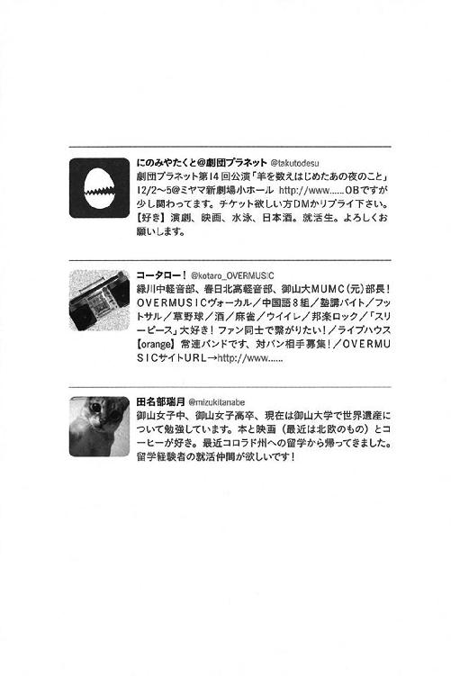
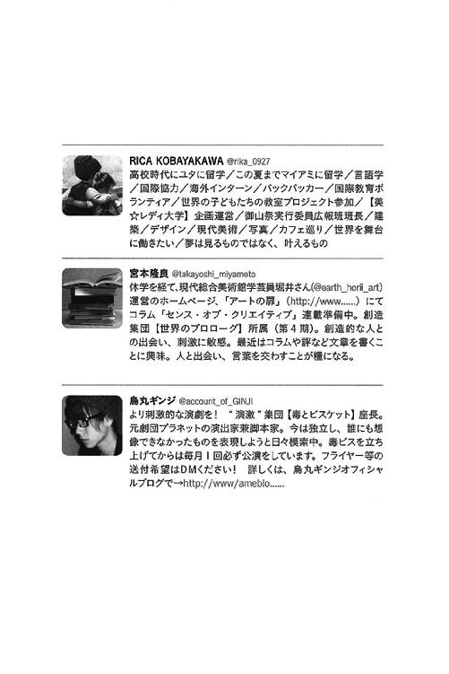
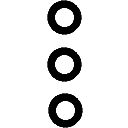

| 何者（新潮文庫） | |
| 朝井 リョウ | |
| (2015) | |
この作品の全部あるいは一部を無断で複製・転載・配信・送信すること、内容を無断で改変・改竄することを禁止します。また、有償・無償にかかわらず第三者に譲渡することはできません。
○新潮社の電子書籍：「Shincho LIVE!（新潮ライブ！）」
○新潮社の書籍：「新潮社ホームページ」
何者
朝井リョウ
何者


ドン、と、誰かの肩が当たって、リズムが崩れた。曲のテンポの波から外れた自分の体は、光太郎の歌声が作り出す空間そのものからポンと押し出されてしまったようだ。そのとたん、ライブハウスなんていう全く似合わない場所にいることを誰かに見つけられた気がして、急に恥ずかしくなる。
orange くらいの小さなハコだと、少し冷静になるからだろうか、ステージに立っている人たちが余計に遠く感じてしまう。
ふと気が付くと、てのひらがべとべとしていた。誰かの肩とぶつかった拍子に、つい、プラスチックのカップをぎゅっと強く握りしめてしまっていたらしい。大きく波打って溢れてしまったジンバックは、俺のてのひらだけじゃなく、前の人のパーカにもかかっている。ジンバックといっても、ほとんどが氷とジンジャーエールだ。てのひらがぷんと甘く匂う。
前の人は、光太郎の作った曲に夢中だ。俺がこぼしたジンバックに全く気付かない。
光太郎のくせのある前髪が、汗で束になって、額にはりついている。一緒に住み始めてもう長いけれど、家にいる光太郎とステージの上に立つ光太郎は、まるで同一人物ではないような気がしてしまう。
曲が終わった。拍手が沸く。カップを持っていないほうの手を動かして、俺も音が鳴らない程度に拍手をする。コウさーん、と、最前列右側あたりから若い声が飛んで、ほーい、と光太郎が普通に返事をする。ドッ、とその周辺が盛り上がる。たぶん、サークルの後輩や同期だろう。光太郎がそちらに向かってピースサインをすると、カメラのフラッシュらしきものがパッとステージを照らした。そしてまた、笑い声。
ステージ上って、お客さんの顔意外とちゃんと見えるんだぜ。前に光太郎はそう言っていたけれど、その言葉を今のあいつにそっくりそのまま返してやりたい。こっちからだって、お前の表情や所作のひとつひとつがよーく見える。だから、今みたいな内輪の空気を出されると、正直、こちらとしてはちょっと冷める。
「とりあえず、三曲聴いてもらいましたけど、どうすか？ 体あったまりましたか？」
イェーイ、と、またあのあたりから歓声が上がった。俺の周りにいる人たちはステージ上にいる誰の知り合いでもないのだろう、どういう態度を取っていいのか決めかねているようで、結局ちびちびとドリンクを飲んでいる。学生バンドとはいえドリンク代五百円はちゃんと徴収するあたり、ちゃっかりしている。
このライブハウスは、学祭のメイン会場である大学からは歩いて十分ほどの距離にある。それもあってか、客はまばらだ。
「今日は学祭最終日ってことで、俺たちＯＶＥＲＭＵＳＩＣにとっては引退ライブです。いやー引退ライブなんてずっとずっと先のことかと思ってたけど、もう今日、ていうか今なんですねー」
お前もあっというまにおじさんだぞ！ 後ろのほうから飛んだ野次は、まだまだ若いＯＢのものだろう。パーマのかかった前髪で目が隠れてるベースが声を出して笑う。マイクは、その声をていねいに拾いあげて、わざわざ俺のところにまで届けてくれる。
「いやあ、ほんと早いっす。高校と大学ってこんなにも時間の早さ違うのかって、ほんとそう思います」
ＭＵＭＣに入るために御山大に来たんだよね、俺、と、いつか光太郎がビールを飲みながら言っていたときのことを思い出す。あれはまだ大学に入学したて、授業といってもオリエンテーションばかりの毎日にあきあきしていたころだった。俺は、こっちに来て初めて入った飲み屋で、大学内に貼られているポスターでよく見る【ＭＵＭＣ】という文字が【ミヤマ・ユニバーシティ・ミュージック・クラブ】の略だということを知った。串焼きの盛り合わせは、一度すべての具材を串から抜くのがスタンダードだと知ったのも、あのときだった。高校を卒業したばかりのくせに光太郎はビールを飲みなれているように見えたし、俺は梅酒のソーダ割りばかり飲んでいた。あのときは、陽にあたると金色にも見えるような茶髪をワックスで立たせていた光太郎と一緒に住むことになるなんて、俺だけじゃなく周りの誰も想像しなかったと思う。
ジーパンのポケットから携帯を取り出す。癖のように、ツイッターの画面を開く。
コータロー！ @kotaro_OVERMUSIC ２日前
【拡散希望】明日あさってと、大学近くの orange でライブします！ 都営シティ線御山大学前Ｃ１出口から徒歩２分、18時スタートでチケ代は千円ポッキリ、ワンドリンク制です。俺のバンド、OVERMUSIC のサークル引退ライブでもあります！ みんなぜひ来てくれー!!
リツイート４ お気に入り１
田名部瑞月 @mizukitanabe ２日前
@kotaro_OVERMUSIC 帰国しました。ライブ行くよ、久しぶりに光太郎の歌聴けるの楽しみにしてる。
にのみやたくと＠劇団プラネット @takutodesu ２日前
同居人の引退ライブです RT【拡散希望】明日あさってと、大学近くの orange でライブします！ 都営シティ線御山大学前Ｃ１出口から徒歩２分、18時スタートでチケ代は千円ポッキリ、ワンドリンク制です。俺のバンド、OVERMUSIC のサークル引退ライブでもあります！ みんなぜひ来てくれー!!
「これ、使えば」
後ろから声がした。
探していないふりをしながら、ずっと探していた。後ろにいたのか、と、冷静に思う。
携帯を仕舞いながら振り返ると、そこには、写真では日常的に見ていたショートカットがあった。「はい」こちらに向かってハンカチを差し出している。
「ありがとう」
瑞月さんの右手には、半分ほどに減ったオレンジジュースが入ったカップが握られている。かつて光太郎が、アイツはちょっと飲ませただけで赤くなってふらふらになるから困る、とどこか嬉しそうに愚痴ってきたことを思い出す。
本当にひさしぶりに見る本物の瑞月さんは、写真よりもさらに髪を短く切っていて、少し痩せたように見えた。ピンと伸びた背筋は一年前と全く変わらない。
べとべとのてのひらをハンカチで拭きながら、俺は大きめの声を出す。
「瑞月さんも来てたんだ」
「うん、一応ね」
光太郎にリプライ飛ばしてたクセに「一応」だって、と、俺は思う。ツイッターでのやりとりをしっかり見ていて「瑞月さんも来てたんだ」なんて、俺も相当白々しいけど。
「髪、短いのやっぱ似合うな」
「ありがと」
「ていうか、めっちゃ久しぶりだよね？」
瑞月さんは「そうだね」とオレンジ色のカップを差し出してくる。乾杯。
「昨日のうちにちゃんと連絡しようと思ってたんだけど、なんかバタバタしちゃって」
「いや、まあ、ツイッター見てたし」
おかえり、落ち着いたら飲みに行こう。ちょっと前に自分が飛ばしたリプライを、俺は頭の中で反芻する。
「いま来たの？」
「ううん、はじめからいた。ていうか、昨日も来た」私もなんだかんだでＯＧみたいなものですから、と、瑞月さんは笑う。
「光太郎、ほんと歌うまくなったよね」
独り言のようにそうつぶやく瑞月さんの横顔に、赤色のライトが当たった。ピアスの穴が塞がっている。その横顔が少し大人っぽくなったように見える理由は、一年間のアメリカ留学だけではない。
「スーツ、もう買ったんだな」
俺の言葉に、「パンツかスカートか迷ったんだけど」と瑞月さんは笑う。スーツも似合ってる、と思ったけれど、それは声にはならない。
ステージから目を離しているすきに、どっと会場が沸いた。「勘弁してくださいよ～」とギターを抱えたまま照れている光太郎の表情を見る限り、光太郎が誰かにいじられているようだ。ドン、とドラマーがフットペダルを踏んで音を鳴らす。「ごめんごめん、次の曲ね、はいはい、怒んなよドラム」慌てる光太郎の姿に、また会場がくすくす笑う。
光太郎はこのサークルのみんなに愛されている。二年の秋に、三人の候補の中から部長に選ばれた、らしい。俺は瑞月さんからそう聞いた。光太郎は、そういうことを自分からは言わない。
「拓人くん、もう、舞台はやってないの？」
ああ、と、かろうじて、動揺していないような声を出すことができた。「そうだな、でも」となんとなく話し出したものの、その先の言葉が見つからない。そのとき、
「それでは、最後まで盛り上がってくれますか？」
ステージから光太郎の声が降ってきた。始まりかけた話題を終わらせるためにも、小さな声で「イェーイ」と答えてみる。とたん、カッと、耳まで赤くなったのが自分でも分かった。
「イェーイとか、光太郎に気つかわなくてもいいのに」
瑞月さんがふっと小さく笑ったのと同時に、ステージの光太郎が歌い出した。今度はバラードのようだ。聴いたことがない曲だから、これもオリジナル曲なのかもしれない。ただ、満員とは呼べない空間の中、本気でバラードを歌う表情をこの距離感で見ていると、決して自分に向かって歌われているわけではないのに、どこか気まずい。
自分の舞台を観に来てくれたときも、光太郎や瑞月さんは、こんな気持ちだったのだろうか。もうじゅうぶん赤くなったはずの耳が、さらに熱を持った。
ゆったりとしたリズムに合わせて、体を左右に揺らすべきかどうか迷う。黒目だけをギリギリまで右に動かして、瑞月さんのようすを見る。彼女のどこにも力の入っていない立ち姿を見て、俺は自分の肩がかちかちに固まっていることに気が付く。こんな小さなことにいちいち心を消耗している自分が、本当に嫌になるときが、たまにある。
バラードを歌うとき、光太郎は、スタンドマイクに声を巻きつけるように歌う。初めて見たときはその姿にちょっと引いたけれど、歌はうまいのだ。作る曲だってかっこいい。オリジナルじゃないかもしれないけれど、いま歌っている曲だってすごくきれいなメロディだ。
一番と二番のあいだ、光太郎の歌が途切れたところで、
「あ、瑞月先輩だ」
左耳にだけ、声が届いた。
「え!? 嘘、どこ？」
「ほら、あそこのスーツの、チェックシャツの人の向こう側にいる」俺は瞬時に、自分がチェックのシャツを着ていることを確認する。
「え、どれ、ほんとだ、髪切ってる、瑞月せんぱーい！」
左側から、人混みをすりぬけてふたりの女子がやってくる。サークルの後輩だろうか。光太郎と瑞月さんをチラチラ見比べながら近づいてくる。
「瑞月先輩、いつのまに帰ってきてたんですか！」
俺は返すタイミングを逃したハンカチを小さく丸めて、リュックのポケットの中に押し込んだ。
「いつのまにって、私、実は昨日も見に来てたんだけど」
「えー、全然気づかなかった！」
俺は心の中でため息をつく。
「先輩、スーツなんか着ちゃって、もしかしてあれですか、就活ですか？」
「まあ、そんなもん」瑞月さんは一口、オレンジジュースを飲む。
「えー、早くないですか？ だってまだコウさんだってバリバリの茶髪だし」
光太郎のことは参考にしないほうがいいよ、と瑞月さんが答えると、もう片方の後輩が「さすがー！」と手を叩いて笑った。
「下の代の男ども、みんな会いたがってましたよ、いま呼んできますね！」
やめとけ後輩、と思っても、もちろん声には出さない。やがて集まってくるであろう見知らぬ後輩たちに備えて、俺はさりげなく瑞月さんから離れた。
「ごめんね。またゆっくり話そ」
眉を下げて、瑞月さんが両手を合わせた。俺は「また」と、聞こえるか聞こえないかくらいの声で返す。
瑞月さんは、光太郎の歌声を浴びながら、後輩たちとにこやかに話している。「へえ、そんなことがあったんだ」「うっそ、あいつ骨折したの？ いま病院？」ちらちらとそんな言葉が聞こえてきて、俺はもどかしくなる。
光太郎の細い顎から、汗が一粒、落ちる。
きっと瑞月さんは、きちんと、光太郎の歌を聴きたかったはずだ。俺は壁にもたれて、残っていたジンバックを一気に飲み干した。
烏丸ギンジ @account_of_GINJI １時間前
昨日は充実！ 来月の公演のメンバーと飲みながら俺んちでブレインストーミング。そしたらみんな酔っ払ってきて気づいたら公園出て朝まで鬼ごっこしたり語ったり。こんな最高の仲間がいることが誇らしい！ とか思ってたらこんな時間に起きた（笑）マジ廃人（笑）いまから脚本書く。集中モード。
お気に入り２
まかないで食べたたらこクリームのシーフードパスタが、胃の中でどんどん消化されていくのが分かる。一歩踏み出すたび、噛み砕いた炭水化物がさらに小さくなって、さほど重要な栄養にもならずに消えていく感触がする。これじゃきっと寝るまで腹がもたない。麺類ってどうしてこんなに腹持ちが悪いんだろう。
吐く息が白い。携帯をジーパンのポケットにしまい、電光掲示板を見る。午後六時二十二分。あと三分で地下鉄が来る。
バイト先の店は、午後六時を境にカフェからバーに変わる。今日はカフェのオープンからシフトに入っていたので、この時間に上がっても何も言われない。これからさらに忙しくなるだろう厨房を横目にまかないを食べるなんて、バイトを始めたころは確かに後ろめたかったけれど、今ではもう何も感じない。
光太郎はまだ寝ているだろうか。さすがにもう起きているだろうか。オープンからシフトが入っているときは、朝七時には家を出ないといけない。案の定、今日の朝、光太郎は家に帰ってこなかった。学祭の引退ライブのあとの打ち上げなんて、朝まで飲むことが約束されているようなものだ。ほぼ百パーセント、顔を合わさずにバイトに行くことになるだろうとは思ったけれど、いざ本当にそうなると、俺はちょっと肩透かしを食らった気分だった。体の中からライブの余韻が無くなってしまう前に、一言「ライブ、良かったよ」くらいは言ってやりたかったような気がする。
冬の地下鉄は、ひとりで乗っている人を、より、ひとりにする。あんなに狭い場所に大勢の人が並んで座っているのに、体感的には全くあたたかくない。
膝の上に置いたリュックのポケットに手を入れて、家の鍵が入っていることを確認する。冷たい銀の感触を予感していた指先が、あたたかい布に触れた。一瞬、鍵を失くしたかと思って不安になったけれど、すぐに思い出す。ライブハウスで瑞月さんが貸してくれたハンカチ。ジンバックを拭いてからまだ、洗っていない。
マフラーを巻き直して地下鉄を出ると、コンクリートにしるしをつけるみたいにしてぽとぽとと雨が降っていた。ほこりっぽいような独特のにおいがするから、きっとまだ降り始めたばかりなのだろう。折りたたみ傘をリュックから出すのが面倒くさいので、俺は背中を丸めて小走りする。スーパーに入り、チャーハンの素と、豚肉のバラと、納豆と、牛乳を買う。それぞれの品物が置かれている場所はもうわかっているので、まるで星と星を繋いでいくように、俺はスーパーの中を慌ただしく動く。俺が歩いたところを線で繋いでいけば、「ひとり暮らし」という星座ができそうだ。ついいつも買ってしまう、牛乳の近くに置かれている乳製品のカップデザートを、今日はふたつ。無事、サークル引退ライブを終えた光太郎の分も、買っておいてやる。
よかった、まだ本降りになっていない。レシートをゴミ箱に捨て、俺はコートのフードをごそっとかぶった。耳が覆われて音があまり聞こえなくなったからか、急に、下りていく踏切のバーが他人事のように見える。俺は、牛乳の一リットルパックが入った袋の重さに引っ張られるようにして、十一月の終わりを濡らす雨の中を駆け抜けていく。
「おかえりー」
「あ、起きてる」
カーテンが閉められた部屋で、光太郎は大きなゴミ袋の口を結んでいた。部屋にゴミ箱はあるけれど、結局、キッチンのあたりに無造作に置いてある容積四十五リットルのゴミ袋に何もかも放り込んでしまう。
「飯は？」
「まかない食ってきた」
光太郎はレトルトのカレーを食べたようだ、ルーが付いた皿と大きな銀のスプーンがシンクに置いてある。基本、ふたりともあまり料理はしない。交代で買う約束の米を、こまめに三合ずつほど炊いておいて、おかずはレトルトだったりスーパーで買ってきた惣菜だったりすることが多い。
「ていうか、お前」
「黒髪短髪、意外と似合うっしょ」
癖っ毛がそうとわからないくらいに、光太郎の髪の毛は短く切られていた。まあ似合うけど、と言いながら、スーパーの袋から豚肉のバラを取り出すと、「ん」と光太郎が受け取ってくれる。豚肉、たまねぎ、キムチ、卵、魚肉ソーセージ、何だかんだ炒めたりするだけでおいしくなる類の食材くらいは、冷蔵庫に常備している。あとはマヨネーズに焼き肉のたれ、粉末状のカレー粉、めんつゆ。料理に詳しくないひとり暮らしにとって、これらの調味料は魔法のアイテムだ。
「今日、ずーっと寝てたのかと思った」
「そのつもりだったんだけど、なんか打ち上げのノリでそのまま美容院行くことになってさ」
金に近い色をしていたうねうねと曲がる癖っ毛が、もうリアルには思い出せない。余計なものがないモノクロの部屋に、シンプルな黒髪はぴったりと溶け込んでいる。
「ノリで髪染めるってお前、高一の夏休みかよ」ラップ任せた、と俺は光太郎にラップを手渡す。
「朝六時まで飲んで、そっから十時までカラオケ行って、開店と同時に美容院襲撃。切り終わるまで爆睡。起きてびっくりよ。頼みこめば予約とかしてなくてもやってくれるもんなんだな」
何それすげー迷惑、と笑うと、「なー」と他人事のような温度で返事をして、光太郎はラップに包まれた豚バラのかたまりを三つ渡してきた。二二〇グラムの豚バラを冷凍するとき、三食分に分けると炒め物をするにはちょうどいい。
「まあでも、学祭終わったら就活始めるって決めてたからさ、断髪式は結構いいスイッチになったかも」
「ふうん」しゅうかつね、と俺は言葉をなぞる。
「いやほんと今日まで就活に関してなんっにもしてこなかったからさあ、いろいろ教えてくれよ拓人」
他の品物をしまいながら、俺は「ああ」と生返事をする。髪を短くした光太郎を見て初めて、こいつはスーツが似合うのかもしれない、と思った。
冷蔵庫の上に置いてある電子レンジに、九月の終わりに切って以来伸ばしたままの俺の黒髪が映る。二か月分伸びた髪の毛は、人の輪郭をあいまいにする。
「あ、そういえば」俺は足元に置いていたリュックのポケットから、ハンカチを取り出す。そんなわけないのに、ジンジャーエールに含まれる糖分の匂いが漂ってくるような気がした。「洗濯物って溜まってる？」
洗濯機の蓋をあけると、ドラムの三分の二あたりまで衣服が積み重ねられていたので、そこにハンカチを放り込んだ。「あれ」光太郎が何か言いたげな顔をしている。上京したころは粉末状の洗剤を使っていたけれど、光太郎に感化された今ではすっかり液状洗剤派だ。
「拓人お前、瑞月に会ったの？」
思ったより近いところから、光太郎の声がした。すぐ隣で、洗濯ドラムの中を覗き込んでいる。
「ああ、会ったっていうか、瑞月さんも昨日のライブ来てたから。帰国してから初めて見た」
まあ帰ってきたのつい最近みたいだけど、という俺の言葉を、
「あいつスーツで来やがってなあ！」
と大声を出して光太郎は遮った。新しいゴミ袋を取り出し、そこにレトルトカレーの空のパウチを入れている。
「昨日のライブ中だけは就活のこと忘れさせてほしかったのにさ、ステージからスーツ見つけて萎えたわ」
瑞月さん就活もしっかりしそうだもんな、と、あたりさわりのないことを言いながらも、俺の意識は全く別のところにあった。
瑞月さんは、その朝まで続いた打ち上げに出席したのだろうか。いつもみたいに、お酒は頼まずジンジャーエールを飲んでいたのだろうか。いつもみたいに、参加したとしても一次会で帰ってしまったのだろうか。そうだとしたら、光太郎と同じテーブルに座ったのだろうか。約一年ぶりに、ちゃんと顔と顔を合わせて、話すことができたのだろうか。
光太郎が、ばさりと音を立ててゴミ袋を置いた。空のパウチひとつしか入っていないその袋は、くしゃくしゃとその場にしゃがみこんでしまう。
「瑞月さん、元気だった？」
なんとなく目を合わすことができずにそう言うと、
「さっきお前が洗濯機に入れたハンカチさあ」
光太郎が洗濯機の「おまかせコース」ボタンを押してくれた。そこで初めて、自分がボタンを押し忘れていたことに気が付く。
「付き合ってたころ、俺が瑞月にあげたやつなんだわ」
じょろじょろじょろ、と音がする。汚れたものでいっぱいの洗濯ドラムの中に、きれいな水が溜まっていく。
「びっくりした、あいつ、まだこれ使ってたんだな」
これ、使えば、と、なんのためらいもなくこのハンカチを差し出してきた瑞月さんの表情を思い出そうとする。だけど、なんにも思い出せない。たぶん、俺は、あのとき瑞月さんの顔をしっかり見ることができていなかった。
「じゃ、俺ちょっと寝まーす」
光太郎は背中をぼりぼりとかきながら、部屋のドアをぱたんと閉めた。平静を装った自分が少しバカみたいになる。
光太郎の分も買ったカップデザートは、結局、何も言わずに冷蔵庫に片付けてしまった。スーパーで見たときは、散々冷やされて固まってしまった生クリームの筋も、毒々しいくらい赤いいちごのソースももっとおいしそうに見えた。
バンドおつかれ、とか、昨日よかったよ、とか、そういう一言と一緒に差し出してやるつもりだった。だけど、あまりにも似合っているあの黒髪を見たら、それができなくなってしまった。
天気予報によると、明日は晴れだ。今日の夜、雨が止んだあとに干してしまえば、瑞月さんのハンカチも汚れた服も、全てすっかり乾くだろう。
御山大学には、キャンパスが二つある。二年生まではほとんどが、都内にしては少し田舎というか、「雰囲気がいい」としか言いようのない場所にあるキャンパスに通う。地方から出てきたひとり暮らし組は、その交通の便の悪さや東京っぽくなさに漏れなくぶつくさ言う羽目になる。そして三年生になり通うキャンパスが変わるタイミングで、俺は光太郎とルームシェアを始めた。
三年生から通うキャンパスは、ぐっと都心に近付く。すなわち、大学に通いやすいアパートに住もうと思ったら、自ずと家賃も高くなるのだ。引っ越し代に加え敷金、礼金のことを考えると、少しでも安いところに決めたい。けれど、二年間のひとり暮らしを経た結果、「ゆずれない条件」だけが増え、つまり物件の選択肢は減ってしまうのだ。
俺はそのとき引っ越し先をなかなか決められずにいて、学食のテーブルを埋め尽くす物件の資料たちとにらみ合いをしていた。だから、光太郎が真正面からニコニコしながら歩いてきたことに、全く気がつかなかった。
「おっす拓人」
声だけで光太郎とわかったので、俺は「っす」と顔を上げずに右手を挙げた。
「拓人、俺とルームシェアしねえ？」
「しねえ」
普通の会話の速度で返事をしてみたら、「えっ」と一瞬、光太郎は動きを止めた。だって誰かと住むなんて無理、と顔も上げずに言い放つと、「いやいや、断る前に話くらい聞けよ」と光太郎は俺の向かいの席に勝手に腰を下ろした。右手には携帯電話が握られていて、背中からは大きなギターケースがにょきっと伸びていた。鮮やかな色をしたパーカの首元から垂れるひもを見ながら、二十歳を超えてもこういう服が似合うのはこいつの特権だな、と思ったことを覚えている。
光太郎は、俺が見ていた物件の情報を隠すように、チラシの上に堂々と携帯とてのひらを置いた。
「ほら、俺たち一緒に免許合宿行っただろ」
「行ったな」
大学二年生の夏休み、クラスの男子四人で行った免許合宿は、朝が早いことと風呂場の湯が熱すぎたことと食事がおいしくなかったことを除けば、なかなか楽しかった。夏の山形はたった二週間の中でも暑かったり寒かったり気温の差が激しくて、ナイロン地のてろてろのジャンパーがとても役立った。
「そんでさ、二週間さ、俺たち同室だったじゃん」
「だったな」
合宿所はふたり一部屋なので、なんとなく、駅から合宿所までのバスで隣同士に座っていたコンビが同室となった。そういうところで男子はもめない。
「あの二週間さ、ノーストレスじゃなかった？」
「そうだった......っけ？」
あの二週間を思い出してみる。
光太郎が iPhone で流す音楽のボリュームが少し大きすぎるくらいで、確かにそれ以外のストレスはこれといって無かったような気もする。その音楽だって、光太郎がトイレに行っている間に勝手にちょっと音量を下げてしまえばそれでよかった。光太郎は音量の変化に全く気が付かなかったので、そこまで繊細な耳ではないのかもしれないと思ったこともうっすら覚えている。
「俺らさ、ふたりとも煙草吸わないじゃん」
「おう」
「会話がないときはないで良かったじゃん」
「まあな」
「アタシたちうまくいくと思うのよねっ」
ヴ、とメールの受信を知らせる短いバイブレーションが光太郎のオカマ声にツッコミを入れてくれたから、俺は遠慮なく無視することができた。
俺たちが大学生になって、携帯の画面はとても大きくなった。ぱっと光った画面に浮かんだ文字は、見たくなくてもはっきりと見えてしまう。
【田名部瑞月 SMS/SNS】
「俺、二週間の合宿って聞いたとき、さすがにちょっと疲れるかなって思ったんだよ。お前とだからとかじゃなくて誰とでもな。仕切りも何もないワンルームだったし。でもケンカとか一回もなかったし、個人的には、すっげえ楽だったの」
光太郎は部屋にいるあいだ、食堂に置いてある古いジャンプを何度も繰り返し読んでいた。やがて投稿ハガキのコーナーまで読み尽くし、俺につまらない一言ネタを試してきたりした。
ひとり暮らしも二年を過ぎると、確かに、だらだらと過ごす日常の中に誰かがいるというのは魅力的に思えてくる。それがどんな行動にも責任やプレッシャーが伴う彼女ではなく、気心の知れた男友達となると、さらに、心惹かれるものがあった。
「ほら、俺ら、なんだかんだ趣味も合うじゃん。俺はバンドで、お前は演劇。生活リズムもちょっと似てね？」
形は違えどステージの上で行われるものに携わっている俺たちは、どちらかと言えばふたりとも夜型の生活をしていた。
だけど、俺は現実主義者だ。思い付きで行動するということがあまりない。
「でもあれはさ、トイレとか風呂系の掃除とか、料理の準備とか後片付けとか、そういうの何もなかったからうまくいったんじゃねえの」
光太郎は、フンフン♪ と何かをごまかすように鼻歌を歌いながら、メールの返信を打ち始めた。俺の発言があまりに的を射ていたらしい。
「俺、料理とかしないし意外とゴミ溜めるし、風呂入りながらワンデーのコンタクト捨てるから排水口が定期的に詰まるよ」
「......いいよ！ 何でもいいんだ！ とにかく安いんだよふたり用の部屋って！」
自分のカバンの中から何枚かの資料を取り出し、光太郎はついに本当の理由をぶちまけ始めた。「あの駅周辺でひとり暮らしは金かかんだよなー、ちょっとここ考えてみてくんねえかなー？」
確かに、二つ以上の部屋を有する物件も視野に入れていいとなると、選択肢はかなり広がった。しかも、資料を見る限り、そういう物件は家賃を二で割ってみれば思ったよりも高くなかった。
口ではイヤだとかムリだとか言いながらも、光太郎との生活は不思議とすんなりと想像することができた。多分、俺は光太郎のやたらタフなところに少し疲れるんだろうし、光太郎は光太郎で俺の心配性なところにちょっとイライラするんだろう。
「な、結構魅力的な話だろ？ こことかバストイレ別で２ＤＫ、各部屋に収納もある、家賃だって、ほら割り勘にすればキツくないし。駅からちょっと遠いかもだけどチャリ買えばオッケーだろ」
「割り勘って飲み屋じゃないんだから」
口元をゆるめながら資料から顔を上げると、光太郎の鮮やかなパーカがどんと視界に入ってきた。胸には、大きなユニオンジャックをバックに、ポップな字体で「TICKET TO RIDE」と書かれてあった。
それを見た俺は、まあいいか、と思ってしまった。
俺にしては珍しい瞬間だった。光太郎みたいな強引なやつに誘われない限り、俺はきっと一生ルームシェアなんてしないだろう。それなら、このチケットで今までの人生になかったものに乗り込んでみるのもいいかもしれない。
「考えとくよ」
そう言いかけたとき、光太郎の携帯が今度は長めに震えた。ヴーー、ヴーー。メールではなく、電話だ。「あー着いた？ えっとねえ、学食の奥のほう、拓人といる」俺の目は、光太郎の背後、学食の入り口のあたりで、電話を耳に当てながらきょろきょろしている瑞月さんの姿を捉えていた。そのあとは自然な流れで、三人でそのまま昼飯を食べた。同じクラスの瑞月さんと一か月ほど前から付き合い始めた、と、聞かされたのは、このときだった。四分の一カットの冷やしトマトを無理やり口に含んだまま、ええええ、と低い温度で驚く俺を前にして、光太郎は照れくさそうに笑った。前に見に行ったライブの感想を伝えたときも、光太郎はこんな顔をしたな、と俺は思った。「なに、もう拓人くんには報告したのかと思ってた」瑞月さんは紙ナプキンで口元をぬぐいながら、苦手だというグリーンピースをさりげなく光太郎の皿に移していた。
ハンカチを返さなければならない。
俺は、光太郎自慢の巨大ビーズクッションに埋もれながら、ベランダで揺れるハンカチを見つめる。どんな形にもなる低反発ビーズクッションはとても大きくて、アパートに届いたときはびっくりした。だけど確かに心地よさはバツグンのため、来客者みんなに評判がいいらしい。
「拓人さん、けっこう小物に気ィつかうんですね」
昨日、バイト先の休憩室でハンカチを見ていたら、そんなことを言われた。
え？ と顔を上げると、まかないのパスタを抱えた後輩の女子が休憩室に入ってくるところだった。「それ」と、俺の持っているハンカチを指さしてくる。
「青山のナントカって店でしか売ってないハンカチですよ、確か。しかも数量限定。おしゃれ社会人のステータスみたいになってるらしくって」
姉ちゃんの勝手に使ったら追いかけ回されて殴られましたもん、と、女きょうだいにしては過激なエピソードを披露しながら、後輩はトマトクリームパスタを食べ始めた。深皿にはほんの少しのパスタしか入っていないのに、この子はいつもそのまかないをちょっと残す。
「てゆうかそれ、メンズデザインじゃなくないですか？」
「これ、俺のじゃないから。人から借りてて」
へえー、と、早速興味をなくしたふうに、後輩はパルメザンチーズを振り始めた。
「それなら、ちゃんと洗って返したほうがいいですよ。たぶん早く返せって思ってますよ相手も」
「マジでか」
「マジでだ」
何だその返事、と俺が笑うのも気にせず、後輩はスプーンを土台にしてくるくるとパスタを巻きながらファッション雑誌に目を通し始めた。きっとこのハンカチも、ああいうファッション雑誌に載っていたのだろう。スーツに合う大人小物とかなんとか、そういう言葉が勝手に想像される。そういうものを雑誌で見つけて、実際にその店に足を運ぶという行動力は、自分には備わっていないものだ。
洗濯ばさみに挟まれたハンカチは自由気ままにひらひら揺れる。俺の方を見ていると思ったら急に背を向けたりしてきて、まるで大人びた少女のようだ。返すかどうか早く決断すれば、とハンカチから言われたような気がしたけれど、それはなぜかあの後輩の声で再生された。
間取り上、光太郎の部屋からしかベランダに出ることはできない。だから、洗濯物を干したり仕舞ったりするためには、いちいち光太郎の部屋に出入りしなければならない。部屋の主は「髪切ったあとって、人に会うの緊張するよなー」と毛先をくりくり指先でつまみながら、朝からバイトに向かった。塾講師をしているから、きっと生徒たちからいろいろ突っ込まれるのだろう。
☆★光太郎さん 引退おめでとうございます！☆★
ずぶずぶとビーズクッションに埋もれていくと、目線が、丸テーブルに置かれた一枚の色紙と同じ高さになった。
部長最高！
神谷センパイともっともっと絡みたかったデス
光太郎さんとのカラオケは異次元
ＯＶＥＲＭＵＳＩＣずっとスキです☆ 音楽やめないでくだサイ！
渦巻きみたいな文字のど真ん中でぴっかぴかに笑う光太郎の似顔絵が、部屋の電灯の反射により一瞬、見えなくなる。やっぱりこういうものは、共感できる者同士のテリトリーの中で爆発させるべきものだ、と、改めて思う。そうすれば、こんなにも輝かしいものとして見ることができる。想像力がない人は、絶好のチャンスだと言わんばかりに、こういうものを外へ外へと発信する。自分はこんなにもがんばってきたと、自分はこんなにも愛されていると、そう思われるために思い出を外へと発信する。
光太郎のいいところは、想像力があるところだ。きっとサークルの打ち上げは最高に楽しかっただろうし、この寄せ書きもめちゃくちゃうれしかっただろう。青春時代のすべてを凝縮したような写真だってたくさん撮っただろう。だけどそれを、むやみやたらと発信したりしない。するとしても、その感情に共鳴できる人たちに向けてのみ発信する。
光太郎は、その事柄に全く関係の無い人が「最高の仲間！」とか「みんな大好きありがとう！」とかそういう文面を見たとき、瞬く間に心が冷えていくことをきちんと想像できる側の人間だ。
ふと気が付いたら、吸い寄せられるように携帯に手が伸びていた。アドレス帳から、瑞月さんの電話番号を探す。
想像力。想像力。
ギンジならきっと、こんな寄せ書きを手にしたとたん、外へ外へと発信する。本当に大切な思い出を語るわけではなく、自分を何者かであるように見せるための材料として。
自分が劇団プラネットを引退したときにもらった寄せ書きは、どんなだっただろうか。こんなふうに、部屋の一番いいところに飾ろうと思えるようなものだっただろうか。
いつのまにか、ほとんど床に辿り着くほどクッションの中に沈んでしまって、俺はそこからもう二度と立ち上がれないような気がした。
【あ、えーっと、実は】
電話の向こう側で瑞月さんが含み笑いをしたのが分かった。
「ん？」
【拓人くん、ちょっと、ちょっと待っててね】
ハンカチを返したいんだけど、と電話をしただけなのに、瑞月さんはどこか楽しそうにしている。ぱたぱたと早足でその場を移動しているのが電話越しでも分かった。
ピンポーン
突然鳴った大きな音は、ビーズクッションに沈んだままの俺の運動神経を直接突いてくるくらいの衝撃だった。アパートのインターホンが鳴ると、いつもこれくらいびっくりしてしまう。
はいはいはい、とどうにか起き上がり、玄関へと走る。あ、電話、と思いながらドアを開けると、そこには瑞月さんがいた。
「えっ」
「えへへ」びっくりでしょ、と瑞月さんはいたずらっぽく笑う。
「私の友達、上に住んでたの。ちょうど遊びに来てたときに拓人くんから電話かかってきたからさ」
もしかして家にいるかなと思って、と言う瑞月さんの耳には、もう電話は当てられていない。
スウェットにメガネ、ひげも剃っていなかった俺は、もうどこにもつながっていない電話を耳から離せないまま、その場に立ち尽くしてしまった。
上の階の部屋の間取りは、びっくりするくらい俺たちの階のそれと同じだった。ただ、上の階のほうが家具やアイテムが凝っていておしゃれだ。自分たちがいかにインテリアに興味がない者同士で住んでいるのかということがよく分かる。
「いらっしゃい。って、私の家じゃないけど」
なんだかいつもより楽しそうな瑞月さんは、今日もリクルートスーツを着ている。
「おー、拓人見ろよ、間取りがウチと全く一緒！ ってまあ当然か」
ニヤニヤしながら、光太郎は大股で部屋の中に入っていく。「あ、ども！ これコンビニで買ってきた菓子とジュースあとビールも」と、光太郎がふくらんだビニール袋をがさがさとさせると、奥のほうから「あ、そんな、ありがとうございまあす」という知らない声が聞こえてきた。
「あ、これ」
俺がハンカチを差し出すと、瑞月さんは「え？ 洗うの早っ」と笑った。雑誌で取り上げられているようなお洒落なハンカチは、リクルートスーツ姿の瑞月さんにとてもよく似合った。
一時間ほど前、突然ドアの前に現れた瑞月さんは、楽しくて仕方がないといった表情をしていた。「友達の家が、ほんとに偶然、上の階だったんだよね」あ、そうなんだ、と適当なことしか言えないスウェット姿の俺の戸惑いを気にせず、瑞月さんは話し続けた。「いま一緒に就活の対策練ったりしてて」途中、あ、と何かに気づいたみたいに目を大きくした。
「よかったら、拓人くんも来ない？ ......みんな就活生なんだし」
わかった、となんとなく返事をしてしまった。俺はそれから急いで顔を洗い、髭を剃った。毛深いわけではないけれど、髭が伸びるスピードは、最近特に早くなった気がする。
さっきの「みんな」という言葉の中には、きっと光太郎のことも含まれている。いや、含まれているというよりも、光太郎を含むために「みんな」という言葉を使用しているように聞こえた。
「女子生徒から黒髪のほうがかっこいいって言われちゃったん♪」と、光太郎が上機嫌でバイトから帰ってきたのはそのときだった。「何お前、服着替えて。今から出かけるの？」夜に向かっていく窓の外を見ながら光太郎は怪訝そうな顔をしたけれど、事情を説明すると、「じゃあ俺なんか差し入れ買ってくるわ」お前は身支度の続きしてろ、とすぐに最寄りのコンビニへと走って行った。
光太郎の動きは慌ただしく、その表情の変化を読み取ることはできなかった。だけど今思えば、動揺を隠すためにすぐコンビニに行ってしまったのかもしれない。
「あ、私このお菓子好きです」
部屋の奥から、知らない女性の声がする。
「あ、俺もなんすよ！ うまいっすよね～」
ですます調同士の会話に、俺も探り探り入っていく。
「こいつバカ舌なんで不味いもん買ってきてたらすんません」
「お前、やっと共通項を見つけたところなのにそんなこと言うなよ！」
「人の家でもうるさいなこいつは」
あはは、と軽やかに笑う瑞月さんの友達は、薄いニットにジーパンというラフな格好をしている。俺と光太郎がばたばた準備をしている間に、スーツから部屋着に着替えたのだろう。
「大丈夫、私もバカ舌だから」
って、それじゃあ失礼なことに変わりないか、と、その子は下から俺たちを見上げるようにして笑っている。口角がすごく上がるんだな、と俺は思った。
「なんかすいません、いきなり来ちゃって......」そこまで言って、なんだかこれじゃ誘ってくれた瑞月さんを非難しているみたいだな、と思うと、「ううん、全然」とその子がまた微笑んでくれたので助かった。
「どうせみんな就活生なんだから、むしろ歓迎。いろんな業界に興味ある子がいたほうが情報収集できるしね」
座って座って、と促され腰を下ろしたじゅうたんは、陽を思いっきり吸い込んだようにふかふかだ。もちろん、ゴミなんてひとつも落ちていない。フローリングの床に直接座らざるをえない俺たちの部屋とは、いつか来るであろう客人への気の遣い方が違う。
俺たちのひとつ上の階のこの部屋は、シンプルなようで細かい装飾も多く、まさに女子の部屋といった感じだ。コルクボードにバランス良く貼られた写真や、インテリアのように置かれている海外のカラフルなゴシップ誌などは、男子の部屋ではきっと見られない。ベッドと本棚とテレビとガラステーブル、ごてごてしたアイテムはないし、いきなり初対面の男ふたりが訪ねてきてもこうして簡単に家に入れられるくらいに、洗練されている。
ガラステーブルの上では、真新しい紙の白が光っている。そしてその白の右上には、小さな枠の中でほほ笑む瑞月さんがいた。スーツを着て前髪をぴっちり分けた瑞月さんは、どんな大きさに切り分けられても同じ表情をしている。どの瑞月さんも、紙の上からまっすぐにこちらを見上げている。
「理香とは留学生の交流会で知り合ったの。外国語学部の国際教育学科なんだって」
「わ、あったまいい」
うちの大学で一番偏差値の高い学科の名前を出されて、俺たちは思わず声を漏らす。
「小早川理香です。よろしく」
はじめましてー、と語尾を伸ばしながら、光太郎が早速足を崩した。俺もそれに続く。
「俺、神谷光太郎。神とか光とか名前に入ってるけど超凡人ね。こいつは一年のときから俺と同じクラスで、っていうかいまの同居人」
光太郎が顎で俺のほうを指す。自己紹介のバトンにしては粗雑だ。
「あ、二宮拓人です。よろしく。えーと」いつも思うけれど、自己紹介って凄く難しい。「瑞月さんと光太郎と同じで、社会学部」
「拓人くんは舞台やってて、それがけっこうおもしろいの。まだ現役で舞台続けてたら、理香と一緒に観に行きたかったくらい」
「そんなこと言ったら、こいつはバンドやってたからね」
光太郎にバトンを戻すことで自分の話を早々に切り上げながら、俺は、舞台上からの景色をほんの少し思い出した。
舞台からは、観客の顔が想像以上によく見える。客席から俺のことを見上げていた瑞月さんの目は、はじめてその目を見たあの日と何も変わらなかった。俺のことをすごいね、と言ってくれた、全く濁りのないあの目。
ぷしゅ、と、空気が弾ける音がした。光太郎は早くもビールを飲もうとしている。
「瑞月も向こうでインターンしてたわけだし、なんかいろんな経験持った人が集まっておもしろいね。就活対策本部って感じ」
ふたりのエントリーシートには、【留学】【インターン】という言葉たちが仲良く肩を寄せ合っている。その文字が、暗闇の中を走る自転車のライトみたいに、ふっと光った気がした。
「なにこれ」
俺の目線を追うようにして、光太郎もテーブルの上を見ている。
「もうこういうの書いてんの？ 早くね？」
「これね、大学のキャリアセンターからもらってきた練習用のエントリーシート。早めに取り掛かっといて損はないでしょ」
っへえ～と、光太郎は貴重な古文書でも眺めるかのように嘆息した。シートの上部には、【内定直結！ 最強ＥＳへの道】という文字たちが堂々と胸を張っている。
「どこでも聞かれそうなことがまとめられてるんだ、コレ。いまからこの回答をひたすら練っておけば、この先コピペで使いまわせるってわけ」
テキパキした理香さんの受け答えに、光太郎は「っはあ～」とやはり感嘆まじりの声を漏らす。こういう、就活への具体的な準備を、光太郎は初めて目の当たりにしたのかもしれない。
「拓人こんなことしてたっけ？」
「いや俺は、特には」
「......これ、俺もやったほうがいいんだよね？」
すがるように俺を見つめてくる光太郎の表情がうっとうしくて、「まあ絶対やらなきゃいけないってわけじゃないと思うけど」と俺は軽くあしらう。
「でも確かに、メジャーな質問への回答をまとめておくって作業は大事かもな」
「勉学」でがんばったこと、のカッコの部分を見ながら俺が頷くと、「ね」と瑞月さんが微笑んでくれる。ふう、と息を吐いて初めて、上半身が強張っていたことに気づく。
「やっぱみんなもうバリバリ対策してんの？ 俺、ぶっちゃけ就活のこと全然わかってねえからさぁ。昨日黒染めしてもう満足してた」
「そんな焦らなくてもいいとは思うけど」
俺は光太郎からシートを受け取る。
「嘘でもいいから今から面接用に話すことを固めておけば、実際に面接で話すころにはそれが本当のように思えてくるだろうし......確かに今からこういうことしといて損ではないのかもな」
俺の言ったことは、いまいち光太郎にはピンとこなかったみたいだ。「嘘でもいいから？ そういうもん？」と、光太郎はどこかスネたように視線を泳がせている。
壁には、理香さんのものだろう、ハンガーにかけられた女性もののスーツがぶら下がっている。すでに一度クリーニングに出したのか、丸ごと透明の袋に包まれている。
「面接とかいやだな、俺。意外とメンタル弱いんだって、マジで」
「何でもう傷つく前提で話してるのよ」なだめるようにそう言う理香さんに、わかってないなあ、と光太郎はつぶやく。
「俺は留学もインターンも何もしてないの。君たちとは違うの。勉強もまじめにしてこなかったの。この際理系に進んどきゃよかったかなあ、そうすれば就活までもう二年あるし、推薦枠ですいすい、だろ。ぬるぬる文系の俺は面接で話すことなんて何もねえの」
「そんなことないって。ねえ」理香さんに同意を求められ、瑞月さんが曖昧に頷く。
「英語ぺらぺらとかそういう強いカード持ってるヤツにそんなことないとか言われてもなあ」
なあ？ と、今度は俺が同意を求められる。ん～、と唸ってみてから、
「でも、お前が持ってるカードを強いカードに見せかけることはできるんじゃねえの」
と、言ってみた。一瞬、俺に視線が集まる。
「面接って、確かに自分が持ってるカードを出していく作業みたいなもんだろうけど、どうせどんなカードでも裏返しで差し出すんだよ。いくらでも嘘はつけるわけだから。まあもちろん、嘘だってバレたらおしまいなんだけど」
就活がつらいものだと言われる理由は、ふたつあるように思う。ひとつはもちろん、試験に落ち続けること。単純に、誰かから拒絶される体験を何度も繰り返すというのは、つらい。そしてもうひとつは、そんなにたいしたものではない自分を、たいしたもののように話し続けなくてはならないことだ。いまからこの模擬ＥＳで準備をしておけば、自分を騙し続けることになるスタート地点が早くなる分、面接を受けるころにはもうそのあたりの感覚がいい具合に麻痺しているかもしれない。
「就活って、トランプでいうダウトみたいなもんなんじゃねえの。一を百だって言う分には、バレなきゃオッケー。ダウトのとき、１をキングだって言うみたいにな。でも、裏返されてそれが１だってバレれば終わりだし、カードがなければ戦いに参加することもできない。つまり、面接でもゼロを百だって話すのはダメ。それはバレる」
「なるほどね、ダウトみたいなもの、か」
ふむふむ、と光太郎は納得したように頷く。
「でも俺、ダウトすっげえ下手くそなんだけど死ぬのかな？」
「知らねえよ！ お前は一人で神経衰弱でもしてろよ」
犬のようにすり寄ってきた光太郎を剥がしながら、俺は、心のどこかがもやもやと黒ずむのを感じた。
さっきの俺は、光太郎にアドバイスをしてやろうという思いやりの気持ちから話し始めたわけではなかったのかもしれない。それなりに強いカードを持つふたりに、そのカードがそれほどでもないことを思い知らせてやりたいと思ったのかもしれない。
瑞月さんが、テーブルの上のエントリーシートを不安そうに見つめている。
「とにかくさ、もうすぐ十二月だもんね。いよいよ本格始動って感じ」
理香さんの言葉に、瑞月さんが気を取り直したように頷いた。ふたりの履歴書には、揃って、ＴＯＥＩＣの点数がとても濃い字で書かれている。
ふたりとももう、就活用の写真を撮ったらしい。きれいに写っているから、きっと、ヘアメイクをしてもらえる写真スタジオに行ったのだろう。テーブルの上に転がっている「内定祈願」という文字が彫られた鉛筆は、その写真スタジオでもらえるもののはずだ。
ぴしっと左右に分けられた前髪。その間で、ぱっちりと開かれた目。理香さんと瑞月さんはふたり揃って、規定のサイズに切り取られたカラー写真の中からこちらを見つめてくる。
こんな、自分の未来を信じて疑わない目が、日本全国そこらじゅうにある。それだけで、きゅっと心臓が小さくなる気がした。
「とりあえず、俺ビール飲んでいいですかー！」
突然、拳のようにアルミ缶を突き上げた光太郎の声で、俺は我に返る。
「ていうかていうか、十二月から本格始動するってマジなの？ だって面接って四月とかからじゃないの？」
光太郎は勝手にビールを飲みだす。意外にも、理香さんも缶ビールに手を伸ばしたので、慌てて俺もそれに続く。
「ま、十二月一日に就職サイトがオープンするからね。やっぱそっから本格始動って感じだよ」
去年、オープンと同時に全国の就活生が各就職サイトに殺到しサーバーがダウンしたことは、大学の中でもちょっとした話題になった。
「それに、私と瑞月は外資も受けてみようと思ってるから、特にスタート早いかも。あとやっぱベンチャーとかも受けるつもりだからさ、実はもう戦いは始まってたりするんだよね」
ホント早いよね、と理香さんは力なくつぶやいたように見せているけれど、ＴＯＥＩＣに海外留学にインターンに、両手が武器でいっぱいのその姿は、開戦が待ち遠しくてしょうがない兵士のようにも見えた。
「ベンチャーとかだともう始まってんの？ マジで？ 嘘っしょ？」テンポよく話す光太郎の向こう側で、瑞月さんはひとり、ジンジャーエールの入ったペットボトルのキャップをひねる。
ぷしゅう。
光太郎が買ってきた差し入れの中には、ビールと、みんなでつまめるおつまみと、果実系のサワーと、ペットボトルのジンジャーエールが一本入っていた。
みんなで飲むための二リットルのソフトドリンク枠としてのジンジャーエールではなくて、誰かがひとりで飲むことを見越した、五〇〇ミリリットルのジンジャーエール。誰のために買われたものなのか、そんなこと、考えなくたって分かる。
「早いとこだと年明けにもう面接始まったりするよ。ＥＳ持参で説明会に行って、もうその日のうちに一次面接やらされたりとか」
「イーエス？」光太郎がきょとんとする。
「エントリーシートのことな。頭文字とったらＥＳだろ」
「ああ、細胞かなんかかと思った」
拓人兄さん頼りになります、とおちょくってくるので、俺は光太郎の頭を殴る。
「でも、ベンチャー疲れってのもよく聞くよな」
俺は缶ビールをテーブルの上に置く。コン、と気持ちのいい音がした。
「練習練習ってベンチャー受けすぎて、いざ本命群の前に疲れちゃうってやつ」
「あー俺そのタイプかも。すぐ疲れちゃうも～ん」
軽くそう言う光太郎の横で、理香さんの表情が少し強張るのが分かった。
「だから俺、ベンチャーはいいかな。その分、本命の業界の研究をちゃんとやるつもり」
「戦い方は人それぞれだもんね」
理香さんはそう言うと、テーブルの上に拡げられていた模擬ＥＳをさりげなく裏返して立ち上がった。
「ビールも飲み始めたことだし、ちょっとおつまみ作るね。豚キムチとかでいい？」
うわー、すんません！ と光太郎はわかりやすく両手を合わせる。なんか手伝おうか、という瑞月さんの申し出を、理香さんは「ううん大丈夫大丈夫」とやんわり断った。
裏返された模擬ＥＳは、水のりを使ったからだろう、証明写真が貼られているところだけでこぼこと波打っている。ＥＳを透かせば、証明写真に写っているはずのないまっすぐに伸びた自信満々の背中が見えるような気がした。
「マヨネーズとキムチがあるから、豚キムチマヨにしちゃお」キーワードだけで涎が出てきそうになる言葉を聞きながら、俺は思った。
この子は、多分、すごくプライドが高い。
「初めて知ることばっかりでやべえ、俺、今日でやっと就活始められるかも。マジ来てラッキーだったー」
興奮した様子の光太郎がチーズ味のカールの袋に手をかけたとき、ガチャリと大きな音がして、呼び鈴も鳴らずにドアが開いた。
「ただいま」
「ぎゃっ」
突然の訪問者に驚いた光太郎が、カールの袋を爆発させる。「げっ」とその訪問者が分かり易く顔をしかめた。
ドアを開けた背の高い男性は、パーマがあてられた長い前髪の間から、いぶかしげに俺たちのことを見ている。「あ、隆良おかえりー」という理香さんの声を聞いて初めて、ここがふたりで住むのにぴったりな物件だということを俺は思い出した。
宮本隆良 @takayoshi_miyamoto ２日前
彼女のシューカツ仲間がウチにて会議中。就活なんて想像したこともなかったから、ある意味、興味深い（笑）。そんな彼女たちを横目に、買ってきた「思想を渡り歩く」を読み進める。ゼロ年代文化の転換期（変革期といってもいい）についてのコラム集。とっても、興味深い。instagram......
お気に入り１
文末にちょろちょろとついている英字の羅列をタッチすると、五秒後くらいに俺、光太郎、瑞月さん、理香さんがテーブルを囲んでいる写真が携帯の画面いっぱいに広がった。写真加工アプリでも使ったのか、色彩のバランスが変えられていて、なんとなくレトロな印象だ。光太郎だけがピースサインをしているが、他はみんな、背中を丸めて模擬ＥＳに取り組んでいる。
アドレス教えて、という言葉に含まれるどこか疑わしいニュアンスは、「ラインやってる？」「ツイッターやってる？」「フェイスブックやってる？」という言葉によって過去のものとなった。アドレス以上の情報がこれでもかと詰まっているものなのに、俺たちは、誰かと知り合ったらまずＳＮＳのアカウント名を教えあう。
「思想を渡り歩く」
「は？」
ちくわの輪切りとしょうゆとマヨネーズを持ってきてくれたサワ先輩が、すっとんきょうな声を出した。
「いや、何でもないす」
たくさんあるちくわのうちの一つに、つまようじが二本、刺さっている。
「何だよ急に。もうアタマ疲れちゃったか？」
マヨネーズとしょうゆを和えて、そこにちくわをつけて食べる。俺の好物を、サワ先輩はいつも出してくれる。
「何それ」
サワ先輩の持つつまようじの先が、理香さんからもらった模擬ＥＳに向いている。
「模擬ＥＳです。エントリーシートの練習版」
「そんなの、お前、今更やる意味ないんじゃねえの？」
サワ先輩の家は一年中こたつが出ている。スイッチを入れてもいいのは十二月一日から、というわけのわからない信条のせいで、まだスイッチは入っていない。ひとつしかない座椅子に先輩が座って、俺の定位置は座椅子に向かって左の辺。先輩が座椅子に座っていないときでも、俺はその左の辺にごそごそと足を突っ込む。
定位置が右の辺だったヤツは、もう長い間、この部屋に来ていない。
「どんなこと書いてんの、見せろ」
サワ先輩が模擬ＥＳを覗き込んできたので、俺は慌てて腕で隠す。あのあと、理香さんは「これ四人とも書いて、みんなで添削し合おうよ」と、俺と光太郎の分も模擬ＥＳをコピーしてくれた。
クローズまでバイトのシフトが入っている場合は、たいてい一緒に締め作業をするサワ先輩のアパートに泊まりに来ることが多い。サワ先輩は、こうして部屋に来ると、何だかんだでもてなしてくれる。洗い物が面倒なのか、さっきのちくわみたいに、火を使わなくてもできるものを用意してくれるのだ。
理系のサワ先輩は学年が進むにつれキャンパスが変わるなんてことがないので、一年生のころから同じアパートに住み続けている。俺はキャンパスもアパートも変わってしまったけれど、バイト先だけは変えなかった。サワ先輩に教えてもらった、昼はカフェ、夜はバーというスタイルのチェーン店は、店長やバイトのメンバーが良い人ばかりでとても居心地がいい。
「お前、座椅子使えば？ 背もたれあったほうが楽だろ」
先輩は立ち上がって、パソコンの置いてあるきちんとしたデスクに向かう。
「いや、ここは先輩の定位置なんで」
先輩がいま座っているキャスター付きのちょっと高めの椅子は、先輩の誕生日プレゼントとして俺とギンジでお金を出し合って買ったものだ。ふたりでロフトに行き、たくさんの椅子に試し座りをした。
俺の向かい、座椅子に向かって右の辺がからっぽになってから、もうどれくらい経っただろう。あの辺にはいつもギンジがいて、三人でああでもないこうでもないと言いながら朝まで脚本を練り直していた。
サワ先輩は、俺にいまのバイト先を紹介してくれた人でもあるし、大学一年生のころからずっと在籍していた【劇団プラネット】の先輩でもある。劇団の中では、役者というよりも大道具や音響の仕事をしてくれていた人で、後輩みんなに慕われていた。そして何より、先輩は脚本を読む力があった。俺がホンを書いていて煮詰まったときはすぐに相談していたし、おもしろい演劇や映画、小説やマンガなんかも、みんなまるごとサワ先輩から教わったように思う。なんとなく演劇をやってみたいと思って新歓期の大学をさまよっていた俺を勧誘してくれたあのときから、俺はサワ先輩の世話になりっぱなしだ。
「先輩、今日は研究室いいんすか？」
「おう、まあ。でももうすぐまた帰れない日々が始まるかな」
「たいへんたいへん」
顔を上げずに生返事をすると、「お前思ってねえだろ」とこたつの脚を蹴られた。シャーペンの先がザ、とズレて、どの文字よりも立派な線がＥＳを横断する。
理系の大学院の一年生であるサワ先輩は、俺たちと同じ就活生だけど、院の推薦枠で、もうほぼ内定を手にしている。その代わり、時期によっては本当にやつれてしまうほど忙しそうにしているが、俺はその忙しさがほんとはちょっぴり羨ましい。サワ先輩を襲う、実験や研究による忙しさは、これから俺たちが参加していこうとしている社会からきちんと肯定されている気がする。サワ先輩の「忙しい」は、ほんとうにちゃんとした「忙しい」で、俺や光太郎が同じ言葉を使ったとしてもきっと、全く同じ意味にはならない。
「そういえばお前、次の舞台、なにで関わってんの？」
「え、なんで知ってるんですか？」
「同期から聞いた。なんかお前のツイッターに書いてあったって」
そういえば、少し前にそんなことを書いたかもしれない。画面を開く。
にのみやたくと＠劇団プラネット @takutodesu １日前
近づいてきました。劇団プラネット第14回公演「羊を数えはじめたあの夜のこと」12／２～５＠ミヤマ新劇場小ホール http://www......ＯＢですが少し関わってます。ぜひよろしくお願いします。
「......ああ、脚本ちょっと手伝っただけっすよ」
「マジで？ 俺、読ませてもらってないけど」
「後輩が俺んとこに駆け込んで来たのがもうギリギリでしたからねえ」
まあ下の代がつくる舞台なんでいつものちょっとよくわかんないやつですよ、と一丁前のことを声に出してみたところで、向かいの辺からは何のレスポンスもない。
ツイッターの自己紹介画面に映っている自分の名前。にのみやたくと＠劇団プラネット。劇団の脚本を書いたり役者として舞台に上がるときは、名前をひらがなで表記する。そんなダサいルールを決めたのは、初舞台を踏んだ大学一年生の六月のころだった。
漢字をひらがなにする、たったそれだけのことで何者かになれた日々は、もう遥か昔のことのようだ。
「お前、ギンジの新しい舞台観た？」
突然その名前が聞こえてきて、俺は一瞬、何も言えなくなる。
「......観てないす」
「俺ＤＶＤもらったけど、持ってく？」
うーん、と煮え切らない返事をして突っ伏したら、サワ先輩は俺の手がギリギリ届かないあたりにＤＶＤを置いた。いっそのこと俺のカバンにねじ込んでくれればいいのに、と思う。この距離では、自分から手を伸ばさないとＤＶＤに触れられない。
拓人がひらがなにするなら俺はカタカナにする。
初舞台の直前、銀次はそう言って、ギンジ、と紙に書いた。「俺の名前、カタカナだとライバルキャラっぽくてかっこいいな」はじめは主人公と嫌い合ってるけどあとからお互いを認め合う親友になるタイプの名前って感じしねえ？ と、いつもどおり勝手にストーリーを膨らませていくギンジについていくだけで、俺は毎日いっぱいいっぱいだった。
大学にいたころから、ギンジは自分のブログを開設していた。だけどそれは、烏丸ギンジの演劇製作日記、とかそういうありきたりなタイトルにふさわしく、自分の脚本の進行具合や劇団プラネットのちょっとしたオフショットをアップする程度のものだった。ギンジというよりも銀次が書いているという空気があった。あのころはまだ、俺とのツーショットなんかもよく載せられていて、「ファミレスで朝まで脚本会議！」なんて記事に対して、こういうがんばってますアピールだせぇからやめろよ、と面と向かって茶化すことだってできた。
どうしてこんなふうになってしまったんだろう。いつからこんなふうになってしまったんだろう。
テーブルにあごを載せたまま、目線だけでＤＶＤを見る。パッケージの表面に書かれた文字を一文字ずつ読む。定期公演ＤＶＤ烏丸ギンジ総合プロデュース激団【毒と──そこまで読んで、また顔を突っ伏した。
新しい劇団【毒とビスケット】では、毎月、必ず公演を行います。
ギンジは、ずっと一緒に盛り上げてきた【劇団プラネット】を辞めてすぐのブログ記事で、そう宣言した。
演出も脚本も自分でプロデュースする新作をつくりつづけます。僕はそのために劇団プラネットを辞めたし、新しい劇団を創りました。そのために今、自分にしかできない表現方法を模索しています。舞台は無限に続いています。俺はそれをどこまでも追い続けたいんです。
寒い、と、俺は思ってしまった。
その記事は、投稿時の日付が二〇五〇年の一月一日に設定されているから、いつまで経ってもブログのトップページに堂々と表示され続ける。
ギンジは今、誰にも伝えなくてもいい段階のことを、この世で一番熱い言葉をかき集めて、世界中に伝えようとしている。自分にしかできない表現。舞台は無限。甘い蜜でコーティングをしたような言葉を使って、他人に、理想の自分を想像してもらおうとしている。
想像。
想像力が足りない人ほど、他人に想像力を求める。他の人間とは違う自分を、誰かに想像してほしくてたまらないのだ。
俺は上半身を起こして、目の前のテーブルを見つめる。
学生時代に一番がんばったこと（具体的に三つ）。この業界を目指す志望動機。自分の好きなところ、嫌いなところを三つずつ。自分のキャッチコピーとその理由。そのままもう一度テーブルに突っ伏すと、模擬ＥＳは目の近くにありすぎて、逆によく見えなくなる。【ＥＳや面接の本番に臨む前に、まずは自分のキーワードを書きだしてみよう！】そんな文字が、黒目の中に溶け込み、滲み、消えていく。
いつからか俺たちは、短い言葉で自分を表現しなければならなくなった。フェイスブックやブログのトップページでは、わかりやすく、かつ簡潔に。ツイッターでは一四〇字以内で。就活の面接ではまずキーワードから。ほんの少しの言葉と小さな小さな写真のみで自分が何者であるかを語るとき、どんな言葉を取捨選択するべきなのだろうか。
「起き上がったと思ったらすぐ突っ伏したり、お前はさっきからひとりで何してんだよ」
集中しろよ、と、サワ先輩は、俺のつむじあたりをシャーペンのノック部分でコンコンとした。
「ほんとに、人間って、見せ方次第だなって思うんすよ、俺は」
それぞれの分野のクリエイターたちでハウスシェア。クリエイティブな空間。ナントカ（@XXXXX）さんのワークショップのお手伝い。刺激を共有。俳優さんたちと打ち合わせ。ブログの名前が【演劇製作日記】から【烏丸ギンジオフィシャルブログ】に変わり、ギンジが発するキーワードはさらに彩りを増していった。短い短い言葉で紡ぎ出される毎日の記録は、余分な部分が削げ落ちているから、一口でもうお腹いっぱいになるくらいに、濃い味がする。
大学を辞めて、しょせん学生のサークルのひとつである劇団プラネットからも出て、演出家・脚本家として自分で劇団を立ち上げる。どれひとつだって、俺にできることじゃない。確かにすごいことだし、俺には絶対できないことばかりだけれど、それを表現するためにあんなキーワードを選択してしまったら、実際に成し遂げたものの核が見えにくくなってしまう。
サワ先輩が俺の頭をつつくのをやめた。俺はまた、上半身を起こす。
「見せ方次第って？ 面接の話？」
顔を見なくたって、サワ先輩がどんな表情をして俺を見ているのか、手に取るように分かる。
「......何でもないす」
どれどれ、と、サワ先輩が定位置である座椅子に腰かけた。絶対に模擬ＥＳを見られたくなくて、俺はまたがばっとテーブルの上に覆いかぶさる。「そんなに見られたくないんだったら自分ちで書けや！」邪魔なんだよ、とサワ先輩はそう笑うけれど、こんなものどうしたって人には見せられない。
最近どう？ と聞いてくる人は、たいてい、相手の近況を聞きたいわけではなく、自分の近況を話したくてたまらない。ＥＳを見せ合おうよ、と言ってきたあの子はきっと、誰かのＥＳを参考にしたいのではない。自分の完璧なＥＳを見せびらかしたくてたまらないのだ。
机に突っ伏して作った自家製の暗闇の中でボタンを押すと、小さな携帯の大きな画面が光る。四桁のパスコードをタップする。その位置関係はもう指が覚えている。
宮本隆良 @takayoshi_miyamoto
休学を経て、現代総合美術館学芸員堀井さん（@earth_horii_art）運営のホームページ、「アートの扉」（http://www......）にてコラム「センス・オブ・クリエイティブ」連載準備中。創造集団【世界のプロローグ】所属（第４期）。創造的な人との出会い、刺激に敏感。最近はコラムや評など文章を書くことに興味。人と出会い、言葉を交わすことが糧になる。
理香さんの家で過ごした数時間のあいだで、俺は、理香さんの同居人である隆良という男のことを苦手だと思った。外見も、彼の全身を包み込んでいる空気も、アイテムもキーワードも、なんとなく似ている気がしたからだ。
ギンジと。
気を取り直して模擬ＥＳに向かおうとしても、どうしてもギンジのＤＶＤのパッケージが目に入る。
ギンジが立ち上げた【毒とビスケット】という劇団名は、劇団プラネットの看板をふたりで背負っていた時代、ふたりで考えた名前だった。いつかふたりだけで何かするときが来たら、この名前で活動しようと、安い居酒屋のビールで乾杯したのだ。由来なんてもう、覚えていない。単に響きだけで決めた、中身のない劇団名。
ヴ、と短く携帯が震えた。
【田名部瑞月 SMS/SNS】
ホームボタンをダブルクリックして、すぐにメールを開く。
【理香が、今週末またみんなで集まらない？ って。そろそろＥＳ見せ合おーって】
り、と打ち込んだだけで、了解、という文字が予測変換されて出てきた。
こんなふうに、短い言葉を使って俺たちは日々を過ごしている。そんな日々を記録して発信していくために、最低限の言葉で自分を表現するために、捨てた言葉と拾った言葉たちがある。
「拓人、腹減らね？」
「ちくわ食ったんで」
先輩が腹空かせてんだぞお、とサワ先輩がふざけてくるけれど、どう考えても極寒の外には出たくないので、俺はスイッチの入っていないこたつから動いてやらない。
例えば、「夢」とか「センス」とか「最近読んだ本」とか、あるテーマを与えられて、一万字でそれを表現しなさいと言われれば、全く違う文章が生まれるだろう。だけどそれが一四〇字に制限されたとき、ギンジと隆良はきっと、同じキーワードを選択する。どんなテーマがきても、きっとふたりは、同じようなキーワードを使って相手の想像力を掻き立てようとしてくるはずだ。
じゃあ自分はどうだろうか。この真っ白な紙の上に、どんな言葉を選択していくのだろうか。
【ＥＳや面接の本番に臨む前に、まずは自分のキーワードを書きだしてみよう！】
消しゴムのカスを乗せた模擬ＥＳが、雑然としたこたつの上で、真四角の銀世界を作っている。
RICA KOBAYAKAWA @rika_0927 １時間前
今日もキャリアセンターでＥＳ見てもらってから面接の練習。色んな人からアドバイスもらえて、ヤル気アップ！ このあとは瑞月たちと集まって就活会議。仲間がいるって心強い！
瑞月さんの模擬ＥＳを読み終えた隆良は、唸るように低い声を出すと、少し首をかしげた。自分の家にいるというのに、チノパンの裾を折り返している。
「おもしろくはない、かな」
うげえ厳しい、と顔をしかめる光太郎は、他人の家にいるというのに、もう何年も愛用しているグレーのスウェット姿だ。ひざの生地が薄くなっていて、全体的に雑巾をまとっているように見える。
「なんか、留学とかインターンとか、それ自体がすごいすごくないっていう話じゃなくて......一言で言うと、真っ当すぎてつまんないって感じかな。人間ぽくないっていうか、文章が頭に入ってこないっていうか」
隆良はひとりだけ、ベッドの上であぐらをかいている。四角いテーブルの辺にひとりずつ、俺、光太郎、瑞月さん、理香さん、と座っている構図を、ベッドの上から見下ろしている。
「真っ当すぎてつまんない、か」瑞月さんは、う～んと声を絞り出しながら背中を反らせた。十分ほど前にやっと書き終えたばかりの模擬ＥＳは、五分ほど前に隆良の手に渡ったばかりだ。隆良が判断に要した時間は、瑞月さんが模擬ＥＳに向かった時間の何分の一だろうか。
「一番手っ取り早くカラオケで百点を取る方法、知ってる？」
隆良の声がワントーン上がる。
「北島三郎の【与作】をビブラートもなしでストレートに歌う。これが、最も百点を取りやすい方法らしいんだよ」
「北島三郎先生ナメんなっ」勝手にヴォーカル魂を燃やしだしてしまった光太郎を、全員で無視する。
「声っていうよりもビームみたいな、抑揚のない音で歌うと機械が認識しやすいらしい。やったことないからよくわかんないけど」
「そうなんだ、おもしろい」瑞月さんはけなげに頷く。
「何だか、君のエントリーシートはそれに似てる気がする。一番簡単な方法で、百点取っちゃってる感じ。機械みたいな面接官ならすぐに百点くれるかもしれないけど、俺なんかは読んでておもしろくないかな」
おもしろくない二回目いただきました、と瑞月さんが俺のほうを向いて笑った。とっさのことで、気の利いた返しができない。
「エントリーシートっていっても読み物なわけだし、コラムとかエッセイと同じで、相手の心に響かなきゃダメなんじゃないの？ ただ俺には響いてこなかった、ってだけのことだから、あんまり気にしないほうがいいんじゃない。俺の意見って大体少数派だし」
たとえ話がうまいから、まるで、まるごと正しいことを言っているように聞こえる。「厳しいよなぁこのチノパン野郎」と光太郎がのんきな声を出したとき、理香さんが少しうつむいたような気がした。理香さんのＥＳの枠外には、赤ペンで何かが書いてある。あれはきっと、大学の就職課の人からのコメントだ。
就職課には、内定者ボランティア、と呼ばれる人たちが常駐している。就活生のどんな相談にも乗ってくれる内定者ボランティアはみんな、首から小さなカードをぶら下げている。そこには、その人の名前より大きな文字で、内定先の企業名が書かれている。
「だって、留学とかインターンなんて、いまさらそんなに珍しくもないでしょ。だったら、それをどう伝えるのか、もっと考えたほうがいいと俺は思う」
隆良はあぐらの上にラップトップのパソコンを置いて、起動ボタンを押した。
まだ話すのか、と、俺は思った。
「理香と一緒に大学の就職課に通ってるみたいだけど、あれって、いわゆる内定者の集まりなんだろ？ まだ実際には働いたことのない人たちにエントリーシート見せてアドバイスもらって、それって何か意味あんの？」
隆良は iTunes を立ち上げて音楽を流し始めた。もうこの就活会議に興味はない、という意思表示のような行動だ。
「意味があると思ってるから、隆良くんにも見てもらったんだけどな」
ありがとね、と笑うことのできる瑞月さんはきっと、隆良よりもこの部屋にいる誰よりも、大人だ。
俺は就活しないよ。去年、一年間休学してて、自分は就活とか就職とかそういうのに向いてないなって分かったから。いま？ いまは、いろんな人と出会って、いろんな人と話して、たくさん本を読んでモノを見て。会社に入らなくても生きていけるようになるための準備期間、ってとこかな。原発があんなことになって、この国にずっと住み続けられるのかもわからないし、どんな大きな会社だっていつどうなるのかわからない。そんな中で、不安定なこの国の、いつ崩れ落ちるかわからないような仕組みの上にある企業に身を委ねるって、どういう感覚なんだろうって俺なんかは思っちゃうんだよね。いまちょうどコラムの依頼とかもらえるようになって、人脈も広がってきたところ。ていうか逆に聞きたいんだけど、いまこの時代で団体に所属するメリットって何？
はじめてこの家に来た時に、隆良の持論は散々聞かされていた。光太郎は、へえ、へえ、とリズムよく相槌を打ち、瑞月さんは「私の周りには隆良くんみたいなタイプがいないから、話が新鮮でおもしろい」と頷いていた。理香さんはキッチンで全員分の飲みものを準備してくれていて、俺は途中でトイレに立った。
個人の話を、大きな話にすり替える。そうされると、誰も何も言えなくなってしまう。就職の話をしていたと思ったら、いつのまにかこの国の仕組みの話になっていた。そんな大きなテーマに、真っ向から意見を言える人はいない。こんなやり方で自分の優位性を確かめているとしたら、隆良の足元は相当ぐらぐらなんだろうな、と俺は思った。
「ふう。よし、書き直そ」
瑞月さんはノートパソコンを立ち上げる。
「やっぱり誰かに見てもらうって大事かもね。隆良くんの指摘はもっともな部分もあるし」
真っ当すぎてつまらない、か、と、隆良に言われたことを小声で繰り返しつつ、瑞月さんは何もない空間を見つめた。
「理香さんは隆良にいつでもＥＳ読んでもらえていいよなあ。一緒に住んでるわけだし」
「そう言う光太郎くんだって拓人くんと一緒に住んでるじゃん」
拓人くんに見てもらえばいいのに、と理香さんは麦茶を一口飲む。
「だってコイツ、バイト終わってそのまま先輩んちとか行っちゃって、なんだかんだウチにいねんだもん」
「ちょっと前まではバンドバンドでお前のほうが家空けてただろ」俺は反論する。
「ええー、でも就活の時期くらい寄り添おうよう」肩をスリスリしてくる光太郎。
「気持ちわりい寄るなっ」
「たくとお」
「ハイハイ、イチャイチャすんのやめてくださーい」
理香さんがてのひらをぷらぷらさせると、隆良が音楽のボリュームを上げた。
「俺も面接前に拓人に見てもらったりすればよかったなー。コイツいてほしいときに家にいなくて、別にいなくてもいいときに汚え格好でダラダラしてるんだよな」
うるせえな、と光太郎の頭を叩こうと思ったとき、
「面接前って？」
理香さんが、自分の模擬ＥＳから視線をあげた。
「光太郎くん、もうどこかの面接受けたの？」
「え？ うん」
スナック菓子の袋を開けると、光太郎はみんなが食べやすいようにその袋をテーブルの真ん中に置く。
「なんか前みんなと集まったあと焦っちゃって。とりあえずすぐ面接受けられるようなとこ探してＥＳ送ってみたら、なんとびっくり通っちゃったみたいでさー。きのう、説明会受けてそのまま一次面接やってきちゃった」
「マジで？」俺は思わず声を出す。「お前、いつのまにそんなことしてたの？」
「だからお前が先輩んち入り浸ってる間だっつの！」ＥＳ童貞面接童貞同時に卒業～！ と光太郎はガッツポーズをする。「相談できるヤツいなくて焦ったよ。ＥＳも結局誰にも見せられなかったし......まあでも通ったんだからラッキーじゃね？」
「説明会と面接が一緒のとこって、あるよね。あんまり大きくない会社でよくあるタイプ」
理香さんはそう言ってその場に立ち上がった。あんまり大きくない会社で、という最後の一言が、冷めた紅茶の中で溶けきらなかった角砂糖のように、この部屋のどこかに残ってしまっている。
「......それで、どうだった、面接って」
やっぱ模擬面接とは違うもんなのかな、と訊く理香さんは、瑞月さんと一緒にキャリアセンターで面接の訓練をしているという。面接は確かに練習が必要だとは思うけれど、面接官でもない人に向かって生真面目に自分の長所を話すなんて、俺はどうにも恥ずかしくって耐えられない。
「んー、俺は模擬面接ってのはどんなかわかんないけど、まだ一次だったし、ＥＳに書いたことに沿ってちょこちょこ詳しく突っ込まれるって感じだったかなあ」
講師役が、いつのまにか隆良から光太郎に代わっている。
「正直、何やってるかもそんなに知らない会社だったし、志望動機で詰まっちゃったのがやべえかも。でも、どこしっかり考えて面接臨むべきかってのがちょっとわかった気がするから、それだけでも収穫って感じ？ 多分ガッツリ落ちてるけど」
光太郎の声を遮るように、ピー、ガー、という大きな音がした。ふと見ると、理香さんがプリンターを起動させている。
「やっぱ、ぐだぐだと学生アドバイザーの成功談聞くより、一発どっかでかましてこいってことだよな」
読んでいる本から目を離さずに、隆良がつぶやいた。かなり分厚い本だ。めくられているページの分量から見て、まだ読み始めたばかりらしい。タイトルを覗くと、そこには「思想を渡り歩く」と記されている。
宮本隆良 @takayoshi_miyamoto ２日前
彼女のシューカツ仲間がウチにて会議中。就活なんて想像したこともなかったから、ある意味、興味深い（笑）。そんな彼女たちを横目に、買ってきた「思想を渡り歩く」を読み進める。ゼロ年代文化の転換期（変革期といってもいい）についてのコラム集。とっても、興味深い。instagram......
前のツイートには「読み進める」、と書いてあったから、てっきり、もうほとんど読み終えてしまったのかと思っていた。
俺は、折り返された裾から見える、隆良の白い足首を見る。そのとき、
パタン
と音をたてて、理香さんがプリンターのふたのような部分を閉じた。模擬ＥＳをコピーしているようだ。
「あ、プリンター！」
突然、光太郎がぱっと顔を輝かせた。
「そうだそうだプリンター、ここにちょくちょく借りに来てもいい？ 俺も拓人も持ってなくて困ってたんだよ」
光太郎と共同で使っていた俺のプリンターは、インクを買い替えるのがめんどうで、そのままになっている。あっさり「持ってなくて」と嘘をつける光太郎は確かに面接に強いかもしれない、と俺は思った。
「ＥＳのコピーもだし、なんか面接でもいちいち参加票みたいなの印刷して持っていかなくちゃいけないじゃん？ わざわざ大学で印刷するのもダルいし、お願い、俺たちにも使わせて！」
続けて真新しい模擬ＥＳを何枚かコピーし終えると、理香さんはプリンターの電源ボタンを押した。
「私はいいよ、別に」
ガーガー、と元気な音を立てていたプリンターは、心臓でも引っこ抜かれたように、物音ひとつ立てなくなった。
光太郎は、からっぽになったアルミ製の缶をくしゃっと小さくするのが上手だ。真ん中あたりを親指と中指でへこませて、ぐりんとねじれば、足で踏んづけられたように缶は潰れてくれる。
「そんで、理香ちゃんは？ どんなとこ受けるつもりなの？」
誰が飲み干した空き缶も光太郎がそうやって潰してくれるから、西友のビニール袋はすぐにはいっぱいにならない。一番飲むペースが早いのが光太郎、俺と理香さんが同じくらいで、アルコールが苦手な瑞月さんは今日もジンジャーエールを飲んでいる。隆良は意外と飲めないらしく、全くお酒が進んでいない。
突然ちゃん付けで呼ばれたことを気にすることもなく、「私はねえ」赤くなった顔で理香さんは答える。
「やっぱり、語学力生かせるところに行きたいかな。あと、入社したら即戦力としてバリバリ働きたいかも」
即戦力かー、と光太郎も赤らんだ顔で言う。
「俺、そんないきなり即戦力とかになる自信ねえなあ」
「私、忙しいのとか結構好きなタイプなんだ」
「すげえなあ、さすが」
相手の気分を良くさせつつも決してわざとらしくはない光太郎の一言は、こういうシチュエーションではとてもよく作用する。
「理香、留学中も向こうで人脈広げようってホント活動的だったもんね」
人脈。
光太郎に続いて、瑞月さんもこうしてパスを出す。ふたりして、理香さんがプレーしやすいように道を作ってあげているように見える。
「日本でも結構いろんなことやってきたし、何よりそれが楽しかったからね。確かに振り返ってみると、留学中もとにかく人脈広げたくていろんなことしてたなぁ私」
海外インターン／バックパッカー／国際教育ボランティア／世界の子どもたちの教室プロジェクト参加／【美☆レディ大学】企画運営／御山祭実行委員広報班班長／建築／デザイン／現代美術／写真／カフェ巡り／世界を舞台に働きたい
スラッシュマークでブツ切りにされた理香さんの自己紹介文が、ひとつずつ、俺の頭の中で点滅する。
「人脈は本当に大事だよな。人脈はいつか絶対に自分の脈になる」
うん、と、うっとりした表情で理香さんは隆良に微笑みかける。
「俺も、いま繋がり始めてる人たちがすごく刺激的だからさ。みなさんどこにも所属しないで、個人で活動してる人たちばかりなんだけど、そういう人たちと触れ合ってると本当に考え方が変わるっていうか」
ガチャガチャ、
と音を立てて、光太郎がビールの缶を潰した。
「あ、ごめん拓人、冷蔵庫からビール取ってくんね。なくなっちまった」
冷蔵庫の近くに座っていた俺が使われる。
「何本？ お前ペース早すぎじゃね？」
「理香ちゃんも飲むから、二本」ね、と光太郎はニヤニヤする。
「え、勝手だなー......まあ飲むけど」
いつもは同居人が一緒に飲んでくれないからか、飲める相手を見つけたふたりはすごく気持ちよさそうだ。
「てことは、さっきの話の続きだけど、理香ちゃんは大企業志向じゃないって感じ？」
潰した缶をビニール袋に放り込んだ光太郎に、キンキンに冷えた缶ビールを二つ渡す。コイツはビールならば延々と飲んでいられるらしい。
iTunes から流れていた曲が変わる。隆良が話していたことはいつのまにか、うやむやになって消えている。
「んー......確かに、あんまり会社の大きさは考えてないかも。その会社の理念と私の考えが合ってるってことのほうが大事かな？ だから、そういうのを探るためにもＯＢ訪問とかいっぱいするつもり」
俺はもう癖になってしまったような動きで、へえと相槌を打ちながらツイッターの画面を指で撫でる。
RICA KOBAYAKAWA @rika_0927 17分前
就活仲間のみんなで飲み会中！ お互いに刺激し合ってるなう。こうしてると、受験と就活は団体戦ってホントなんだと思う！♯飲み最高♯就活がんばろ♯頼れる仲間達♯って飲みすぎ（笑）Instagram......
写真には、小さなテーブルの上に所せましと並べられた缶ビール、コンビニで買ってきたおつまみ、理香さんが作ってくれたタコのカルパッチョなどの手作りのおつまみが写っていた。右上から伸びている手は俺の右手だろう。写真は加工されていて、現実よりももっと色があざやかになっている。
ずっと、こうやって話していたはずだ。理香さんはいつ、こんな写真を撮って、その画像を加工して、投稿していたのだろう。
急に、ビールをごくごくと飲んでいる理香さんの笑顔が、ほんものではないように見えてくる。
「すげーなあ、俺、会社の理念とか気にしたことねえや」
光太郎が遠く離れたところにあるカルパッチョを箸でつまむ。口に運ぶまでに、タレがぽたりと一滴テーブルの上に落ちた。瑞月さんが何も言わずにティッシュでそのタレを拭き取る。
「理念も大事だけど、私はやっぱり、会社の規模とか知名度も気にしちゃうかも」
そう言う瑞月さんは、ジンジャーエールをペットボトルから直接は飲まない。氷の入ったグラスにわざわざ自分の分を自分で注いでいる。
「何があるかわかんないし、やっぱり会社が大きくて安定してるってのも大事だなって思う、私はね」
まあそりゃそうだよな、に続く言葉を俺が選んでいるうちに、「バランスが大事ってことかあ」と光太郎にきれいにまとめられてしまった。
バランス。
そんなふうに、これ以上ないくらいに簡潔かつ的確な言葉で蓋をしてしまうのはもったいない。
「でもそれって結局、自分ひとりじゃ生きていけない道を選んでるってことだよな」
その蓋の中で蠢くものが、隠されてしまうのはもったいない。
隆良の言葉に、瑞月さんはぴんと背を伸ばした。「どういうこと？」と聞き返しながら、理香さんは隆良にジンジャーエールを渡す。隆良はさっきからずっと、ビールをジンジャーエールで割っている。割っているといっても、その割合はジンジャーエールが八十パーセントくらいだ。
「大企業って、研修期間が三か月だったり半年だったりするらしいじゃん。そのあいだにもし会社がつぶれたら？ 何もできないうちにまた社会に放り出されるんだよな。そんなのって意味ある？」
隆良はグラスに氷を入れる。アルコールの割合はさらに低くなる。
「前、理系に行っときゃよかったみたいなこと言ってたらしいけど、俺はそうも思わないな。あの人たちがやってる実験ってつまり、団体の一部として活躍するためのものだろ？ じゃあその所属団体が無くなったら？ ひとりで実験続けるのか？ 費用は？ 場所は？」
始まった、と、俺は思った。
「突き詰めて考えると、俺は、就活自体に意味を見いだせない。何で全員同じタイミングで自己分析なんか始めなきゃいけないんだ？ 働き始めるタイミングなんて人それぞれでいいはずなのに。ていうか、自己分析って何？ 誰のためにするもの？」
くしゃっと音をたてて、光太郎が理香さんの飲み干した空き缶をつぶしてやっている。ちらりと、瑞月さんがそちらに目線を泳がせたのが分かった。
「就職するタイミングも自分の人生のモットーも何もかも、会社のほうに合わせていくなんて、そんなの俺は耐えられない」
バランスという言葉で一度蓋をされたと思っていたものたちが、がたがたと再び蠢き始める。
「俺は流されたくないんだよね、就職活動っていう、なんていうの？ 見えない社会の流れみたいなものに」
そういう考え方もあるかあ、という百点満点の相槌を放ったと思うと、光太郎はその場に寝転んだ。俺には、相槌を打つ役目を誰かに投げたようにも見えた。
「流されるんじゃなくて、俺は俺で、生きていきたいから」
テーブルの上に散らばった隆良の言葉もいっしょに片付けるみたいに、理香さんが空き缶やら丸まったティッシュやらをビニール袋の中に入れ始めた。光太郎がいなくなってしまうと、もう誰も相槌を打てない。
部屋が少し静かになる。隆良のパソコンから流れるＲ＆Ｂが、蚊の羽音のように耳のまわりにまとわりつく。
やっぱりこうなんだ、と俺は思った。
就職サイトがオープンする十二月一日が近づいてくると、就職活動は個人の意志のない世間の流れだと言い始める人が出てくる。自分は就職サイトに登録しなかったけど、というさりげない一言を利用して、自分は就職活動に興味がないちょっと変わった人間です、というアピールをしてくる人が出てくる。まるで、興味、関心がないことが優位であるというような話しぶりで、「企業に入るのではなく、何者かである個人として生きていく決断をした」という主張をし始める人が出てくる。
「就活就活って人を見てると、なんか」
隆良の低い声を聞きながら、俺は思う。
「想像力がないんじゃないのかなって思う。それ以外にも生きていく道はいっぱいあるのにそれを想像することを放棄してるのかな、って」
やっぱり、想像力が無い人間は苦手だ。
どうして、就職活動をしている人は何かに流されていると思うのだろう。みんな同じようなスーツを着て、同じような髪型にするからだろうか。何万人という学生がぞろぞろと動き回る合同説明会の映像がニュース番組などで流れるからだろうか。どうして、就職活動をしないと決めた自分だけが何かしらの決断を下した人間なのだと思えるのだろう。周囲がみんな黒髪でスーツを着ているときに髪を染めて私服を着ていられるからだろうか。誰が見てもつまらないマナー講座を笑える自分の感性は鋭いと思っているからだろうか。
たくさんの人間が同じスーツを着て、同じようなことを訊かれ、同じようなことを喋る。確かにそれは個々の意志のない大きな流れに見えるかもしれない。だけどそれは、「就職活動をする」という決断をした人たちひとりひとりの集まりなのだ。自分は、幼いころに描いていたような夢を叶えることはきっと難しい。だけど就職活動をして企業に入れば、また違った形の「何者か」になれるのかもしれない。そんな小さな希望をもとに大きな決断を下したひとりひとりが、同じスーツを着て同じような面接に臨んでいるだけだ。
「就活をしない」と同じ重さの「就活をする」決断を想像できないのはなぜなのだろう。決して、個人として何者かになることを諦めたわけではない。スーツの中身までみんな同じなわけではないのだ。
俺は、自分で、自分のやりたいことをやる。就職はしない。舞台の上で生きる。
ギンジの言葉が、頭の中で蘇る。就活をしないと決めた人特有の、自分だけが自分の道を選んで生きていますという自負。いま目の前にいる隆良の全身にも、そのようなものが漂っている。
光太郎が、缶を潰す。
「ていうかさ」
ガシャガシャと音がして、最後の缶ビールが小さくなる。
「理香ちゃんたちはさあ、一緒に住み始めてどんくらいなのん？」
ちなみに俺と拓人ちゃんはもうだいぶ経つわよねっ、と突然甘い声を出しながら、光太郎は俺にすり寄ってくる。トリップしていた頭の中が、やっとこの部屋の中に戻ってくる。
「えーっと」
理香さんは、期待するように頬を紅潮させている光太郎から目を逸らした。
「......一か月くらいかな」
「いや、まだ三週間経ってないだろう」
間髪を容れずに、隆良が言い直した。
「マジで!? 三週間!?」
光太郎が「新婚さんじゃん！ 俺たち新婚さんのところにいらっしゃいしてるじゃん！」と若手お笑い芸人のように上半身をのけぞらせる。
「私もそれ知らなかった、てっきりずっと一緒に住んでるのかと......」
瑞月さんが、急に居心地悪そうに腰を少し浮かせた。理香さんは「別にいいのいいの」と笑いながら、光太郎が新たに潰した空き缶をビニール袋の中に入れる。
テーブルの上が片付けられると、割箸でもない、紙皿でもない、ちゃんとした食器たちだけが残った。さっきまで生活の一部だと思っていたものたちがすべて、ふたりでの生活を始めるための真新しいものものなのだとわかると、この部屋自体がインテリアショップにあるつくりものの部屋のように見えてくる。
「え、ていうか、付き合ってそもそもどれくらいなの？ 一緒に住んでるってことはけっこう長いんだろ？」
光太郎はそう言いながらもう一度その場に寝転んだ。俺たちの部屋にはないふかふかのじゅうたんが気持ちよくてたまらないらしい。
「俺たち、付き合い始めてすぐ同棲したから」
隆良がそう答えたとき、理香さんが立ち上がった。
「え？ どういうこと？」
瑞月さんが純粋に驚いた声を出す。
「理香、歳の離れた姉ちゃんがいるんだけど、その姉ちゃんとここでルームシェアしてて。だけど姉ちゃんが結婚するからこの家を出ることになって、新しいシェア相手も見つからなくて......ってときに知り合って、まあ、俺が姉ちゃんの代わりに住むことになったわけ」
すらすらと喋る隆良の隣で、理香さんは視線を泳がせている。「あった」と小声でつぶやいたと思ったら、カバンの口からこぼれ出ていた財布を拾い上げた。
「え、てことは、付き合ってすぐ一緒に暮らし始めたってこと？」
寝転んだまま光太郎が言う。よほどじゅうたんが気持ちいいのか、いつの間にかうつぶせになっている。
「うん、まあ」
それが何か珍しいことなのか、と言いたげな隆良の表情の向こう側にある心が透けて見える。「すごい行動力だね」とか「自分にはそんなことできない」とか、そういうセリフを欲しているのがよくわかる。だから、俺は絶対に言ってやらない。
なんかねむくなってきたー、と、光太郎の声。
何も考えていないように見えて、こいつも多分、欲しいセリフを言ってやらないと思っているはずだ。
「私、ちょっと買い物してくる」
財布を一度テーブルの上に置いた理香さんは、壁にかけられたハンガーから白いフリースを取り外した。「酔いさましがてらね。冷蔵庫に足りないものもあったし」そう言いながら首元の一番上までファスナーを上げると、チェックのマフラーを細い首にぐるぐると巻いた。
「あ、俺も一緒に行く。コンビニでＦＡＸしたいモンあるし」
美術館のフリーペーパーのやつ？ と上目遣いで聞く理香さんに、「それ」と隆良は答える。クローゼットからダウンを取り出した隆良は、どこか満足げだ。理香さんが、開けたドアを手で押さえて隆良のことを待っている。
「じゃあ、ちょっと行ってくるね」
閉じられたドアの勢いで、冷たい十二月の空気がふわんと流れ込んできた。ほてった頬が一瞬、すっきりする。
ふたりがいなくなると、急に、同じ間取りのこの部屋がとても広く感じられた。
一瞬、静かになる。いなくなったふたりのことを話したい、という空気が、誰の表情からもうかがえる。
「......しっかし、まさか三週間経ってないとはなー」
口火を切ったのは光太郎だった。
「俺は、もしかしたらそうじゃないかなってちょっと思ってた」
「出た、拓人くんの分析」
瑞月さんがパッと目を輝かせる。
「拓人くんってホントよく人見てるもんね。脚本とか書いてたからかな」
こういう話が好きなところは、やっぱり女子だと思う。
「......分析ってほど大したものじゃないけど」
「ううん、いいから聞かせて」
俺はテーブルの上に残された食器たちを見渡す。今日一日この部屋の中で感じていたふたつの違和感のうちのひとつが、静かな熱を帯びて胸の中に広がっていく。
宅飲みなのに、きれいな食器しか出てこなかった。そこに暮らしている人数以上の人間がいるのに、どうして割箸や紙皿など、適当なものが出てこないのか。それはあのふたりはきっと、互いに格好つけたまま一緒に暮らし始めてしまったからだ。その根拠は食器だけではない。隆良は自分の家にいるにもかかわらず、チノパンにきれいなシャツを着ていた。
あのふたりは、格好悪いところをお互いに見せることができていない。一緒に暮らすって、そういうことじゃないと思う。
瑞月さんは俺の目を見ている。あのときと同じ本気の目で、見ている。
青く冷たく燃えていた胸の中の意地悪さが、静かに消えていく。
「......まあ、勘っつうことで」
「んだよそれ」
根拠ねえのかよ、笑う光太郎が、ふぁあ、と大きなあくびをした。「あああ気持ちいいいこのまま寝てしまいたいいいい」寝転んでよりお酒がまわったのか、光太郎がじゅうたんの上をごろごろ転がり始める。
いや一階下なだけなんだからちゃんと帰るぞ、と足を蹴ると、「いてえよ」と蹴り返される。
「それにしてもさー」
光太郎は伸びながら思いっきりあくびをした。
「いくら彼氏っつっても付き合い始めてすぐ一緒に暮らし始めるかー？」
光太郎は俺の反対側に向いている。だから、
「理香ちゃん、友達いねえのかな」
そう言ったときの光太郎の表情は、見えなかった。
どうなんだろうな、と俺がつぶやくと、その話は終わってしまい、部屋の中がふっと静かになった。
俺が話さないとダメだ。
この部屋に入ってから、感じていた違和感のうちのもうひとつが、浮き彫りになる。
光太郎と瑞月さんは、瑞月さんが帰国してからまだ一度も、直接会話をしていない。
ふたりが直接言葉を交わしていたのは、ツイッター上で、たった一回だけだ。瑞月さんが留学から帰ってきた日、つまり、光太郎がサークル引退ライブを告知するツイートをしていた日、そのたった一回だけだ。あれ以来ずっと、何かを話すときには、絶対に誰かを間に挟んでいた。だからいま、俺が何も話さないと、この部屋はこんなにも静かになる。
俺は、気まずさをごまかすように、携帯の画面を指で撫でた。
宮本隆良 @takayoshi_miyamoto ８分前
いろんな価値観の人と話して、酒を酌み交わす夜。たとえ理解はできなくても、話してみることは大切。次のコラムのテーマにもなりそうだ。歩み寄ることと理解することは別。みんながそう思えれば、くだらない争いはもっともっと少なくなる。
RICA KOBAYAKAWA @rika_0927 ５分前
みんなといっぱい喋って、いっぱい吸収して、今日も良い一日だったなあ。つくづく思うけど、私はホントに人に恵まれてる。今まで出会った人すべてに感謝。ありがとう、これからもよろしくね。お酒を飲んで真夜中散歩してたら、こんならしくないことを言いたい気分になっちゃった（笑）
理香さんも隆良も、さっきまで同じ場所にいたのに、わざわざ別々の機械で別々のことを発信している。酌み交わす、というほど、隆良はお酒を飲んでいたわけではない。
真新しい箸に電灯の明かりが降り注ぎ、その先端に小さな光の粒が宿る。
「ちょっとトイレ」
俺がその場から立ち上がると、光太郎がこちらを向いた。
瑞月とふたりっきりにするな。
そんなことを言われたような気がした。
同じ場所にいるのに、それぞれの思いを直接話さないふたりと、同じ場所に残されたら、なんてことないことすら話せないふたり。隆良がＲ＆Ｂを流し続けてくれていて良かった、と誰も何も話さない部屋の中で俺は思った。
俺は、好きな人に、好きな人ができる瞬間を見たことがある。
大学に入ってまず、語学の授業のためのクラス分けが行われた。そのクラスが、光太郎と瑞月さんといっしょだった。
俺たちの所属する八組は、特別仲がいいわけでもなかったし、だからといって仲が悪いわけでもなかった。四月中の最終週の金曜日にはクラスコンパも開かれたし、二次会では朝までカラオケに行ったし、明るい男子もかわいい女子もそこそこいた。だけど、三回目のコンパあたりまで幹事を務めた光太郎がバンド活動で忙しくなると、二代目幹事は現れず、自然とコンパも行われなくなった。それに何か言ってくるクラスメイトもいなかった。コンパなんて無かったら無かったで、誰も何も困らない。
初回のコンパの出席率は九割以上だった。どうしても代打でバイトに行かなくちゃいけない、と欠席したのがクラスで一番かわいいと言われていた女子で、かなりの人数の男子が悔しがっていた。
あのときあの子が来ていれば、状況は少し、変わっていたのかもしれない。俺は今でもたまに、そんなことを考えてしまう。
光太郎が予約した店は、まさに御山生御用達といったところで、学年を重ねると行かなくなるような安くてまずい居酒屋だった。だけどあのころは酒やつまみの味なんてどうでもよかったから、金曜日の夜に二十人以上が入れる安い居酒屋を探しだした光太郎はこういう店も知っているすごいヤツなんだと、純粋にそう思っていた。
早めに店に入った俺は、二十人分のスペースの一番角に座ってしまい、これでは会話に入りにくいかもしれない、と一人で勝手に焦っていた。そこに、瑞月さんが現れた。
「私、ここにする」
「ええ、瑞月もっと真ん中のほう行かないの？」べったりとした声を出す女子に、瑞月さんは手を振った。
「お酒、飲めないから。端にいるね。ユリナは楽しんで」
そうだったっけ？ と目を大きくしたその女子は、瑞月さんの背後、テーブルの真ん中のほうにちょこんと座った。まだ四月なのに真夏みたいな格好をしている。何人かの男子たちが彼女の周りに腰を下ろし始める。
「よろしくね」
「あ、うん」急に話しかけられて、俺は言葉がうまく出てこなかった。「......いいの？ 友達」
「友達？」
瑞月さんは、俺の視線を追うように自分の後ろを振り返った。ユリナと呼ばれていた女子はもうすっかりテーブルの真ん中に陣取っていて、高い声で「ええ～、光太郎くんはビール一気するんでしょ？ 幹事幹事！」と笑っている。
「ああ、いいのいいの。あの子はあそこにいたほうが楽しいんだから」
「ふうん」
よう拓人、と、隣に腰を下ろした男子に背中を叩かれたせいで、俺は瑞月さんの言葉にうまく反応できなかった。
瑞月さんは、目の前でおしぼりを四つに折りたたんでいる。テーブルを挟んで、俺たちは向かい合っていた。
普段、授業中は、みんな同じ方向を向いて座っている。向かい合う、ということは、教室の外でないとできないことだ、と俺はこのとき気が付いた。
「まず飲みもの頼む前に、先に一次会のお金集めまーす！」
光太郎の大きな声が、座敷のど真ん中から聞こえてくる。光太郎はいつもああやって真ん中にいるけれど、端っこに座る俺の隣にいたとしても、違和感がない。カメレオンみたいなやつだ。
「あ、あたし手伝う！」
ピンと、ユリナさんがまっすぐ右手を挙げた。
「お、助かる助かる」「ひとりいくらずつ？」「ニーキュッパだからひとりサンでよろしくー」「オッケー！」テンポのいいやりとりが交わされたのち、光太郎はこちらの方向へ、ユリナさんは奥側へと膝立ちで移動しはじめた。二千円おつりある？ というお決まりの言葉があちらこちらから飛びでている。
「すごいと思う。ああいう役できるのって」
そう言うと、お酒のメニューを見もせずに、瑞月さんはジンジャーエールを頼んだ。本当にお酒を飲まないみたいだ。
「すごいって？ 何が？」
「だってお金集めるのなんて、どう考えても、絶対にめんどうでしょ」
うん、と俺はうなずく。
「でも自分からやるんだよ。ユリナのそういうところ、すごいと思う」
すごい、かあ、と、俺は疑いの気持ちをぬぐえないまま言った。
「ああいう仕事して、イイ子だって思われたいってパターンもあるんじゃない」
ていうかああいう子って大体そうだよな、と付け足しの部分を心の中だけでつぶやくと、瑞月さんは、
「それでもすごいよ」
と、ユリナという女の子のことを見た。俺はびっくりして、ユリナさんを見る瑞月さんの目を見つめてしまった。
俺がびっくりしたのは、瑞月さんの目が、本気ですごいと思っている目だったからだ。
「あ、私五千円札しかない。千円札二枚持ってない？」
俺は瑞月さんから目を逸らすために、財布の中にある千円札を数えるふりをした。
瑞月さんの目は、決して、ひとりだけ真夏みたいなあの子をバカにしているわけではないように見えた。女子の目線まで集めてしまうような服を着て初回のクラスコンパに参加していること、会費を集める係に真っ先に手を挙げたこと。ユリナさんのことを疑いの眼差しで見ていたことを瑞月さんに知られたくなくて、俺は、三枚以上あるとわかっている千円札の数を数える。飲み会に来る前に一万円札を千円札に両替しておくくらいには、俺は臆病者だ。
瑞月さんと俺は、この飲み会で仲良くなった。俺は大学の劇団に入ったことを話し、脚本を書くことが好きだということも話した。初対面で脚本のことまで話すことができた相手は、瑞月さんが初めてだった。
瑞月さんは、すごい、と言った。私には絶対にできないことだから、すごい、と。
俺は脚本を書くのが好きなくせに、周りに「脚本を書くのが好きだ」という人間が現れたら、疑いの目で見てしまう。そんな話書くんだ、すごい、と言いつつ、その言葉の向こう側に、勝手にいろんな意味を忍ばせてしまう。
「脚本なんてどうやって書いてるの？ 私絶対できない」
瑞月さんは、すごい、という言葉を百パーセント「すごい」という意味で使っていたし、脚本を書くことは逆立ちで世界一周をすることと同じくらいに「絶対できない」と思っているようだった。瑞月さんの言葉の向こう側にはその言葉の意味以外に何も隠れていない。
そんな人の前では、虚勢を張らなくていい。だから俺は、自分の脚本のことについて、余計なことを何も話さなくたって良かった。
飲み会の終盤で端のほうに逃げてきた光太郎と瑞月さんが意気投合するのは、当然の流れだった。お酒をたくさん飲んで大声を出しているクラスのみんなは、座敷の端っこでぽりぽりとナスの漬物をかじっている俺たち三人組を気にしていない。瑞月さんはずっとジンジャーエールを飲んでいた。最初から最後までジンジャーエールを飲んでいたので、なんだかやたらおいしそうに見えてしまって、俺まで一杯頼んでしまった。居酒屋のジンジャーエールは甘すぎて、しょうがの味なんて全くしなかった。
そのまま三人で話した。どしゃぶりの雨が降っているみたいにうるさい居酒屋の中で、誰にも見つからずに、かくれんぼでもするように三人で話していた。来週の週末はこの三人でごはんに行こうって手帳を広げて約束をしていることだって、きっと誰にも気づかれなかったはずだ。
「何で、あたしだけじゃ楽しくないのー？」ユリナさんの高い声がこちらにも降りかかってくる。「お前はうるさすぎ！ 何であの子今日バイトなんだよー！」「それここにいるあたしに失礼じゃーん！」クラスで一番かわいいと言われている女子が来なかったことをずっと悔しがっている男子たちは、テーブルの端っこに、こんなにまっすぐな目を持っている人が座っていることにも、気づいていないのだ。
だけどこのときは俺だって気づいていなかった。この二か月くらいあと、瑞月さんと見に行った光太郎の初ライブで、光太郎の澄んだ歌声に言葉を失い立ち尽くしてしまうこと、そしてそんな俺の隣で、瑞月さんが光太郎のことを好きになってしまうことに。
田名部瑞月 @mizukitanabe ２日前
すっごく寒いから、今日はパンツスーツ。夜にあったかくておいしいものを食べることだけを妄想して、今日も一日がんばろ。iPod シャッフルが空気を読んで、真夏の歌ばっかり流してくる（笑）
RICA KOBAYAKAWA @rika_0927 ４時間前
昨日はＥＳふたつ出した後、キャリセンに行って模擬面接もしてもらった。「常連さんだね」って笑われちゃったり（笑）。すーごく貴重なアドバイスをいただいた。自分の中で軸が固まってきてる分スムーズに話せちゃうから、早口になりやすくなるんだって。意識するって大事！ 次の面接で活かす！
宮本隆良 @takayoshi_miyamoto １時間前
昨日は所属している創造集団「世界のプロローグ」のフリーペーパーを校了にしたあと、アートディレクターの司さん @XXTSUKASAXX の講演へ。そのあとのアフターパーティにも。名刺をいただいた。今考えていることを話したら、面白い試みだと褒めていただけた。一歩前進、かな。
「あと何分？」
「えーっと、八分」
「了解。ゴメン、一問わかんないとこあった」
「大丈夫大丈夫、余裕っしょ」
ふたりで違う方向を向いて、カリカリとシャーペンの芯を削っていく。数学なんて何年ぶりだろうと思うけれど、こうしてたくさんの問題を目の前にすると、受験生だったころの血が騒ぎだして脳がカーッとあつくなるのが分かる。
「あ、やべ、もいっこわかんないとこあった」
「オッケ」
答えが出て、それが選択肢の中に潜んでいる数字と一致すれば、きっとその問題は大丈夫。十五分で二十九問、電卓を使った図表の読み取り問題。ＥＳが通れば、このようなテストをＷＥＢ上で受験させる企業が多い。国語、英語、数学とある中で、就活生が最も苦戦するのはやっぱり数学だ。
光太郎はパソコンに向かっていて、俺はスマートフォンの画面に向かっている。前半の十五問分を携帯のカメラで撮ってしまえば、こうしてふたり同時に解答ができる。
「......ぃよし、終わった！」
「あ、俺あと二問だからちょい待ちで」
図表の読み取り問題は、問題番号が大きくなるにつれて難易度が上がっていく。最後の数問なんてほとんどの人が辿りつかないだろうから出来ていてもそうでなくても関係ないんだろうけれど、全て答えてやろうという変なプライドが芽生えてきてしまう。
自宅でできるＷＥＢテストはひとりでやるものではない。そんなことは、就活生の中では常識になっている。中には、「これは学力をはかるものではなくて、協力してくれる友人がいるかどうか調べるテストだ」と言う人もいるくらいだ。確かに、九分で四則演算を五十問とか、今回のように十五分で二十九問とか、分量的に一人で全問解答するには厳しいと思われるものが多い。
「よっしゃ終わった！ 拓人！」
パソコン画面から目を離さずに右手を差し出してくる光太郎に、俺はメモ用紙を半分に破ったものを渡す。俺が担当した十五問分の答えがそこに書かれている。
「おー完璧、いつもいつも助かりますよお拓人さん」
「どういたしまして」該当する選択肢をテンポよくクリックしていく光太郎を横目に、俺は冷蔵庫を開ける。
「つーか、拓人はいいの？ 俺だって手伝うのに」
「あーまあいいよ」スーパーのプライベートブランドの麦茶を、プラスチックのカップに注ぐ。
「実際、ＷＥＢテストってあんまり選考に関係ないし」
もちろんできるに越したことないと思うけど、と付け加えたところで、「さすが拓人先輩ですねえ」と光太郎がニヤニヤした。何だかからかわれているような気がしつつ、麦茶を一息で飲みほして熱くなっていた頭をすっきりさせる。
もう二月も終わりに近づいている。春なんてもう二度と来ないと錯覚するくらいに毎日毎日寒いけれど、たっぷりあたたかくしてある部屋の中では冷たい飲み物がおいしい。
二月の終わりは、ＥＳ提出のラッシュの後半と、ＷＥＢテストラッシュの前半が重なる時期だ。気が早いベンチャー企業はもうどんどん面接もはじめていて、毎日のスケジュールも頭の中の思考も就活関係で埋められていく。ＷＥＢでＥＳを提出させる企業が増えたとはいえ、手でみっちり志望動機などを書かせる企業もまだ少なくはない。中には四枚、五枚に及ぶ企画書や、「絵でも写真でも文章でも、何でもいいので自由にあなたを表現してください」なんていう変わり種のシートまである。
ＥＳを通過すると、大体、次はＷＥＢテストと呼ばれるものを受験する。このふたつに受かって初めて面接に進むことができる、というのがスタンダードな試験フローだ。だけど、ＷＥＢテストはその名の通り各自パソコンの前で受験するものなので、さっきの俺たちのような不正がまかり通っている。中にはテストセンターという場所に行きしっかりとした監視のもと受けるものもあるが、どちらにしろ、あまり重視されているわけではないステップだろう。
携帯のツイッターの画面を閉じて、いつものように、インターネットの画面を開く。
プログラムされたように指が動き、いつもの言葉を検索する。この小さな機械に埋め込まれているシステムは頭がよすぎて、はじめの一文字を入力すればもう、検索したい言葉をするすると引き出してくれる。
もうこれはほとんど、麻薬みたいなものだ。
小さな画面に、見慣れた文字が並べられる。
質の低いものを量産してばっかりだよな、この劇団って
数撃ちゃ当たると思ってんのかな。
プロの世界は甘くねえぞって誰か言ってやれよ。
いつまでたっても学生劇団（笑）ぽい
テーマが似てきてる、やっぱ頭ン中が学生のまま
「そういえばさ」
耳のすぐそばで光太郎の声がして、びくんと手首が跳ねた。すぐに、パーカの前ポケットの中に携帯を滑り込ませる。
「理香ちゃん、ＷＥＢテスト、全然受かんないんだって」
光太郎は冷蔵庫からパックのコーヒー牛乳を取り出す。喉が焼けるように甘ったるいそれが、光太郎の好物だ。
いま、画面を見られただろうか。
「ＷＥＢテストが？ 受からない？」
自然に会話を繋ぐ。心臓がどきどきしている。
見られたのだろうか。
「そ。高校のころからずーっと英語英語で、数学脳が全くないんだってさ。特にＷＥＢテストみたいに短い時間にいかに多く解くか、ってタイプのヤツだと、焦って頭こんがらがるらしいぜ」
ばふんと音をたてながら冷蔵庫の扉が閉まる。買い置きしているキムチの匂いのかたまりが、ぶわりとあふれだした。
「しかも理香ちゃんって今んとこわかりやすく大企業志向らしいからさ、けっこうそこで切られちゃって大変みたいよ～」
光太郎は、ん～、と体を伸ばしながら、さっきまで向かい合っていたパソコンの前へと戻っていく。
どうやら、見られていなかったみたいだ。俺は、深く息をする。
「......そんなに苦手なら、友達とかに手伝ってもらえばいいのにな」
明るい声を出そうとしたら、少し不自然になってしまった。ここからはもう、光太郎がどんな表情をしているのかは見えない。
「ＷＥＢテストは手伝ってくれる友達がいるかいないかのテストって都市伝説、案外ホントなのかもな」
俺には拓人って親友がいるからね、と茶化すように話す光太郎の声を受け流しながら、俺は理香さんの過去のツイートを思い出す。
自分の中で軸が固まってきてる分スムーズに話せちゃうから、早口になりやすくなるんだって。意識するって大事！ 次の面接で活かす！
ＷＥＢテストに受からない理香さんは、面接の段階に進んでいないはずだ。大企業志向ならなおさら、面接に辿り着くためにはまずＷＥＢでも筆記でも学力テストを通過する必要がある。
「......ていうか、誰から聞いたんだよそんなこと。瑞月さん？」
瑞月さんがそんなこと言うわけないだろうけど、と付け足すと、光太郎は、
「ああ、隆良」
と言った。
「たかよし？」
「週末飲みに行ってさー」
「隆良ってあの隆良？ 理香さんの彼氏の？ 飲みに行ったって、ふたりで？」
「何だその質問攻め」どんだけ隆良好きなんだよ、と光太郎はニヤッとする。
「土曜にライン来てさ、近くで飲まないかって。俺が金ないから無理っつったら奢ってくれるって言うから、こりゃラッキー、ですよ。お前はまた先輩んち行ってたから誘えなかったんだけどさ。言ってなかったっけ？」
ていうかあいつ意外とスタンプに課金するタイプよ、と光太郎はニヤニヤしている。光太郎は、いろんな人と距離を縮めることが上手だ。俺がするすると逃していくチャンスを、光太郎はちゃんと掴んでいく。土曜日はクローズまでバイトに入っていたから、俺はサワ先輩の家に泊まった。
「そしたら、なんか」
ビックリなんだけどさ、と光太郎は含み笑いを漏らす。
「出版社やら広告会社やら、就活のことけっこういろいろ聞いてきたんだよ。ＥＳの内容とか試験フローのこととか。あんなに就活興味ないって感じだったのにな」
光太郎は、その場を盛り上げるピエロになることもできるだけで、決してバカではない。
「なんか、ズルいしダサくね？ それって」
たまに、光太郎のそういう面を見抜けない人が、明るい光に集まる虫のように、光太郎に近づいてくることがある。
「......あいつ就活すんの？」
思わずこぼれた「あいつ」という呼び方を、光太郎はそのまま受け入れてくれた。
「知らねー、でもなんかやべえなって思ったんじゃね？ いつまでもフラフラしてらんないっしょあいつも」
光太郎がワイヤレスのマウスを少し触ると、やがて、聞き慣れたパソコンのシャットダウン音がした。
とてもきれいな音なのに、この音を聞いたあとは、部屋の中がずっとずっと静かになるような気がする。さっきまで聞こえていなかった静寂の音が、急に聞こえるようになる気がする。
「わざわざ俺なんか呼び出さなくたって、同居人の就活生に聞けばいいのにな」
ま、奢ってもらえたしいいんだけど、と、光太郎はひと思いにノートパソコンを閉じた。
「ありがと拓人、ほんと助かった！ 今日の夕飯は俺が準備するから」
ほんといつもサンキュ、といつもの笑顔で部屋に戻っていく光太郎に右手を挙げると、パーカのポケットに滑り込ませていた携帯が、ヴ、と一瞬、震えた。誰かからメールが来たみたいだ。
携帯に触れる。
さっき、慌ててブラックアウトさせた画面が蘇る。
光太郎は、見たのだろうか。やっぱり見たのかもしれない。光太郎は俺より背が高いし、あのときすぐそばに立っていたみたいだし──あいつはやさしいから何も言わなかったけれど、やっぱり見えていたのかもしれない。
靴下を履いていないから、足元が寒い。二月の室内の空気が、俺の表面を行ったり来たりする。
ヴ、ともう一度、携帯が震えた。誰かからのメールか何かかと思ったけれど、この間隔の短さからすると、きっと居酒屋のメルマガだろう。足の指が冷たく冷たくなっていく。
ポケットの中に沈んでいるこの小さな機械だけが、まるで心臓みたいに、真っ赤な熱を持っている。じん、とあつい。
はじめの一文字を入力すれば、入力したことのある単語をすぐに表示してくれるこの機械はとても正確だ。だけどもしかしたら、携帯やパソコンを起動させるたびにその言葉を検索している自分の脳のほうが、よっぽどロボットのように人間味に欠けているのかもしれない。
見覚えのある横顔が、窓の外を駆け抜けて行った。あ、と思ったけれど、胸に詰まった飯のかたまりを水で流し込むほうが先だ。
ものを噛んで飲み込むと、エネルギーと呼ばれるものが体内で生成されていることがよくわかる。ごはん大盛りの豚の生姜焼き定食から生まれるエネルギーが、酷使によりところどころ溶け落ちてしまっている脳のいたるところを順番に補完していってくれている。
「疲れたし、お腹も空いたし、もうパワーゼロって感じ」
オーダーの際、俺の大盛りに瑞月さんも倣ったので少し驚いた。だけど今日なら納得できる。俺だってもうパワーゼロだ。
真冬だというのに、俺も瑞月さんも上のスーツを脱いでいる。頭の中心がまだあつくて、体温がなかなか下がらない。
「一体今日の筆記試験何時間あったわけ？ 八時から始まっていまもう十三時過ぎとかだから......五時間!?」
「美大の受験かよってレベルだったな」
瑞月さんは、きれいにたたまれた紙ナプキンできゅっとくちびるを拭く。
「それにしてもさ、最後にオリジナルの歌詞書かせるとか頭おかしいよね。それなら永遠にデッサンでもなんでもさせられてたほうがマシ、歌詞とか恥ずかしすぎだよほんと」
すいません冷たいお水ください、と、瑞月さんは店員に向かって右手を挙げる。冬になると熱いお茶を出してくれる店が多くなるけれど、寒い日ほど店内の暖房は効いているしこちらは厚着をしているわけだから、こうして冷たい水が欲しくなるものだ。
ふたりともしばらくは食べることに集中していた。瑞月さんがキャベツも含めて定食をほとんど食べ切ったころ、やっと、冷静に話ができるくらいに落ち着いた。
「広告会社とかの筆記試験って、こーんなに疲れるんだね、頭も疲れたけど最後の歌詞の問題で精神もやられたっていうか」
舌がザラザラになってしまうくらい熱かった味噌汁が、やっと適温になった。俺は少し余ってしまった元大盛りごはんをよく咀嚼して、味噌汁でノドへと流し込む。瑞月さんも味噌汁だけは残していたようだ。
「国数英もガッツリあったし、そのあとの独自問題も思ったより多かったな」
「ほんと何なのあのクリエイティブ試験っての」
七十五分間ずつの国語、数学、英語の試験がやっと終わったと思ったら、最後にクリエイティブ試験というものがあった。試験会場は何百人と収容できそうなくらい広かったけれど、筆記試験は午前グループ、午後グループに分かれて三日間も行われる。それだけ志望者が多いのだ。
「出版社とかテレビとかって、あんな試験ばっかりなんでしょ？ 私、絶対無理、そんなの受かる気しない」
クリエイティブ試験には大きく分けてふたつの問題があった。ひとつは、一番の歌詞のみが書いてあり、「二番の歌詞を考えろ」というもの。そしてもうひとつは、物語のほんの冒頭のみが書いてあり、「これは起承転結でいう【起】です。承、転、結、それぞれを書いてください」というものだった。
「もういま思い出しても恥ずかしい、絶対四年目とか五年目とかのデキる顔した若手社員が私たちの書いた歌詞見て笑うんだよ、絶対そうだよ」
俺は会場の受付に座っていた社員らしき人物のことを思い出す。この華やかな会社に入りたい、と受付に殺到する学生の欲望をすべてアイウエオ順に並べるように、淡々と受付の業務をこなしていた。音楽を聴いたり友人と話したりと、受験生のほうがいくら平静を装っても、社員の人たちから漂う「私は勝っています」というにおいには全く勝てない。
「あの歌詞はそんなにちゃんとは見られないって」
「ううん、絶対笑われるんだって、私わかるもん、私の書いた歌詞なんてもう今すでに笑われてあいつらのグループラインとかにさらされてるもん」
あーやだやだやだ、と言いながら、届いた水を一気飲みする姿を見ていると、瑞月さんの真面目さを痛感する。きっといままで、こんなふうに恥ずかしい思いをしてこなかったんだろうと思う。
「でも俺、瑞月さんが広告とか受けてるなんて思ってなかったからびっくりした」
「それはこっちのセリフ」
歌詞を書いたり起承転結を考えたりしたあとに、筆記試験会場の出口でバッタリ会ったもんだから、お互いにどこか「見つかってしまった」というような感覚があった。トイレにも寄らずに足早に会場から出ようとしたときにバッタリ会ったことから考えても、瑞月さんもきっと、なるべく早くこの会場から離れたかったに違いない。遭遇してすぐ、共犯者のようにふたりで定食屋を探した。カフェやパスタの店ではなく、大盛り無料とかそういうことを謳っているような定食屋を探した。
「広告って、やっぱり楽しそうで華やかなイメージあるし、一回は受けてみようかなって。誰でも憧れるじゃない、そういう世界」少し言い訳をするように言うと、瑞月さんは続けた。
「でももういいかな、私には向いてないって分かったし」
「それはこっちのセリフ」
俺がさっきの瑞月さんのようにそう言うと、瑞月さんは楽しそうに笑った。長丁場の筆記試験が終わって、いつもよりも開放的になっているみたいだ。
「だけどそっか、光太郎はこんな試験ばっかり受けてるんだ」
もう一杯お冷やをください、と瑞月さんが手を挙げると、店員さんはお冷やの入った容器をそのままテーブルに置いてくれた。
光太郎が出版社をメインに就職活動をしていることは、誰にとっても意外なことだった。年が明け、みんなが実家から戻ってきてすぐ集まったときに明らかになったのだが、本人は「俺は出版社受けるって前から決めてたけどそれが何か？」とおどけていた。それまで頻繁に受けていたＩＴベンチャーや人材コンサルのエントリーをぴたっとやめ、一社一社に対して費やす時間をたっぷり確保するようになった。
「へえ、出版関係なら知り合い何人かいるけど紹介しようか？」パソコンから目を離さずにそう言う隆良に、「それはマジでお願いしたい！」と手を合わせることのできる光太郎は、やっぱりピエロになれる大人なんだと俺は思った。
理香さんはそのとき、面接でこういうところがうまくいかない、という話ばかりをしていた。ＷＥＢテストが通らないという噂を、微塵も感じさせない話しぶりだった。
水がなくなる。追加でグラスに注ぐ。
「私、光太郎はてっきり音楽系受けるかと思ってた。レコード会社とか、そういうとこ」
「そういうとこも受けてるみたいだけどな。あと、せっかくだから度胸試しもかねてテレビ局とかも受けてみるって言ってた」
「度胸試しって......ま、いまの私たちだってそんな感じか」
そうかもな、と俺は思わず笑ってしまう。こんな人気ランキングトップ３に入るような会社の選考に百パーセントの力を使ってしまうのは、もったいない。度胸試しという言葉で自分をごまかし、宝くじを買うような気持ちで試験を受けないと、体力がもたない。
「出版社のシートとか筆記とか、想像つかない。何書かされるんだろ。ポエムとか？」瑞月さんはいつもより言葉の選択が適当になっていて、本当に頭をフル回転させたあとなんだとわかる。
「やっぱりけっこうガッツリ書かせるみたいだよ。作文が大事、みたいなことよく聞くけど、面接まで行けない人がほとんどらしい」
出版社に行きたい、という就活生は、大学の中にもたくさんいる。好きな作家や印象に残った作品のことをＳＮＳ上で存分に語り、時には、自分ひとりが気に入らないものに関しては誰にとっても悪だという視点で批評をする。そんな人たちのことを見ていると、俺は、一年前の自分を見ているような気持ちになる。
いまよりもまだ、視界が狭かった。だから、自分は他人と違うと思いたかったし、そういう方法でしか何者かになれないような気がしていた。
だけど光太郎が出版社を目指す理由は、そういうものとはちょっと違うような気がする。
「何で出版社かはわかんないけど、向いてる感じはするよね。別に読書家っていうイメージがあるわけじゃないのに」
「確かに、読書家ではない。確実に」あいつは家でも、男性ファッション誌のエロいページばっかり読んでいるのだ。
「読書家はどっちかっていうと隆良くんかな？ いつもなんか難しそうな本読んでるよね」
「思想を渡り歩いちゃうやつね」
思わず口元が緩まってしまったので、慌てて引き締める。
「光太郎の話に戻るけどさ、あいつ、ＷＥＢテストの数学とかではヒーヒー言ってんのに、真っ白なＡ４一枚で【自分を自由に表現してください】みたいなヤツはさっさと終わらせんのな」
しかもそれなりに打率もいいみたいだし、と、俺はまた水を飲む。
「そうなんだ？」
ふふっ、と、瑞月さんが笑う。
「たぶん、そう見せてんだよ。光太郎、意外と頭固いよ」
グラスの中の氷が歯に当たって、キンとした。
やっと全て空っぽになったふたり分の皿を、店員さんがテーブルの上から片付けてくれる。お店に入ったときはあまりの解放感から「絶対にデザートまで食べよう」と言い合っていたのに、いざ食事を終えてみると、しばらくここで休みたいくらいに腹が満たされてしまった。
透明な水が入っている透明なグラスふたつしか載っていないテーブルの上に、とにかくいろんな話の種を蒔いた。面接デビュー戦での面接官が明らかにヅラで最終的に噴き出してしまった友達がいる、とか、初めてのクラスコンパで四月なのに真夏みたいな服を着てきたあのユリナさんは一貫して女子アナを目指しているらしい、とか。就活に関係しているけれど自分には関係していない話がお互いからポンポン出てきた。
「試験とか面接のあとって人と話したくなるよね、とにかく、なんでもいいから」
もう水なくなっちゃいそう、と、瑞月さんが俺のグラスに水を追加してくれる。
人と話したくなる。確かにそうかもしれない。だけどきっと、瑞月さんはいま、俺と話をしたいわけじゃない。相手が俺ならば、光太郎の話をたくさんできる。きっとそれが嬉しいんだ。
「そういえばね」
あ、ついになくなった、と、水の入っていた容器をさかさまにしながら、瑞月さんはちらりと窓の外を見た。
「隆良くん見た。私たちが会場出ようとしたとき、トイレから出てきた」
遥か昔に氷は溶けてしまって、グラスの中の水はぬるい。
「隆良？」
今日の大手広告代理店は、エントリーシートと筆記試験を併せて「一次試験」としている。だから、シートの合否は関係なく、筆記試験を受けることができる。
「あの人、就活してるんだね。なんか意外。広告業界ってところが、ぽいなーって感じだけど」
もうおかわりをすることができない水を、瑞月さんは大切そうに飲む。
「隆良くん、ひとりだけすごくラフな格好だったからけっこう目立ってたんだよね。まわりみんなスーツだったし」
俺はちらりと瑞月さんを見た。目は合わなかった。
瑞月さんは、言葉を言葉の意味のままに使う。「脚本を書くなんてすごい」となんの他意もなく言ってくれたあの目は、いま、どんな色をしているんだろう。「けっこう目立ってた」という言葉には、なんの他意も含まれていないのだろうか。
もう、午後の試験は始まっているだろう。俺と瑞月さんがこの店に入ってから、五十分近く経とうとしている。
試験会場にひとりだけ私服で来ているということよりも、受付の一時間近く前に会場に着いているということのほうが、隆良という人間のことを雄弁に語っているように思えた。
俺は最後の水を飲み干す。ちらりと、窓の外を見る。
「俺は、理香さん見たよ」
「え？」
この窓の外を駆け抜けていった、見たことのある横顔とスーツ姿。
「俺らが飯食い始めたくらいのとき、ここ、走ってった。時間的にも受付時間ギリギリって感じで、かなり急いでたみたいだったけど」
あなたは定食に夢中だったみたいで気づいていらっしゃらなかったけど、と茶化してみたけれど、瑞月さんはあまり反応しなかった。
「理香も、ここ受けてたんだ」
瑞月さんはゆっくりとグラスを置く。
「何だ、そんなの、言ってくれればいいのにね」
そしたら一緒に対策できたのに、とつぶやく声が、さっきよりも少し小さい。こんなこと言わなければよかったかもしれない。いまさらそう思っても遅い。
「ここ受けるって、私は理香に言ってたのに」
グラスの側面を、水滴がひとつ、伝う。
就活に興味がないと言いながら、スーツを着ない主義を貫きながら、たっぷりと一時間の余裕を持って試験会場に来る隆良。キャリアセンターに通いつめながら、模擬ＥＳを何枚も書き、何度も有名企業内定者に添削してもらいながら、寝坊でもしたのか試験開始時刻ギリギリに会場へ走る理香さん。
「理香と隆良くんって、一緒に住んでるんだよね」
うん、と俺は頷く。
「だけど、ここに一緒に来たりしないんだね」
ちょっとトイレ、と、瑞月さんはすぐに席を立ってしまった。だから、また、目は合わなかった。
一番右、端っこの席をわざと空けるようにして瑞月さんが座ってくれたから、俺は「ありがと」と一番右端の席に座った。混んでいるだろうと予想していた帰りの電車は、定食屋に長居していたからか、それほどでもなかった。夕方に差し掛かろうとしている二月の午後三時の電車の中では、目的地に向かおうとしているのか家に帰ろうとしているのか、どちらか分からない人たちがマフラーの中に顔の下半分を仕舞い込んでいる。
電車の中は暑いので、コートは脱いで折りたたみ、太ももの上に置いておく。穿いてこようか散々迷って結局穿いてきたタイツがぬくもりを生みすぎていて、とろとろと眠くなってくる。
一瞬、話すことがなくなって、俺は携帯を取り出す。ゴム製のケースがスーツのポケットの中で引っかかって、もどかしい。
烏丸ギンジ @account_of_GINJI １時間前
【演劇】×【新ジャンル】、新たな企画始動中。色んな分野の色んな人と打ち合わせを重ねる日々。前は某人気番組の放送作家さんなんかにも打ち合わせ参加してもらっちゃったりして、ちゃくちゃくと進行中。毎日面白い人に会ってる。最高のものができる予感。
リツイート２ お気に入り１
コータロー！ @kotaro_OVERMUSIC 58分前
朝起きたら家に誰もいなかったから全裸でレトルトカレー作ってたら跳ねた湯がアソコめがけて飛んできてヤバかった!! おれのアレはレトルトじゃねえぞ★
宮本隆良 @takayoshi_miyamoto 45分前
いま俺の周りにいる人々は皆、地図を失っているように見える。大きな波に呑みこまれて、本来の目的を忘れている。がんばるがんばるって、何のために？ 誰のために？ 目的がブレた状態でがんばりすぎたって、そんなの意味がない。黒やグレーのスーツの中に、水色のシャツは少々目立ってしまった。
お気に入り２
「頭、ぼーっとする」
電車の壁に後頭部を預けている瑞月さんが、味のしなくなったガムを吐き出すように言った。
「ちょっと暑いとちょっと寒いだったら、ちょっと寒いのほうが頭も体もよく稼働するよね」
「それはわかる。スーツの下にタイツ穿いた日とか、筆記で絶対眠くなるしな」
まるで今はタイツなんて穿いていないようにそう言うと、俺は携帯をしまい、するすると首からマフラーを取った。首回りがスッキリすると、解放感がぐっと増す。
体から力が抜ける。眠気が全身を巡る。
「ルームシェアって、どう？」
えー？ と声を漏らすと、「眠いの？」とちょっと笑われた。
「どしたの、急に」俺は鼻からあくびを押し出す。
「拓人くんは光太郎とルームシェアしてるし、理香は彼氏と同棲してるし、なんか、家族じゃない人と一緒に住むのってどうなのかなって」
理由を言われたところで、もう一度「どしたの、急に」と答えたくなってしまった。それくらい、瑞月さんの質問は唐突で、本当に聞きたいことが何なのかが分からない。
相手が本当に聞きたいことに答える。これは就活の基本らしい。理香さんがリツイートしてきた【就活スタイリスト】と名乗る誰かのブログ記事の中で、そんなことが書いてあったような気がする。
電車が速度をゆるめ始める。地下鉄の各駅停車がトップスピードに乗っている時間は、せいぜい一、二分だ。
「家族じゃない人と一緒に住むのがどうかっつったって......」
瑞月さんの真意がわからないまま次の言葉を探していると、あることを思い出した。
「でも、瑞月さんだって留学中、ルームメイトがいたんだろ？」
向こうの人と何人かで一緒に住んでたんじゃなかったっけ、と俺が言うと、電車が本格的に速度を落とした。
「え、私、そんな話したっけ？」
「話したっていうか、一回瑞月さんとスカイプしたとき、奥から外国人の声がいっぱい聞こえてきて」
そこまで話して、あ、と思った。
そのとき、ちょうど電車が止まった。
「ああ......あのときか」
だから、雑音がすっかり無くなってしまって、瑞月さんの声が百パーセントの純度で俺の耳に届いた。とてもとても小さい声だったのに、そこに含まれている感情まではっきりと、全て聞き取れてしまった。
瑞月さんが留学している間、たった一度だけ、ふたりで話をしたことがある。滅多に使わなくなっていたスカイプから受信のお知らせがきて、驚いたのをよく覚えている。
「懐かしいな。拓人くんさ、カメラ使いたくないとか言って、私の画面ずっと真っ暗なの」
「瑞月さんはパソコンで俺は携帯だったから」
そう答えたけれど、本当は、家の外に出なければいけなかったからだ。劇団プラネットにいたころはよくギンジたちとスカイプで会議をしていたから、カメラは持っている。
あの日、ルームメイトの声がうるさいからと、瑞月さんはパソコンを持ったままアパートのベランダへと移動した。俺も、ちょっと待ってて、とやりかけのゲームをそのままに家を出て、日が暮れかけた道のガードレールに体を預けた。瑞月さんは、俺が移動し終わるのを、外国の夜の端っこで待っていてくれた。
泣きながら。
ぷしゅぅ、という気の抜けた音がしたかと思うと、電車がまた動き出した。何人かが降りて、それ以上の何人かが新たに乗ってくる。ホームだけが明るい地下鉄は、出口のない洞窟みたいだ。
「そっか、でもそうだね、私もルームシェアみたいなことしてたか」
電車がスピードを上げる。ガタ、ガタ、ガタ、と音がする。
「楽しかったな、留学」
雑音の中でも、瑞月さんの声は大きくならない。
「......どうした？」
隣に座っているから、真ん前を向いていれば、相手の姿を見なくても済む。そうしていれば、いつもは言えないようなことが、言えてしまう気がする。
「......なんか、羨ましくなっちゃって。拓人くんと光太郎とか、理香と隆良くんとか」
向かいの席にはいま、誰も座っていない。
「羨ましいって何が？ 一緒に住んでることが？」
だから、向かいの窓ガラスに、俺と瑞月さんが並んでいる姿が映る。
「......うん、それもそうなんだけどさ」
俺は、向かいの窓ガラス越しに確認できてしまう。
「私ね、ほんとは、あと一か月くらいあったんだ、留学期間」
いま、俺の隣で、瑞月さんはさみしそうに俯いている。
「ほんとはね、十二月に帰ってくる予定だったの、こっち。就活が始まるタイミングに合わせて」
うん、と俺は頷く。光太郎は瑞月さんと付き合っていたとき、どういう表情をしてこういう雰囲気の中に紛れていたんだろう、と思いながら。
「私ね、いま、お母さんと住んでるの」
お母さんと、と言葉をそのまま繰り返すと、そう、と瑞月さんは頷いた。
「留学中にお母さんが、もう家を出て瑞月と住むって言い出してさ」
へえ、と、俺は足を組んだ。
「私のお母さん、ちょっと弱いんだよね。体っていうよりも、心が」
足を組まないと、何かが安定しない気がした。
「私の実家ってすごく田舎で、噂とかホントにすぐ広まるのね。私が御山大に受かったときも、次の日には全然知らないおばあちゃんに道端でおめでとうって言われたりするくらい」
それはびっくりだな、と笑い交じりに答えても、瑞月さんは表情を緩めない。
音を立てながら電車は走る。だけどすぐにまた、速度が落ちていく。
「お父さん、デートしてたんだって」
電車の速度は落ちていく。
「私も知らない女の人と。多分会社の人だろうね。誰かの目撃情報が町中に広まって、お母さんがお父さんとそれが原因で喧嘩したことも全部広まって......」
速度は落ちていく。
「私のお母さんすごく大人しい人でね、学生のころからいじめられる方だったの。また幸か不幸か顔がきれいだからさ、余計女の子にいじめられちゃうんだよね」
筆で描いたような二重瞼を少し閉じたまま、瑞月さんは話し続ける。
「今までも、誰かに言われたちょっとしたことでも、すごく深く落ち込んで、ヒステリーになって、お父さんや私に依存することはあったの。なんていうか、か弱い少女がそのまま大人になっちゃったっていう感じの人でね」
ゆっくりと、電車が止まる。駅のホームに納まるみたいにして止まる。
「もうお父さんとは一緒に暮らせない、この町にもいられない、あなたと暮らすって、突然連絡がきたんだよね。泣き喚いてて、電話じゃ何言ってるかほっとんどわかんなかったけど」
いい大人が電話先で泣き喚くんだよ、と、瑞月さんは深く息を吐き出した。
「お母さん、あの家に帰る気はないって、もうあそこには帰れないって今でも毎日泣くの。町の人たちがみんな私のことを笑ってるって言いながら」
電車のドアが開いて、大勢の客が乗り込んできた。向かいの席が埋まる。
「親父さんとは、話してないの？」
ドアが閉まる直前、ハート形のポシェットを肩からかけた少女が、お母さんに手を引かれて電車に乗ってきた。小さな白い靴がかわいい。
「お父さんと話したけど、今は何を言っても聞かない時期だから、ほとぼりが冷めるまではお母さんの好きなようにさせるしかないだろうって言ってた。もちろんすごく謝ってたよ、お父さん」
ママ、電車の中ってあったかいね。
肩からポシェットをかけた少女は高い声で若い母親に話しかけている。
「私、お父さんの気持ちも分かる。私が上京して、あんな小さな町であのお母さんとふたりっきりって......たぶん、すごく疲れたと思う」
自分の親のことこんなふうに言うのもあれだけど、と、瑞月さんは一瞬、表情から力を抜いた。
「お父さんが見られたのだって、女の人とホテルから出てくるところとかじゃないんだよ。よくよく聞くと、ご飯を食べてたところだったの。私、お父さんはその人に手を出したりはしてないと思う」
少しうろうろとしていたポシェットの少女と若い母親は、俺たちの前で立ち止まった。母親は、大きな荷物を持っている。だけどそれを床には置かない。
「でも、お母さんは冷静になれなかったみたい。私とふたりで、東京で生きていくんだって。そんなこと正しくないってホントはわかってるんだと思うんだけどさ。私も帰れって言うわけにもいかないし、いまはお父さんが生活費を振りこんでくれてるけど、これからどうなるかはわからない」
立っていられる？ という母親の声に、「うんっ」跳ねるように少女が頷く。
俺は、どこか冷静な状態で、瑞月さんの話を聞いていた。足を組み直したり、周りから聞こえてくる音を一緒に拾っていないと、何か余計なことを言ってしまいそうだった。
「だから私ね」
私、と、もう一度、瑞月さんは主語を繰り返した。
「ちゃんと就職しないとダメなんだ」
電車が動き出す。
「本当にこのままお母さんが帰らないことになってもちゃんと暮らしていけるような、独身寮がなくてもちゃんと家賃補助が出るような、そんな、ちゃんとしたところに就職しないとダメなの」
バランスを崩した少女が「やっぱり座りたい」とその場に腰を下ろしかけた。我慢できるって言ったでしょう、という母親の声が、少し疲れている。
瑞月さんが、いつもよりほんの少し多く、息を吸い込んだ。
「がんばらなきゃ」
そうだな、と俺が返すと、瑞月さんはもう一度がんばろうね、と言った。滑舌ははっきりとしていたけれど、とても小さな声だった。
ギンジはツイッターに書いていた。「俺はもっともっとがんばれる」と。隆良はツイッターに書いていた。「がんばるがんばるって、それ、何のために？ 誰のために？」「俺は、自分の人生のために、やることをやる。目的がブレた状態でがんばりすぎたって、そんなの意味がない」と。
瑞月さんは言った。「がんばらなきゃ」と。それだけが真実だと、俺は思った。
もっともっとがんばれる、じゃない。そんな、何も形になっていない時点で自分の努力だけアピールしている場合ではない。何のためにとか、誰のためにとか、そんなこと気にしている場合じゃない。本当の「がんばる」は、インターネットやＳＮＳ上のどこにも転がっていない。すぐに止まってしまう各駅停車の中で、寒すぎる二月の強すぎる暖房の中で、ぽろんと転がり落ちるものだ。
各駅停車に乗っていると、東京は思ったよりも大人しい町だということに気が付く。田舎の町を出て憧れの東京に来たとしても、そこは町と町がつながってできている場所なんだと、気が付くことができる。
心機一転、小さな町を飛び出して娘と新しくスタートを切ろうとした瑞月さんの母親も、早くそのことに気が付くといいと思った。嫌で嫌で飛び出した小さな町からひとつずつ町が繋がって、その先に東京があるだけなのだ。東京だって、小さな町と何も変わらない。
「瑞月さんががんばるなら、俺もがんばるよ」
やっと言えた一言は、言葉とはうらはらにとても弱々しくて、我ながら説得力がなかった。だけど瑞月さんは黙って頷いてくれた。
胸の奥を突き上げられるように、思う。
きれいな黒髪を載せたその頭を、たった一回でいいから、撫でてあげたい。
そしてそのあと、何の根拠もないけれど、「瑞月さんは大丈夫だよ」と言ってあげたい。
この感情に出会ったのは今が初めてではない。留学中の瑞月さんとスカイプをしたあの夜にも、俺は全く同じ衝動に駆られた。あのときは、すぐ近くで話を聞いてあげられないことをとても悔やんだ。そばにいたならば、何も気にしないで、抱き寄せて頭を撫でることができるのに、と思った。
だけど、いざこうしてすぐ隣にいたとしても、俺は瑞月さんの頭を撫でたりなんかできない。
「座りますか？」
不意に、瑞月さんが席を立った。足がつかれたと喚く少女に少々うんざりしていたようすの母親が、「いいんですか？」と、ほっと表情をやわらげた。よく見ると、母親が持っていた大きな荷物はホールのケーキのようだった。それなら確かに、安易に床に置くわけにはいかないだろう。
「いいよ、俺立つから、瑞月さんは座んな」
「いいのいいの、私、次で降りるから」
「え？」
てっきり、一緒に新宿駅まで乗るものだと思っていたから、思わず声が出た。結局瑞月さんが立ち上がり、俺の隣に少女が座る。「ありがとうございますは？」母親にそう言われて、少女は恥ずかしそうに瑞月さんに向かって頭を下げた。おしりでつぶしてしまわないように、ハート形のポシェットを行儀よくひざの上に載せている。
「私、十六時四十分からもう一社あるの」
立っている瑞月さんを俺は見上げる。
「何その微妙な時間」
「十七時には終わらせたいんだろうね。一番最後のターム選んだの」
採用フローが進むと面接の時間を決められることも多いけれど、一次面接、二次面接くらいまでならば、たくさんある時間帯から自分で都合のいいタームを選んで予約することができる。
「面接は、朝イチか、昼休み休憩後一発目の十三時か、最後の時間を選ぶべし。理香が言ってたけど、これ、あながち間違いじゃないかもね」
一日に何十人という就活生と会う面接官の頭がスッキリとしているタームは、この三か所のみなんだと、いつか理香さんが教えてくれた。
「今日は、いちばん最後選んでみた。筆記のあと長めに休みたかっただけってのが本音なんだけど」
地下鉄が地上に出た。光が線になって車内を突き刺してくる。
向かい合うような位置関係になったとたん、なぜか、会話を途切れさせてはいけないような気がした。
「あのさ」
「今日の」
同時に話し出してしまい、「何？」「拓人くんが話して」「いいからいいから」俺は瑞月さんに話を譲る。
「私は、今日の最後の問題、拓人くん得意そうだったねって言おうとしただけだから」
五時間近くに及ぶ筆記試験を受けたことが、もう遥か昔のことのように感じられる。
物語のほんの冒頭のみが書いてあり、「これは起承転結でいう【起】です。承、転、結、それぞれを書いてください」という、最後の問題。
「実はね、私、試験のとき拓人くんのななめ後ろの方でさ。いるの、気付いてたんだよね」
歌詞書かされたのが恥ずかしすぎてさっさと帰ろうとしちゃってたんだけど、と瑞月さんは続ける。
「あの問題に悩んでる姿がね、なんかちょっと懐かしいなとか思っちゃった。拓人くん、語学の授業中いっつも脚本書いてたよね。拓人くんって、何か考えごとしているとき、寝てんの？ ってくらい、首を前に落とすんだよ。今日、その姿を久しぶりに見てさ、なんかね、うん」
「俺猫背だからな」
「後ろから見たら首なくなってるみたいに見えるんだよあれ」
けっこう怖いの、と瑞月さんは笑う。笑った顔を見るのが久しぶりのような気がして、俺は少し安心する。
「あの授業中に書いてた舞台、観に来てくれたよな」
「覚えてるの？」
「忘れるわけないだろ」
俺は瑞月さんとふたりで光太郎のライブを観に行ったことがある。瑞月さんは光太郎とふたりで俺の舞台を観に来てくれたことがある。
「そういえばあのときも、最後の回、選んで観に来たよな」
「そう、そう、よく覚えてるね」
瑞月さんは、楽しそうに、懐かしむように二回頷いた。舞台から、客席はよく見える。きっと、客席に座っている人達が思っているよりももっともっと、鮮明にひとりひとりの顔が見える。
「私、にのみやたくとの考える話、好きだったよ。舞台、おもしろかったもん」
あ、着いた、と瑞月さんは窓の外を見る。いつのまにか電車はまた休憩をしており、ドアを開けて息継ぎをしていた。目線の高さあたりにある看板には、降りたことのない駅名が書かれている。「じゃあまた、理香んちででも」そう手を振る瑞月さんに、おつかれ、と俺も右手を挙げ返す。最後の回の面接に行くためにマフラーを巻き直す瑞月さんの後ろ姿は、二月の冷たい風など一切感じさせない鋼鉄のスーツを身に付けているように見えた。
──私ね、ちゃんと就職しないとダメなんだ。
さっき、同時に話し始めてしまったとき、俺は、何かやさしいことを言おうとしていた。頭を撫でることができなかった代わりに、やさしい言葉で、心を撫でることはできないか、なんて、そんなことを思っていた。瑞月さんが同時に話し出してくれてよかった、と、ひとり残された電車の中で思う。ふと気が付いたら、ハート形のポシェットの少女も、若い母親も、電車の中からいなくなっていた。
「こいつが最後の回がいいって言って聞かないからよ」
「当たり前じゃん、絶対一番最後の回が一番いいんだって」
「今日は俺だって忙しいっつってんのにさあ」
光太郎は細い肩からにょきっとギターのネックを生やしていた。
「いいでしょいいでしょ、結局こうやってスケジュール調整できたんだから」
光太郎は瑞月さんのことをいじわるそうな目で見る。「何お前テンションあがっちゃってんだよ」ここにいるのは毎日教室で見てる拓人だよお～？ と、赤ん坊でもあやすようにてのひらを動かす光太郎を見て、瑞月さんは呆れたようにため息をついた。
「違うよ、ここにいるのは拓人くんじゃなくてひらがなのたくとくんでしょ」
「拓人は拓人でしょうが！」
アンタバカじゃないの！ となぜかオネエ口調で喚く光太郎をよそに、瑞月さんはキョロキョロと視線を泳がせる。地下にある小さな劇場というものがそもそも珍しいのかもしれない。
ふたりが舞台を観に来てくれたのは、劇団プラネットの秋公演だった。大学の近くにあるミヤマ新劇場の小ホールはキャパシティが八十人ほどなので、学生劇団やアマチュア劇団が公演を行うにはちょうどいい。開演前、背もたれのない座席の上には、公演チラシの束がどさっと置かれているようなところだ。
【烏丸ギンジ×にのみやたくと 劇団プラネットの看板コンビによる、完全オリジナル不条理劇 見知らぬ惑星に迷い込んだ少年たちがなぞるもう一つの世界の歴史】
このときの公演チラシは、直視できなかった。スタッフにはこのコピーはやめてくれとあんなにも言ったのに、そんな姿が逆に面白がられてしまったようだ。
ふたりが千秋楽を観に来てくれるとは聞いていたけれど、開演前、自動販売機の前でバッタリ会ってしまうとは思わなかった。ミヤマ新劇場の小ホールはとても小さいから、出演者の使う楽屋のほうに自動販売機がない。だから、開場してからは、お客がうじゃうじゃいるところに百円玉を握り締めて出て行かなければいけなくなる。つまり、役者が客に紛れ込んでもなんの騒ぎも起きないというレベルの団体が公演を行う小劇場、と言い換えることもできるかもしれない。
「ところで不条理劇って何？」
俺が自動販売機に小銭を入れていると、光太郎が眉をひそめながら言った。
「人間の不条理を描いた演劇ってことじゃないの？」
ゴドーを待ちながら、とか有名だよね、という瑞月さんに対して、「後藤？ 後藤が来ないの？」と返す姿が悲しい。
「光太郎は観ても全然わかんないかもな」
俺が呆れたようにそうつぶやくと、光太郎に「お前はこれでも飲んでろ！」と勝手にナタデココヨーグルトドリンクのボタンを押された。開演前にナタデココなんて全く飲みたくなかったので、出てきた缶を光太郎に押し付け代わりに百二十円を奪い取る。
「始まる前にこんなふうに会わないほうがよかったかな」
瑞月さんは、ペットボトルのミネラルウォーターを買う。「何で？」ナタデココめちゃうまだな、と光太郎は目を丸くする。
「だって、ほら、役に集中とかするじゃん、演劇の人って。二宮拓人からひらがなのにのみやたくとになる、みたいな感じで」
純粋な目でそう訴える瑞月さんは、どうやら演劇をやる人間に対して、若干、幻想のようなものを抱いているように見えた。
「いやいや舞台の上にいる拓人と宅飲みして腹出して寝る拓人は同じ拓人だから。拓人意外とけっこう腹毛生えてんだから」
光太郎が余計なひと言を加えたので何だか変な空気になってしまい、当の犯人は何かをごまかすようにナタデココを一気飲みした。
そして、
「拓人」
ガコン、とお茶のペットボトルが落ちてくる音と、その声は重なった。
「早く、楽屋」
振り返ると、無地の黒いＴシャツを着たギンジが立っていた。半袖のＴシャツに、ジーパン。俺も全く同じ格好をしていた。今回の舞台の衣装だ。とにかく演者の出でたちはシンプルに、芝居以外のことに観客の意識が向かないように、という話し合いが行われた結果、こういう衣装になった。
「わかってる」
言われなくても、という一言をぐっと飲み込んで、俺は光太郎と瑞月さんに笑って見せた。
「じゃあ俺行くから。楽しんでもらえるようがんばる」
寝てたりしたら丸わかりだからな光太郎、と釘を刺すと、瑞月さんが「あれ」と首を少し伸ばしながら目を大きく開いた。
「もしかして、烏丸ギンジさんですか？」
あ、と思ったときにはもう遅かった。
「いつも拓人くんから話聞いてます」
「え、だれ？ だれ？」
「あんたは黙ってて」キッと睨むという行為のみで、瑞月さんは光太郎を封じた。
「今日のこの舞台も、ずっと前から楽しみにしていたんです。千秋楽がんばってください」
あ、差し入れがあったんだった、と、瑞月さんはカバンの中から水色の紙に包まれた箱を取り出した。「地元の名物お菓子なの。終演後に渡そうと思ってたんだけど、夢中で観ちゃって忘れそうだし」俺は、ありがとうと言いながら、汗をかき始めたてのひらでそれを受け取った。
ギンジと仲が良かったころ、俺はよく、光太郎と瑞月さんにギンジの話をしていた。瑞月さんの中では、まだ、俺とギンジはまるで洋画に出てくるバディのような関係を保ったままでいる。
「拓人の友達ですか」
ギンジの問いかけに、はい、と瑞月さんは頷く。
「来てくれてありがとうございます」
見慣れた長身が、にこりと微笑んだ。
「今日は楽しんでいってくださいね」
その日の舞台を最後に、ギンジは大学を辞めることを宣言していた。
舞台の上でギンジと向かい合う。何度も何度もリハーサルを繰り返し、頭に染み付いたセリフが狭い会場に反響する。
〈ここ......どこなんだ？ もうここにきてどれくらい経ってる？〉
最後にギンジと向かい合ったのは、舞台がはじまる四日前の深夜、場所はサワ先輩のアパートだった。俺はそのとき、煙草を吸っていた。
〈わからないけど、どうやら地球じゃないことは確かだな......太陽がない、影がない〉
最後の最後、脚本のツメの部分の話し合いが行き詰まったあの夜、寝不足の影響もあってか、ギンジと俺はちょっとした言い合いになった。最後にはこれを伝えたい、という核の部分でギンジと真っ向から対立したのは、初めてのことだった。だからお互いにどこをどう譲っていいかわからず、探り合うような言い合いがしばらく続いた。
〈でも光はある。光はあるのに影はない......どういうことだ？〉
俺とギンジの空気が悪くなると、サワ先輩は煙草を持ってベランダに出た。あとから聞いたけれど、サワ先輩はこのとき、少し安心したらしい。あんなにもふたりでモノを創ってきて衝突したことがないなんて、そっちのほうが気持ちわりいだろ、と、もう取り返しがつかなくなったあと、力なくそうつぶやいていたのを覚えている。
〈わからない。何をしても痛くないし、腹は減らないし、眠くならない。地球の常識は、ここでは何一つ通用しない〉
今回の舞台には気合いが入っていた分、俺はやがて、演劇とは関係のないギンジ自身のことまで攻撃しはじめるようになってしまった。
〈俺たち、生きてるんだよな？〉
前々から言いたかったことをぶつけ合いはじめたら、想像していた以上に、止まらなくなった。感情よりも言葉が先に出てきて、自分が放った言葉があぶらのように飛び跳ねて、また自分を熱くした。ドアが開いた満員電車のように、バランスを取れていないまま、言葉がごろごろと飛び出てきた。
〈......それも、わからない。でも心臓は動いてるし、手首の脈だって動いてる。きっと、生きてる〉
ずっと思ってたんだけど、ギンジ、まだやりきってない段階で「これがんばってます」ってアピールするのやめろよ。脚本書いてたら朝になってたとか、そういうの。そういうことって、公演が全部終わった後に言うことじゃねえの？ 誰誰さんと打ち合わせ、とかそういうのだって、公演終わった後に「誰誰さんにアドバイスしていただいて作った公演です」でいいじゃん。ホント、自分のために誰かを利用するのやめろよ。それに、ここ何日間で何冊本読んだとか何作演劇観たとか、そういうことだってどうでもいいんだよ。大事なのは数じゃねえし。あと、演劇界の人脈を広げるっていつも言っているけど、わかるか、ちゃんと生きてるものに通ってるものを「脈」って言うんだよ。お前、なんかいろんな劇団のアフターパーティとか行ってるみたいだけど、そこで知り合った人たちと今でも連絡取ってんのか？ いきなり電話とかして会いに行けるのか？ それ、ほんとに人「脈」って言えるのかよ。
見てて痛々しいんだよ、お前。
〈おーい！ 誰かー！ 誰かいませんかー！〉
いつもギンジのすぐそばにいたからこそ、ほんの小さなことですら、目についていた。指摘すればするほど、そんな小さなことにいちいち反応してきた自分の器の小ささが恥ずかしくなったけれど、それでも止まらなかった。
〈......静かに！ 何か聞こえる〉
一年生のころから意気投合し、ふたりで公演を創ることも多かった俺とギンジは、いつかふたりで劇団を立ち上げようとずっと言い続けてきていた。俺は、ギンジの一番近くでそんな話をしながら、そんな自分たちを一番遠いところからも見ていた。
〈声が聞こえる、ほら、向こうの方〉
そんなの絶対無理だろう、と、どこか冷めた目で自分たちのことを見ている自分がいた。
〈声......？〉
自分たちから漂う痛々しさを、俺は、どうしても見過ごすことができなかった。
〈ほら、なんか言ってるぜ！ 手振ってるのが見える！ こっちこっちって言ってるんじゃねえか？〉
あのときは、魔が差したのかもしれない。自分たちの周りに漂うどこか痛々しいものを、どうして自分だけが見ているのだろう、と思った。
〈ちょっと待て！〉
打ち合わせとかワークショップとか演出家の人脈とか、それらしい言葉を使ってるだけじゃ何にもなれないんだって。そんなところを誰かに見てもらいたいと思ってるうちは、絶対、何にもなれないんだって。
頭の中にあるうちは、いつだって、何だって、傑作なんだよな。お前はずっと、その中から出られないんだよ。
〈いま聞こえてるこの声、もしかして......〉
別にそこまでのことを言うつもりはなかった。だけどあのときは、どうしても、ギンジの目の前に何かを突き付けてやりたかった。今までずっとそばにいながら、心のどこか奥底で、いつか差し出してやりたいと思っていたもの。とっておきの、とてつもなく残酷な、心の奥深く奥深くに根を張っていると思っていたその「何か」は、心の中の、思っていたよりもずっとずっと浅いところからぼこっと湧き出てきた。
〈俺たちの声じゃないか？〉
ギンジは言った。
〈どういうことだ......？〉
俺、ずっと思ってたんだけど、いま決めた。この公演が終わったら劇団プラネットやめる。大学もやめる。
俺、自分で、自分のやりたいことをやる。就職はしない。舞台の上で生きる。
〈俺たちが俺たちに手を振ってる......？〉
ギンジはきっと、俺がそうしてやりたかったように、自分の決意を俺の目の前に差し出したくて仕方がなかったのだろうと思った。最後の一手を見せ合った俺たちは、それ以上、何も言うことがなくなった。
〈......何だ、何て言ってるんだ〉
とても狭い劇場だから、瑞月さんがまっすぐにこちらを見ているのがわかった。その目は、飲み会で自ら会計係を務めたあの女の子のことを、すごい、と称賛していた目と同じだった。演劇の脚本を書いてると言った俺のことを、すごい、と尊敬してくれた目と同じだった。そんな目が、まっすぐ、俺のことを見ていた。
〈あそこにいる俺たちは、俺たちを呼んでるわけじゃない〉
見ないでほしい。あのとき俺はそう思った。
〈俺たちが、俺たちに......バイバイって、言ってる〉
舞台が暗転した。
俺とギンジは舞台からはけて、次のシーンの準備に取り掛かった。
「おっじゃま～」
光太郎の両手がふさがっているので、俺がアパートのドアを開けてやる。
「ハイこれ差し入れ。ていうか、いつもいつもプリンターありがとうございます代」
「えっ、そんなのわざわざいいのに」
理香さんは「散らかってるけど」と言いながらも、いつもどおりきれいに掃除された部屋へ俺たちふたりを招き入れてくれる。隆良は今日は一日、バイトらしい。壁に掛けられているホワイトボードには、「～21：00 仕事」の文字がある。
「やばい、イチゴだ！」
光太郎の両手からぶらさがっている袋の中身を見て、理香さんはパッと顔を輝かせる。
「実家の母ちゃんから送られてきましたー！ 俺の親戚んちでできたイチゴでっす！ 俺に似てイチゴもイケメンです！」
「嬉しい！ スーパーだと高いんだよね、イチゴって」
イケメンのくだりをまるっきり無視して、理香さんは台所に立った。俺たちが持ってくるおみやげを、理香さんはいつもすぐに出してくれる。
理香さんの家にはこうして、みんなで集まる以外にも、プリンターを借りるためよくおじゃましている。もちろん隆良がいるときは、文字通り「おじゃま」になったりもするのだが、何回も訪問しているともうそんなことも気にならなくなってくる。本人はきっと気づいていないだろうけれど、スーツを脱いだ理香さんはどこかリラックスして、スーツを着ているときもこのくらいの雰囲気だったらいいのに、と思う。
壁にかけられているカレンダーには、わかりやすく、赤文字で企業の名前が書かれている。【ＥＳ〆 ＷＥＢ】【ＥＳ〆 郵便必着】ちゃんと、ＷＥＢ上での提出なのか、手書きでの提出なのか、ということも含めて書かれている。三月いっぱい、誰もが知っているような企業の名前が並んでいるそのカレンダーは、それだけ見ると無敵の盾のようにも見えた。その隣にかけられているコルクボードには、さりげなく理香さんと隆良のツーショット写真が貼られている。
受かるかもしれない大企業の羅列と、永遠に続くかもしれない恋人との時間。ここを真四角に切り取ってガラスケースにでも入れてしまうことができれば、もしかしたら一番幸せなのかもしれない。
「あれ、何コレ」
水色のストライプのネクタイを外しながら、光太郎がテーブルの上に目線を走らせている。そこには、横一列にきれいに並べられたカードのようなものがある。俺もネクタイを外して、シャツの一番上のボタンを外した。
「これって」
光太郎が、一瞬、俺のことを見た気がした。
「もしかして名刺？」
「あ、名刺名刺。作ってみちゃった」
ハイ、と、イチゴがこんもりと盛られた白い皿を理香さんは差し出してくれる。「コンデンスミルクがなくてごめんね」小さな種をたくさんまぶした真っ赤な肌が、透明な水をぴんぴんと弾いている。
「今、名刺ってネットですぐ作れるんだよ。別にそんなにお金がかかるわけでもないし」いろんなデザインから選べるしね、とテンポよく話しながら、ヘタが取られたイチゴをひとつ、小さな口の中に放り込んでいる。「これめちゃくちゃおいしいやつだね」、と目を丸くしたと思うと、理香さんは名刺の角を揃えてさっさと仕舞おうとしてしまう。
「ちょっと待ってちょっと待って、俺たちにもくれよー！」
「え？ はい」
「イチゴじゃなくて名刺!!」
光太郎は理香さんが渡してくれたイチゴをパクッと食べると、もう一度両てのひらを差し出した。
「えー、別にいいけど......」
まんざらでもない様子で、理香さんは白い束の中から二枚の名刺を取り出す。どうやら俺にもくれるみたいだ。
「すげー、名刺だなんて大人の仲間入りって感じ」
御山大学 外国語学部 国際教育学科 武本ゼミ 副ゼミ長
世界の子どもたちの教室プロジェクト広報部 【美☆レディ大学】企画運営
御山祭実行委員広報班班長
小早川 理香
「思ったよりも本格的だなー、名刺とか社会人ぽくてかっこいいよなぁ」
そう言いながら、光太郎はまたちらりと俺のことを見た気がした。俺はそれに気づかないふりをして、もらった一枚を財布の中に仕舞う。
「百枚で三百二十円には見えないでしょ」理香さんが座椅子に腰を下ろしたとき、ふ、と光太郎の口が緩んだのが分かった。
名刺だってよ。
そんな声が聞こえてきたような気がして、俺はぐっと口元に力を込める。
「それでは今日もお借りいたします～」
旅館のおかみが襖の戸を開けるようなしぐさで、光太郎がパソコンの電源ボタンを押した。今日は俺も印刷しなければいけない受験票が何枚か溜まっている。
そこで突然、
「あ、ちょっと待って！」
慌てた様子で理香さんが立ち上がった。
「ちょっと待ってね、私も急ぎで用があったんだった、ゴメン」
椅子に座りかけていた光太郎を押しのけるようにして、理香さんがパソコンの前を陣取る。
理香さんは「返さなきゃいけないメールが溜まってるんだよね～」とか、ぶつぶつ言いながら、やたら画面に近づくようにしてマウスを操っている。
俺は、ちらりと光太郎のほうを見た。だけど光太郎は、俺の視線には全く気付かないようすでテレビを観ている。
じゅうたんの上に座って、光太郎とふたりでイチゴを食べる。真っ赤なイチゴと真っ白の名刺が乗ったテーブルを挟んで、スーツ姿のまま光太郎と向かい合っているのは何だかおかしかった。冷えていないイチゴにはほんものの甘さがぎゅっと詰まっていて、どんどん食べてしまう。
光太郎が勝手に、テーブルに置かれている理香さんの名刺の束を指先で崩している。どうやら、そこにある大量の名刺は、理香さんのものだけではないらしい。見知らぬ人の名前と、誰もが知っている大企業の名前が書いてある。
「ふたりは今日何だったの、一緒にＯＢ訪問とか？」
カチ、カチとせわしないクリック音のあいだから、理香さんの声がする。
「ううん、面接面接。いま思ったら俺、ＯＢ訪問とか全然してねえや」
「俺も面接」
相槌を打ちながら、俺は、理香さんのものではない名刺を手に取る。銀行、家庭用品、食品、さまざまな業界の人の名刺だ。ただひとつ共通しているのは、そのどれもが、誰もが知っているような大きな会社だということだった。見慣れた会社のロゴやマークが、名刺の左上や右上にひっそりと、だけどしっかりと印刷されている。
「理香ちゃんっていっぱいＯＢ訪問してるイメージあるよな。なんか、フェイスブックとかツイッターでもどっかの内定者やＯＢと繋がってなかった？」
社会人の人とやりとりしてんの見たことあるかも、と、光太郎はぺらぺら名刺を見ながらぱくぱくとイチゴを頬張っていく。自分で持ってきたおみやげなのに、ヘタだけ人に取ってもらって、ほとんどを自分で食べつくしてしまう勢いだ。
「この名刺ってもしかして、ＯＢ訪問した人たちってこと？」
俺がそう言うと、「ハイ、私の用事終わり」と理香さんはパソコンの前から立ち上がった。さあどうぞ、と言わんばかりに、グーグルの検索画面が用意されている。
「あ、何勝手に名刺見てるのよぉ」
くちびるを尖らせながらも、理香さんの表情はほころんでいる。
「私が名刺を渡したらね、ＯＢ訪問した人も名刺くれたの。超ラッキーと思って、すぐお礼のメールしちゃった」
入れ替わりで光太郎がパソコンに向かう。理香さんは、俺たちが部屋に入ってきたときにはこれ見よがしにテーブルに置いていた名刺を、いまさら隠すように片付け始めた。
「ＯＢ訪問させてくれる人って、ほんとにいい人が多くてね、もう何度か会ってる人もいたりするんだよ」
ＥＳの添削もしてもらえるし、話もすごく刺激的だし、うまくいけばその人の上司を紹介してもらえるし、と、理香さんの話は止まらない。
「ＳＮＳのアカウントまで教え合うの？」
理香さんの名刺には、メールアドレスや電話番号の他に、ごていねいにフェイスブックとツイッターのアカウント名も載っている。そういうの見られるの嫌じゃないの？ とも言おうと思ったけれど、俺は生暖かいイチゴの甘さと共にその言葉を飲み込んだ。
何で嫌なの？ 見られて嫌なものがあるの？
そう聞き返されてしまったら、その時点で、俺の負けになる。
「アカウントを教え合うっていうわけじゃないんだけど」
理香さんはティッシュで指先を拭きながら、何でもないことのように言った。
「メールアドレスがわかれば、それでアカウントが検索できたりするし。それでつながった人も二人くらいいるかも」
「検索？」
一瞬、イチゴをつまんでいた指先に力が入った。
「うん。知らないの？ メールアドレスからツイッターのアカウントって検索できるでしょ」
俺の指に、さらに力が込もる。少しつぶれたイチゴから染み出た果汁が、指紋と指紋の溝を埋めた。
「その人が普段やりとりしてる人もまとめてフォローしちゃえば、話聞くよりも、ほんとの会社生活ぶりがわかったりするんだよね」
俺は、迷いなく話す理香さんに、ふうん、と自然に相槌を打つ。
「ＯＢ訪問ではああ言ってたけど本当はこれくらいまで残業してるんだとか、この業界の人は普段こういうニュースに関心持つんだとか。実際、話はステキだったのに現実では愚痴ばっかりの人もいたり」
話聞くよりそっちが目的だったりして。
理香さんは微笑みながら、一枚ずつ、人からもらった名刺をファイリングしていく。カードゲームに没頭している中学生が持っているような、透明なカードファイルだ。名刺の裏に書かれている「小柄、めがね、休日は皇居ラン」「海外旅行が好き、話が合う」とか、そういう一言メモもパッと見られるようになっている。
全てを仕舞い終わると、まるでカタログのようになったそのファイルを、理香さんは満足そうに見つめた。
ガシャー、という音とともに、プリンターからＡ４の紙が吐き出されてくる。光太郎が印刷を始めたらしい。
「みんな最近どうなのよ、ぶっちゃけ」
光太郎がぐりんと背中を反らせてこちらに話しかけてくる。プリンターの脇に置いてある大量のＡ４用紙は、せめてもの気持ちということで、俺と光太郎で購入したものだ。
「もう三月の半ばだけどさ、正直どんな感じ？」
あ、俺の分のイチゴも取っとけよな、と唇を尖らせる光太郎は、イチゴをおみやげとして持ってきた張本人には見えない。
「聞いてくるってことは、お前は調子いいんだろ？」
俺がそう言うと
「あ、バレた？」
光太郎はアニメキャラクターみたいに舌を出してぐりんとこちらを振り返った。動きがいちいちオーバーでうっとうしい。
光太郎の就活はうまくいっている、と思う。一緒に暮らしていても、落ち込んでいるところをあまり見たことがない。落ちたときは「落ちたー！」と大声で叫ぶからわかりやすいけれど、それは試験に通ったときも同様なので、どちらの回数が多いかは関係なく光太郎の就活には結局ポジティブなイメージがある。
「まだ出版系はちゃんと始まってないんだけどさ、実は今んとこ結構順調だったりして」
「そうなんだ？」
理香さんは、一度ティッシュできれいに拭いたはずの指先で、またイチゴをつまんだ。
「特に俺、面接官が女の人だと笑わせたくなっちゃってさ、がんばれるんだよな！ まあたまにやりすぎちゃって落ちるんだけど」
スーツでピシッとした女の人がふっと笑ってくれたりすると萌えるじゃん、と、光太郎は嬉しそうに話す。さも一般論のように話しているけれど、きっと、何か具体的なエピソードがあるのだろう。そういえば、何回かそんな話を聞いたことがあるかもしれない。
「光太郎くんらしいね」とイチゴから目を離さずに相槌を打っている理香さんは、それ以上深く話を聞くこともせず、
「拓人くんは？」
とこちらに話を振ってきた。急だったこともあり、急に顔をこちらに向けられて、俺は「え」という口の形をしたまま固まってしまう。
「拓人くんって、やっぱり演劇系とか、そういう会社受けたりしてるの？」
「いや」
思わず、イチゴをひとつつまんで、口に放り込む。
「受けてないよ」
かたくて、あまり甘くない。どうやらはずれを引いてしまったみたいだ。
「そういうところってそもそも採用が少ないから、倍率の高さ、半端じゃないし。俺くらい演劇かじってたヤツなんてごろごろいるし、これから先のこと考えても甘い業界じゃないから」
そういうものなんだ、と、さほど興味もない様子でつぶやくと、理香さんは顔の向きを光太郎の方向へ戻した。
「ていうか、光太郎くんって出版業界」
突然、ゴーッ、と、乱暴な音がした。
「電話、やべえ、非通知だ！」
絶対コレどっかの結果だ！ 光太郎はパソコンの前から立ち上がると、右手に電話を、左手にイチゴをひとつ持って、慌てて部屋から出て行ってしまった。
ざりざりと響く足音がうるさい。革靴を履くのが面倒だったのか、勝手に隆良のサンダルを履いていったらしい。
「......ホント、騒がしいよなあいつって」
部屋には、テレビの音と、たまに聞こえるプリンターの唸り声だけが残された。
「家でもあんな感じなの？」
光太郎くんって、と、理香さんは半ば呆れたようにつぶやく。
「わりとな」
「でも何でだろ、ふたりって何か合ってるよね」
「まあ、それもわりと」
わりとなんだ、と理香さんはちょっと笑った。いざふたりきりになってしまうと、女子の部屋にふたりきりという状況が色濃く感じられてしまって、どうしていいかわからなくなる。
「光太郎くんの第一志望の業界って、出版だよね？」
「うん」
「それ、何で？ 拓人くんは、理由知ってるの？」
うーん、と返事を言いよどんでいると、俺の返事なんて気にしていないとでもいうように理香さんは続けた。
「瑞月と電話したときに聞いてみたりしたけど、瑞月もちゃんとした理由は知らないんだって」
そっか、と相槌を打ちながら、理香さんと瑞月さんは個人的に連絡を取り合ってるんだ、と思った。理香さんと瑞月さんはもともと、就活が始まる前から友達だったということを、たまに忘れてしまいそうになる。
だけど、どうしてだろう、ふたりがいわゆるガールズトークというものをしながらカフェで話している姿や、用もないのに長電話をしているような姿は、どうしても想像できない。
「拓人くんも知らないなんて、どんな理由なんだろ」
「どうなんだろうな」
聞いてみたこともないしな、とはっきりした口調で俺は答える。
「ああ見えて実はすっごく本好きとかそういうことでも」
「ないな」
即答、と理香さんは笑う。
「だって、出版社ってすごい倍率って聞くよ？」
本が好きなわけでもない人が、興味本位で受けたところで、絶対受かるはずないよ。
声にはなっていなかったけれど、俺はそこまで聞こえた気がした。
「......プリンター、いまのうちに使っちゃうな」
あいつ印刷し終えてたみたいだし、と言いながら、俺はマウスを握る。光太郎が残していったパソコンの画面の「戻る」ボタンを押そうとして、手が止まった。
「成績証明書だ」
思わず声が出た。
部屋の中が一瞬、静かになる。
部屋の中にはふたりしかおらず、もともと静かだったはずなのに、もっともっと奥深くまで静かになってしまった。
「......たまに、光太郎くんみたいな人って、いるよね」
なんかいるよね、と、理香さんは言葉を濁らせる。
成績証明書は、大体、最終面接で必要になるものだ。三月も半ばになると、後期の成績も含めた証明書を発行できるようになる。最終面接の際、健康診断書と一緒に、この成績証明書を提出させる企業は多い。
「笑わせたいから、とか、そういう姿勢で臨んで、面接もすらっと受かっちゃうんだもん。多分今までもそうやってきたんだろうし、これからもそうやってうまくやっていくんだろうね」
精一杯こしらえただろうほんの少しの言葉の棘は、誰の、どこにも刺さらない。棘の先端が丸まってしまっているから、心のどこかをつつこうとしたって、不格好な足跡を残すだけだ。
俺は「電話、どっかの結果だったのかな」とか言いながら、受験している企業のマイページにアクセスするためのＩＤとパスワードを打ち込んだ。メモを持ってこなかったけれど、もう何度も入力しているから、手が覚えている。
「結果の電話だったとしたら、受かってるってことだよね。落ちたら電話は来ないもん」
長い間切っていなかったため伸びてしまっている十個の爪と理香さんのつぶやき声が、手慣れたはずのタイピングの邪魔をする。
光太郎はすごいよな、とか、ああなれないよな、とか、そういう言葉を、俺は絶対に言いたくなかった。理香さんと同じ立場から、同じ角度で光太郎のことを見つめている人間になってしまいたくなかった。
マイページにログインする。たくさんある面接時間の中で朝いちばんのタームを選ぼうと思っていたけれど、朝いちばんにはいつも先客がいる。みんな、考えることは同じなのだ。
「イチゴ、最後の一個、もらうね」
特に話すことがなくなったのか、理香さんはテレビの音量を上げた。だけど画面いっぱいに流れ始めたのはＡＣのＣＭで、結局、静けさは逃げ場をなくす。
わたしたちに、できることが、あるはずです。
みんなでやれば、大きな力に。
テレビの中ではそう言うけれど、俺たちは目の前のことでもう精一杯だ。小さな画面に映された成績証明書を見ただけで、こんなにも身動きがとれなくなる。
しかたがないから、とりあえず午前中のタームを適当に選んで、印刷ボタンを押した。プリンターからは、不規則な音を立てながら紙が出てくる。その先端の白を見ながら、思った。
瑞月さんは、自分自身のことを、誰にも話していない。
光太郎はもちろん、理香さんだってきっと、瑞月さんがいま置かれている状況を知らない。知っていたらきっと、テレビの音量を上げる前に、その話をしただろう。理香さんならば、絶対に、テレビに逃げてしまうくらい話すことがなくなる前に、その題材を使ったはずだ。
各駅停車の車内で聞いた、瑞月さんの声が蘇る。
ほんとうにたいせつなことは、ツイッターにもフェイスブックにもメールにも、どこにも書かない。ほんとうに訴えたいことは、そんなところで発信して返信をもらって、それで満足するようなことではない。だけど、そういうところで見せている顔というものは常に存在しているように感じるから、いつしか、現実の顔とのギャップが生まれていってしまう。ツイッターではそんなそぶり見せてなかったのに、なんて、勝手にそんなことを言われてしまうようになる。自分のアイコンだけが、元気な姿で、ずっとそこにあり続ける。
──私ね、ちゃんと就職しないとダメなんだ。
俺たちは、人知れず決意していくようになる。なんでもないようなことを気軽に発信できるようになったからこそ、ほんとうにたいせつなことは、その中にどんどん埋もれて、隠れていく。
光太郎が、成績証明書が必要になるくらいの段階にまで辿り着いていたことだって、ツイッターもフェイスブックもメールも何も無ければ、隠されていたような気持ちにはならなかったかもしれない。ただ話すタイミングが無かったんだ、と、思えたかもしれない。だけど、日常的に光太郎のことを補完してくれるものがたくさん存在してしまうから、意図的に隠されていたような気持ちになってしまう。
俺は紙の白を見つめる。
ほんとうのことが、埋もれていく。手軽に、気軽に伝えられることが増えた分、ほんとうに伝えたいことを、伝えられなくなっていく。
──がんばらなきゃ。
電車に揺られながらそうつぶやいた瑞月さんの横顔が、理香さんの作った真新しい名刺や、隆良の一四〇文字をめいっぱい使ったツイートや、そういうものの奥へ奥へと、埋もれていく。
「もう三月か」
不意に、理香さんの声がした。
「卒業シーズンだね」
考えないようにしていた言葉を突然ぶつけられて、心の中がざわつく。
「そうだな」
「レンタル袴とかのチラシ見ると、ほんとに気分が落ち込んじゃう。周りの友達はみんな楽しそうなのに」
「女子は特に盛り上がるよな。着付けって朝めちゃくちゃ早いんだろ？」
就職活動のことなんて全く考えていなかったようなころ、それこそ光太郎や瑞月さんと同じように大学一年生のときに出会っていたなら、俺は、理香さんや隆良と何を話すんだろう。一瞬、そんなことを考えた。
「来年の卒業式なんて、想像つかないね」
ふと気が付いたら、印刷は途中で止まっていた。パソコンの画面には、【インクを取り換えて下さい】という無機質な文字が表示されている。
「......全然、想像つかないな」
俺はつぶやいた。心から。
◆
烏丸ギンジ @account_of_GINJI ６日前
四月。頭の中に新しいものが芽吹いた。先日参加した、仲良くさせていただいているユカコ・ホシ（@yukayukayuka）さんの個展のアフターパーティ。そこでの出会いが自分の中で大きく育っている。新しいものを生み出せる気がする。今日も真夜中の散歩をしながら、頭の中で考えを煮詰めている。
RICA KOBAYAKAWA @rika_0927 ４日前
目標のＯＢ訪問二十人達成！ 名刺の効果スゴイかも。デザインも含めて、お気に入りのアイテムになって満足。隆良からもらった名刺入れの色ともバッチリで、早くこの百枚がなくなればいいな。これからこれだけの人に出会えると思うと、ワクワク！ もっとたくさん人に会って、いっぱい吸収しよう。
田名部瑞月 @mizukitanabe １日前
もう四月に入って一週間近く経つけど、まだまだ寒い。いま気づいたけど、私、十月くらいからマフラーしちゃうから一年の半分くらいマフラーしてることになる。
コータロー！ @kotaro_OVERMUSIC １日前
面接官の人が超かわいかったから超見つめてたらその人も俺のことを超見つめてた！ マジか！ ワンチャンあるか！ って思ったら、俺のズボンのチャック全開！ そりゃ見るわな！ てか落ちただろコレ！ 股間に音符マークついてるパンツだったし！ しかも十六分音符
にのみやたくと＠劇団プラネット @takutodesu 19時間前
面接終わって疲れて腹減らして家に帰ったら風呂行く途中の光太郎が全裸で歌ってた。食欲失せた。
宮本隆良 @takayoshi_miyamoto 18時間前
仕事が落ち着いた今週はカメラマンのユカコ・ホシさんの個展へ。写真が生きている。世界の捉え方、色彩の感じ方が素晴らしい。アフターパーティで烏丸ギンジ（@account_of_GINJI）君に出会う。最近興味を持ち始めた演劇畑の人。彼の名刺入れは遊び心があってセンスが良い。四月、いい始まり。
◆
何回かしか来たことのない俺でも分かるくらいに、喫煙所にいる顔ぶれが変化している。たっぷり時間を持て余していた四年生がいなくなって、つい数日前まで高校生だった大学一年生が入ってくるというのは、やはり大きな変化だ。
もうスーツ用のコートはいらないし、もちろんタイツだっていらない。晴れの日が増えて、家を出るときに準備するものが少なくなった。このころになるともう、ＩＴ系のベンチャー企業やテレビ局などを受けていたスタートダッシュ型の就活生とそのほかの就活生が、同じラインに並ぶ。
変わりばえのしない日々を送っているうちに、あっというまに冬が終わっていた。面接の回数が増えてバイトのシフトを減らしたくらいで、あとは今までどおり家と大学と面接会場、そしてサワ先輩のアパートを行き来している。サワ先輩の家にはやっぱりこたつが出たままだ。面接を受けるために知らない名前の駅で降りることも多かったけれど、建物の中に入ってしまえばそこがどんな名前の町だなんてことはどうでもよくなった。
四月になると、キャンパス内にスーツ姿の学生がぐっと増える。スーツを着るということが特別なことではなくなってきたからか、ネクタイや髪型などへのこだわりもなくなり、よりシンプルになっていく。マフラーや手袋やコートも身に付けなくなった真っ黒な姿は、余計な脂肪を削ぎ落し体重測定に挑むボクサーに似ている。あとはもう戦うしかないのだ。
形のよくない桜の花びらが、ベンチに貼りついている。俺はその上に腰を下ろす。
隣で、大学一年生同士であろう男子たちが今週も一限の授業を切った、バイトのクローズからそのままダーツ行ったから寝坊したというような話をしている。それがまだ新鮮な話題として成り立っていること自体に、羨ましさとうっとうしさの両方を感じる。
頭がぼんやりとしている。きのう、ひさしぶりに遅くまでお酒を飲んだからかもしれない。
昨夜、光太郎の携帯電話は鳴らなかった。理香さんちでプリントアウトした成績証明書を持って臨んだ最終面接、その結果が出る期日が昨日だったのだ。「○日の○時までに電話で結果を連絡いたします」と言われた場合、合格者には遅くともその三日前には連絡されている、というのは、就活生にとっては常識だ。だけど、電話が鳴っていない身としては、合格への期待はその期日のその時刻まで薄く薄く伸ばされ続けてしまう。
昨日は珍しく、朝からずっとふたりとも家にいた。それまでは何も特別なことを話していたりはしなかったけれど、夕方四時あたり、ついに我慢ならなくなったのか、
「実は今日までなんだよね、結果」
と光太郎がつぶやいた。それからはなんとなくふたりともそわそわしてしまって、そわそわしたままコンビニに買い出しに行き、そわそわしたままお酒を飲み始めた。ふたりきり、終電なんて気にしなくてもいい家の中で長期戦を見越して飲むというのはひどく久しぶりのことで、俺はなぜだか少し緊張してしまった。
いざ向き合ってみると、光太郎と話したかったことがこんなにもたくさんあったのかと我ながら驚いた。会話は全く途切れなかった。それが、すごく心地よかった。
光太郎が受けていたのは、特にそんなに行きたいわけでもなかった人材開発系の会社だったらしい。最終面接では「この会社への思いを言葉ではない形で表現してください」と言われ、自分でもびっくりするくらい何にも出てこなかった、と光太郎は笑った。
「別に誰もこの会社なんか第一志望じゃねえっつうの！ 最終面接にいる全員がそう思ってんのバレバレで、めちゃくちゃおもしろかったんだよなー」
まあまあ、と俺が勧める酒を、光太郎は次々と飲み干した。
「いつでもどこでも第一志望の顔しなきゃいけないのってつらいよな。そんなわけねえじゃん、てか面接官お前も就活のときそうだっただろ？ ってなる」
なるなる！ と手を叩くと、光太郎はいつもよりも強い力で、空っぽになったアルミ缶を潰した。
「最終面接っつうのに集団だったからさ、これはもうほとんど顔見せレベルだと思ってたらコレだよ。意外と甘くねえなあ」
このときはまだ夜の七時過ぎで、電話が来てもおかしくない時間帯だったけれど、正直、俺も光太郎ももう電話は来ないだろうと心のどこかで確信していた。
「別に行きたくない会社だったんだろ？ じゃあいいじゃん」
「絶対行きたくなかった」
ホームページの時点でうさんくさかったからな、と、光太郎はゲップをする。
「そんな会社落ちてもノーダメージだろ」
「まあなー、そうなんだけどなあー」
それはまあそうなんだけどさあーでもさあー、と言葉を濁す光太郎をちらりと見ながら、俺は冷蔵庫の中から何かつまみになるようなものを探す。
いくらこちらから願い下げだったとしても、最終的に選ばれなかったということは、そこまで選ばれていたのに決定的に足りない何かがあったというふうに感じてしまう。ＥＳや筆記試験で落ちるのと、面接で落ちるのとではダメージの種類が違う。決定的な理由があるはずなのに、それが何なのかわからないのだ。これまでの人生で何度も経験してきた試験のように、数学ができなかったから、とか、作文で時間が足りなくなったから、とか、そんな分析すらさせてもらえない。
就職活動において怖いのは、そこだと思う。確固たるものさしがない。ミスが見えないから、その理由がわからない。自分がいま、集団の中でどれくらいの位置にいるかがわからない。面接が進んでいく中で人数が減っていき、自分の順位が炙り出されそうになったところで、また振り出しに戻ってしまう。マラソンと違って最初からゴールが定められているわけではないから、ペース配分を考えるなんていう頭脳戦にも持ち込めない。クールを装うには安心材料がなさすぎるのだ。
だから、その中でむりやりクールを装おうとすると、間違った方向に進んでしまうことになる。説明会で自分だけ私服だったことをアピールしてみたり、就活という制度そのものを批判することで、個性とか、夢とか、そういう大きな話への転換を試みてみたり。
「いくら捨てゴマでも内定欲しかったなあ......他社から内定いただいていますって他んとこの面接で言いたかったなー！」
俺が作ってやった味玉（半分に切ったゆでたまごをめんつゆの中に浸しておくだけ）をバクバクと食べながら、光太郎はビールを飲み続けた。そして突然、俺の目を見て言った。
「それにしてもさ、アドレスで検索するってヤツ、怖くなかった？」
俺は、ごくんと喉を波打たせる。
「ほら、理香ちゃんの、メールアドレスでＳＮＳのアカウント検索するってヤツ。お前だってやっべえって顔してたじゃん」
「ああ、あれな」
名刺を見つけたあのとき、光太郎はタイミングを図るように俺のほうをちらちら見ていた。
「俺絶対イヤだもん、将来ＯＢ訪問してきた子がツイッターとかで話しかけてきたら。ゾッとするよな、普通に考えて」
なあ、と光太郎は身を乗り出す。
「理香ちゃんのログ追ってたらさ、なんか、【今日は御社の面接に行ってきます。どんなお話をさせてくださるのかすごく楽しみです】とかその人に向かって言ってたりすんだぜ？ やばくね？ マジびっくりだよ。何だそのアピール方法」
ゆでたまごはもったりしていて喉に詰まるから、それを流し込もうとして、余計にビールが進んだ。それに伴って、言葉を選択するフィルターのようなものがどんどんバカになっていく。
「アレぜってえ仲間内でネタにされてるよ。意識高い就活生がツイッターで絡んできてさー、とか言われてるよ」
「なんか学級委員女子がそのまま大学生になったって感じだよな」
「それ！ 俺、ガキのころから学級委員系女子のこと超笑ってたもん！ さっすが拓人、いつもの分析が冴えますなあ」
こういうことを言い合う空気は久しぶりで、それがすごく楽しかった。ある人のツイッターの過去ログを遡るという行為には嫌な臭いのするような悪意が含まれているのに、そういうものをまるごと見逃せてしまうような空気が、昨日の俺たちにはあった。
「ていうかそもそも名刺って。学生のくせに名刺って！ 何じゃそりゃ！」
「ご丁寧に私たちにもくださいましたね、一枚ずつ」
「いらねえよ！ お前が学祭実行委員だったこととか心の底からどうでもいいよ！」
もう風呂行ってくる！ と、最後の缶をつぶすと、光太郎はガタンと立ち上がった。やっぱり、携帯は鳴らなかった。
いまでも、腹の中に、昨日のビールとたくさんのゆでたまごが残っている気がする。喫煙所を風が通り過ぎていって、煙草のにおいがふわりと広がった。
香ばしく苦い香りが、ふと、俺の頭の中に陰を作る。
──それにしてもさ、アドレスで検索するってヤツ、怖くなかった？
煙草を取り出す前に携帯を取り出して、ロックを解除する。もしかして、と疑うような気持ちと、絶対そうだ、と確信するような気持ちが同じ質量で交差する。
──ほら、理香ちゃんの、メールアドレスでＳＮＳのアカウント検索するってヤツ。
少し触れただけで反応するタッチパネル。ていねいに指の腹を押し当てて、携帯ではなく、パソコンのメールアドレスをコピーする。そして、別の画面に移動して、ペースト。
検索。
目の前に座っていた男子が、ふと立ち上がり、吸い殻受けに煙草の先をトントンとした。授業が始まる時間なのかもしれない。
検索終了。
見つけた、と思ったとき、
「拓人」
見つけられた、と思った。
「煙草、吸うんだっけ？」
「......たまにな」
ふうん、と、さほど興味もないような表情をして、隆良は真新しい煙草をくわえたままライターを取り出した。鮮やかな水色のライターは、アクセサリーのひとつのようにも見える。
「隆良は何してんの」
いま休学してるんだっけ、してたんだっけ、と一瞬考えたけれど、それは口に出さない。
「講演会。ほら、あれ」
隆良があごで指した先には、木で作られた立て看板があった。ここからはよく見えないけれど、【都市文化研究会主催】とか、【ファッションと街】とか、【十四時から七号館１０５号室にて】とか、そういう文字が書かれているのは分かる。
「あんなのあるんだ」
知らなかった、とつぶやくと、隆良は、知っていることを別に期待していないというような表情をした。
「都市文化研究会の顧問やってる教授にはお世話になったからさ。テーマも興味ある分野だし、講師のファッション・コラムニストも有名な方なんだ」
隆良はふうと煙を吐くと、改めて俺の姿を見た。
「就活どう？」
隆良は立っている。俺はベンチに座っている。
「どう？ って聞かれても......」
視線は、上から降ってくる。
「進むところは進んでるし、だけど落ちるところはＥＳの段階で落ちたりするし。一言でこうとは言えない感じ、かな」
俺はそう答えながら、クリーニングしたてのシャツを着て来ればよかった、となんとなく思った。
「なんか、理香も、同じようなこと言ってたな」
こうして隆良のことを見上げていると、クリーニングをサボり、首の後ろの襟の部分が赤っぽく汚れ始めていることを、なぜか見透かされているような気がしてくる。
「内定って、まだ誰も出てないんだっけ？」
別にそんなに興味はないけど。そんな付け足しの言葉が聞こえてくるような声色で、隆良はサルエルパンツのポケットから携帯を取り出す。
隆良が何者かになるためのたったひとつの道具。
書かれる、と、俺は思った。
「多分、まだ誰も。光太郎は最終までいったりしてるけど、内定は出てないっぽい。俺も似たようなもんかな」
なんとなく、瑞月さんの名前を出すことをやめた。隆良は瑞月さんのことに関して何も知らなくていい、と、そう思った。
「そういえば」
魔が差したように、声がこぼれでた。
「隆良も、広告とか受けたりしてるんだって？」
一瞬、隆良の目が大きくなる。「理香さんから聞いたんだけどさ」何かを守るように、口が勝手に動いて言葉を付け足す。
「コピーライターとか、そういうところ狙ってるってこと？ いわゆるクリエイティブ職ってやつか」
危ない、と思った。この感覚を俺は知っている。
「でも、広告代理店の採用って、ほとんどが営業系なんだよな。クリエイティブテストの回答なんて、実はあんまり見られてないって話だし」
話しかけているようで、話しかけているわけではない。相手からの返事が欲しいわけではないこの感覚。
「隆良、広告のデザインとかコピーとか、よくツイッターで批評してるもんな。そういうの、好きなの？ そういうのって、何のためにやってるの？」
俺は、自分の言葉を止めるように、開いた口に煙草を突っ込んだ。
落ち着け、と思う。からだ中の空洞部分を満たしていた苦々しい感覚が、少しずつ、外へ外へと発散されていく。
とても似ていた。サワ先輩のアパートで、ギンジに言いたいことを全てぶちまけてしまったあのときの感覚に。自分の目に見えているものを、相手の目の前にも差し出してやりたいというあの感覚。
「まあ、広告は見るのも好きだから」
質問の答えになっていない声が返ってきたころには、周りがとても静かになっていた。先程までふたり組で何か楽しそうに話していた男子たちも、片方が授業に行ってしまったようだ。喫煙所で会話をしている人はいない。
「......スーツって、何着か持ってるもん？」
会話をするために無理やり生んだ質問だということがはっきりとわかって、俺は、「まあ、みんな二着か三着は持ってるんじゃない」と適当に答えた。
「へえ、そういうもんなんだな」
よくわからないけど大変そうだな、という言葉が付け足されるより早く、俺は新しい煙草に火を点けた。
俺は、滅多に煙草を吸わない。うまくいかないことが多かったり、自分の中で何かが片付かなかったり、そういうときにしか煙草を吸いたくならない。
「そういえば、隆良って、烏丸ギンジと友達になったの？」
途切れていた会話を繋ぐように、つい、聞いてしまった。
「なんか、なんとかさんのアフターパーティ？ で会った、とか書いてなかったっけ」
一瞬、また湧き出し始めた苦々しい感覚を覆い隠すように、俺は深く深く煙を吸い込んだ。
「ギンジ？」
って誰だっけ、と言いながら、隆良はカバンから小さな革のケースを取り出した。と思ったら、その中から数枚の名刺を出して、扇のように広げた。
「ああ、あの子ね」
その中から取り出した一枚の名刺を、隆良はまじまじと見つめている。俺からは、名刺の裏側が見える。「あとで連絡、仕事の話」と、小さな文字でメモされている。
仕事の話、と、思わず心の中でその文字を読み上げる。
今この場所に光太郎がいたら、なんと言うだろうか。理香さんのときのように、かっこいいなーとか、あいつなら言えるのだろうか。それとも昨日、俺の目の前で喚いたように、学生のくせに名刺って！ と笑い飛ばすのだろうか。あいつなら言ってしまう気がする。言っても許されるような何かを、あいつは持っている気がする。
「個展のあとのパーティで初めて会ったんだけど、話が合ってさ。今度一緒に仕事しようってことになってる」
仕事って言うなよ、自分のやってること。
また、思わず零れ出そうになった言葉を飲み込む。俺には、そういうことを言っても許されるような何かは、きっと、ない。
「なあ、俺、隆良の名刺ほしい」
理香さんのももらったしさ、と言うと、隆良は、「理香には俺がすすめたんだ、名刺つくること」と自慢げに一枚渡してくれた。理香さんのは縦向き縦書きのデザインだったけれど、隆良のは横向き横書きのデザインらしい。サンキュ、と一枚受け取る。
現代総合美術館学芸員見習い 創造集団【世界のプロローグ】所属（第４期）
宮本隆良
「へえ、なんかやっぱ大人っぽいな」
思ってもいないことをすらすらと語る技は、何度も何度も挑んできた面接で身に付けた。いかんせん面接には落ち続けているから、その技は間違っているのかもしれないけれど。
ふと裏を向けると、そこには、英字で同じ内容が綴られていた。
表にも、裏にも、御山大学や学生という文字はひとつもない。
「なあ、ギンジのも見せてよ」
ギンジの名刺もまた、横向き横書きのデザインだった。まじまじと表を見る勇気が出ず、すぐに裏を向ける。
Actor, Writer, Director Karasuma GINJI
「面白いよな、彼」
ありがと、と、ギンジの名刺を隆良に返す。これ以上、一秒だって見てはいけないもののような気がした。
「名刺って、持ってると便利なの？」
俺持ったことないんだけど、と言いながら、新しい煙草に火を点けてみる。たくさんたくさん吸い込んで、体中に芽生えた意地の悪いものを覆い隠そうと試みる。
「やっぱり便利だね、それこそ、アフターパーティみたいな場だと特に」
もっともっと、煙を吸ってみる。もっともっともっと覆い隠さないと、何かが飛び出してしまうかもしれない。ずっと深いところにあると思っていたのに、取り出してみると想像よりも浅いところに転がっていたような何かが。
「ていうか、拓人は烏丸くんの友達とか？」
そういえば拓人も演劇やってたんだよな、と隆良が言ったとき、その背後に見知った顔が現れた。
俺は、ほう、と大きく息を吐く。
「サワ先輩」
「何だ拓人、お前ホントにまだいるんだな、キャンパスに」
サワ先輩と、こっちのキャンパスで会うことはとても珍しい。理工学部の棟があるキャンパス、バイト先、そしてこたつが出しっぱなしのアパート以外で、サワ先輩がこうして生活していることが俺にとってはあまり現実的ではない。
「後輩みんないなくなったから、キャンパスでお前見ると不思議な気持ちだな」
サワ先輩のベルトの銀がぎらりと光って、俺の中の煙が少し吹き払われた。
隆良が立っていた場から少し移動する。サワ先輩と目が合い、ふたりともほんのちょっとの会釈をし合っている。
「拓人、この人は？」
名刺を取り出さんばかりの勢いで、隆良が言った。知り合うすべての人のことを自分の「人脈」と呼ぶことのできるその精神には、もう勝てない。
「沢渡さんっつって、......俺のバイト先の先輩」
とっさの判断で、サワ先輩がギンジとつながっていることは言わないことにした。「へえ」と、隆良は途端に興味を失くしたような表情になる。
「はじめまして、沢渡です。理工学部の院の二年」
よろしく、と、サワ先輩はキャップをかぶったままぺこりと頭を下げる。
「ああ、理系の院生なんですね」
よろしくお願いします、と言ったきり、隆良は黙った。理系の院生、という、自分のものさしでは測れない人間を、勝手に「人脈として不必要」と判断したことが、その表情からありありとわかる。
そんな隆良を見ていると、また、あれもこれも目の前に差し出してやりたい、と思ってしまう。お前の名刺が外国人に行き渡ることはないんだから、その裏面のインク代も何もかもがもったいないと、叫んでやりたい。ギンジも隣に並ばせて、日本語が分からない相手に対して Actor、Writer、Director なんていうずるい言葉を使うなと、とにかく喚き散らしたい。
ややあって、サワ先輩が口を開いた。
「君はタカヨシくんだよね」
あ、と、俺は思わず、ふたりの間に立って入りたくなった。
「いつも拓人から話は聞いてる」
ちらりとサワ先輩が俺を見る。
やばい、と思った。何か話して、この場をどうにかしなければいけない。そう思うのに、具体的にどうしていいかがわからない。
俺はいつもサワ先輩に、言いたいことを言ってきた。現実では言葉にできないようなこと。みんなが集まるあの部屋では、気づかないようにしているようなこと。
ギンジに対する負の感情を撒き散らしたあの部屋と、狭いベランダで煙草を吸いながらそのすべてを聞いてくれていたサワ先輩は、俺のそういう部分を受け入れてくれる唯一の場所、人のような気がしていた。
そんな人と隆良を接触させたくない。
「サワ先輩、どうしてこっちのキャンパスにいるんすか？」
隆良にしっかりと向かい合いそうになったサワ先輩の体の向きを、少しでも自分の方向に向けさせようと、俺はつとめて明るい声を出す。
サワ先輩はこちらを見る。だけど、逆光とキャップの陰で、その表情は見えない。
「まあ、どうしてキャンパスにいるんですかっていうのはこっちのセリフなんだけど」笑えない冗談はおいといて、とサワ先輩は続ける。「研究で必要な本が理系キャンパスの図書館になくてさ。検索したらなぜかこっちに置いてあるって結果が出たから」
ちょうどいいや、とサワ先輩は息を吐いた。
「俺こっちのキャンパスよくわかんねえから、拓人、ちょっと図書館まで案内してくれよ」
サワ先輩はまっすぐにこちらを見ているのに、逆光とキャップの陰で、その表情はやっぱりよく見えない。
サワ先輩は「それじゃ」と隆良に軽く挨拶をして喫煙所に背を向けてしまった。俺は慌ててその後ろ姿を追う。
長袖シャツの白が、四月の午後の太陽を受けて、まぶしく光る。俺は一度、目を強く閉じて、その白に追いつこうとする。
喫煙所に来たのに、サワ先輩は、一本も煙草を吸わなかった。
「先輩、サワ先輩」
スーツを羽織りながら、前を歩く先輩に話しかける。
「こっからだと、図書館ちょっと遠いっすよ」
「おう、知ってる」
図書館はキャンパスの一番奥に位置していて、ここからだとちょっとした距離になる。
「さっきの、お前がいつも言ってるタカヨシってヤツだよな」
リカサン、の彼氏だっけ、と、サワ先輩は歩き続ける。
「......そうすね」
「お前あれ、俺が話しかける前に見てたやつ、もしかしてあいつの名刺とか？」
「さすが先輩、鋭い」
「だってお前の顔すげえことになってたもん」
マジすか、と笑ってみても、言葉にならないむなしさのようなものが、俺の足元あたりを包み込む。
図書館までの道を歩いていると、たくさんの新入生にすれ違う。新生活が始まったばかりで、まだ私服に妥協していない大学一年生たちを見ていると、名刺一枚に顔をしかめてしまうような自分がどれだけ小さな人間なのか、思い知らされるような気がする。
「確かにお前の言うとおり、あいつ、前髪長すぎるな」
「でしょ」
あと本当に肌もめちゃくちゃ白いな、と、サワ先輩は付け足す。俺がむなしくならないようなことを、付け足してくれる。
そして、ぐらつきそうになった足元を固める方法を、俺はひとつしか知らない。
「さっき、俺、隆良の二つ目のツイッターアカウント見つけたんすよ」
「二つ目？」
サワ先輩はこちらに振り返らずに答える。
「プロフィールを全部伏せて、誰にも正体を分からないようにして、本音を吐き出す用のアカウントを持ってる人ってけっこういるんすよ。ツイッターだと」
ぐらつきかけていた足元が、また、しっかりと固まってくる。
「......プロフィールとか伏せてるのに、何でそれがあいつのアカウントだってわかったんだよ？」
あまり理解ができていない感じで、サワ先輩が言う。
「メールアドレスから検索できるんです」
──知らないの？ メールアドレスからツイッターのアカウントって検索できるでしょ。
ＯＢ訪問で獲得した名刺を、テーブルにトントンとたたきつけることできれいに揃えながら、理香さんはそう言っていた。
「そこにしか書かれてなかったんすけど、あいつ、結構ちゃんと就職活動してるみたいで」
サワ先輩は歩くのが早い。
「誰に見せるでもないアカウントなのに、【備忘録】とかいうちょっと洒落た名前つけてて。そんなアカウントでさえ、何かぶってるっていうか」
俺は、その背中に置いていかれないように、汚れた革靴を必死に動かす。
いつも先輩のアパートで話しているように、話す。俺の独自の視点による人間観察の成果を、先輩はいつも笑って聞いてくれる。
「それ見てちょっと笑っちゃってるときに喫煙所にあいつが来て、俺ホントびっくりしちゃいましたよ」
そのあとサワ先輩が来てまたびっくりしましたけど、と軽く笑いながら話すと、サワ先輩の歩くペースが少し、落ちた。
そしてやがて、先輩はその場に立ち止まってしまった。
「先輩？」
続いて立ち止まった俺の革靴の先に小石がぶつかって、ころころと転がっていく。
「拓人さ、前、言ってたよな」
その小石は、サワ先輩の足元まで転がっていって、止まった。
「隆良とギンジは似てるって」
サワ先輩は、俺に背を向けたままだ。
「何者かになりたがってたり、その過程をアピールしてる様子が似てるって言ってたよな」
サワ先輩はずっと、俺の少し前を歩いていた。いつも通り大きな歩幅で、こっちのキャンパスの図書館への道をまっすぐに歩いていた。全く、迷っていなかった。
「全然違うよ、あのふたり」
サワ先輩は、喫煙所で煙草を一本も吸わなかった。
「いくら使っている言葉が同じでも、いくらお前が気に食わないって思うところが重なってたとしても、ふたりは全く別の人間なんだよ」
サワ先輩が煙草を一本も吸わずに喫煙所を出たのは、図書館までの道のりを知らない振りをしてまで、俺に言いたいことがあったからだ。
「お前、こんなことも言ってたよな」
返事ができないでいると、サワ先輩の声が少し、小さくなった。
「ツイッターやフェイスブックが流行って、みんな、短い言葉で自己紹介をしたり、人と会話をするようになったって。だからこそ、その中でどんな言葉が選ばれているかが大切な気がするって」
サワ先輩は、ツイッターもフェイスブックも利用していない。
「俺、それは違うと思うんだ」
サワ先輩は、用があるならメールじゃなくて電話して、と、いつも俺に言ってくる。
「だって、短く簡潔に自分を表現しなくちゃいけなくなったんだったら、そこに選ばれなかった言葉のほうが、圧倒的に多いわけだろ」
サワ先輩は、この現実の中にしかいない。
「だから、選ばれなかった言葉のほうがきっと、よっぽどその人のことを表してるんだと思う」
俺はサワ先輩の背中を見つめる。
「たった一四〇字が重なっただけで、ギンジとあいつを束ねて片付けようとするなよ」
いつのまにか、目の前には、目的の図書館がある。
「ほんの少しの言葉の向こうにいる人間そのものを、想像してあげろよ、もっと」
想像。
「俺、お前はもっと、想像力があるやつだと思ってた」
想像力。
俺が、隆良やギンジに足りないと思っていたもの。
じゃあな、と後ろ姿のまま手を振るサワ先輩と俺の間に、少し、風が吹いた。煙草の匂いも何も含んでいない風は、喫煙所で吹いていたそれとも、サワ先輩の家のベランダから吹き込んでくるそれとも、全く別のもののように感じた。
◆
質の低いものを量産してばっかりだよな、この劇団って
数撃ちゃ当たると思ってんのかな。
プロの世界は甘くねえぞって誰か言ってやれよ。
いつまでたっても学生劇団（笑）ぽい
テーマが似てきてる、やっぱ頭ン中が学生のまま
三月公演観に行った人、どうでしたか？
よくわかんね
つまらん
──俺は自分に麻薬を打ち続ける。
備忘録。 @BIBOUROKU 57日前
広告会社Ｈの筆記試験。横浜で午後から。国数英を終え、クリエイティブテスト。時間が終わり試験用紙を後ろの列から集めるとき、ちらりと他の人たちの解答用紙が見えた。説明的な文章で解答欄を埋め尽くしていて、辟易。パッと見たときにどれだけ人を惹きつけられるか、が大事。説明は要らない。
烏丸ギンジ @account_of_GINJI 60日前
二月に入って色々な演劇、映画を観たし、本も読んだ。今世の中に溢れているものは、饒舌すぎると思った。テーマを語りすぎていると思った。そうじゃないものを創ろうと思った。そうじゃないものを表現するのが俺の役目なんだと思った。
──短く簡潔に自分を表現しなくちゃいけなくなったんだったら、そこに選ばれなかった言葉のほうが、圧倒的に多いわけだろ。
備忘録。 @BIBOUROKU 49日前
出版社Ｄの筆記試験。相変わらず物凄い人数。だけど、周りの会話を聞いている限り、言葉を大切にしている印象は得られなかった。本を読んで待っている人もいたけれど、それ読んでるんだ、という印象。この会社でさえそんな感じだと、自分が求めているものがどこにあるのかわからなくなってくる。
烏丸ギンジ @account_of_GINJI 45日前
自分の表現を突き詰めることと、大衆社会に迎合していくこと。公演を創っていく上で、どうバランスを取ればいいのかわからなくなるときがある。団員にはそんなのらしくないって言われたりするけど、俺にだってそういうときはある。初心に返ろう。自分が求めるものがどこにあるのか、もう一度確かめる。
──だから、選ばれなかった言葉のほうがきっと、よっぽどその人のことを表してるんだと思う。
備忘録。 @BIBOUROKU 32日前
広告会社Ａ一次面接。面接って、本当に馬鹿馬鹿しい。大声を出して走り出したくなる。その場にいる全員で協力して、面接という空間を演出しているという感覚。どうしても自分は、自分のいる環境を俯瞰してしまう癖があるから、冷静になってしまう。それがよくないのかもしれない。
烏丸ギンジ @account_of_GINJI 29日前
脚本や演出を始めてから、他の劇団の舞台を観ても、100％その世界観に入り込めなくなってしまった。セリフの使い方にリアリティないとか、演出家は演者の長所を引き出せていないとか、どこか客観的になってしまう。でも、創り手ってそういうもんなんだって、最近はそう思うようにしてる。
──たった一四〇字が重なっただけで、ギンジとあいつを一緒に束ねて片付けようとするなよ。
備忘録。 @BIBOUROKU 16日前
出版社Ｓ一次面接。人生を変えた一冊は、と聞かれたから正直に答えたけれど、あの面接官、ピンと来てなかった様子。改めて、自分の思想やスタンスは言葉では説明できないことなのだと実感。つまりこれからやっていきたいことも、言葉で伝えられるようなことじゃないから、自分にとって面接は無意味だ。
烏丸ギンジ @account_of_GINJI 11日前
四月。新年度。自分がこれからやっていきたいことへの第一歩を、改めて踏み出し直す。この年になると、これまでの友達が、みんな社会へ出ていく。みんな、がんばれ。俺も、がんばる。俺も、がんばってる。がんばってることを、言葉じゃないもので伝えようと思って、今日も舞台の上にいるよ。
──ほんの少しの言葉の向こうにいる人間そのものを、想像してあげろよ、もっと。
◆
キッチンとダイニングテーブルがあるこの部屋には、壁掛け時計がない。だから俺は、家の中にいるのに、腕時計をつけている。
「俺、多分、天才なんだよね、料理に関して」
ナスをブツ切りにしながら光太郎が鼻息を荒げる。光太郎は台所まわりでも平気で裸足で歩き回る。調理のときに油をはねさせたり、洗い物のときにスポンジの泡を飛ばしたりしているのに、雑巾で水拭きをするわけでもなく裸足で歩き回る。実は、俺はそれがずっと前からちょっとだけ気になっていた。
「いわゆるちょい足し的な？ ズボラ飯ってやつ？ すげえ思いつくの俺」
「ズボラ飯？」ダイニングテーブルに両肘をついたまま、理香さんが楽しそうに笑う。「何それ、響き的にあんまりおいしくなさそうなんだけど」
いつも理香ちゃんちのプリンター借りてばっかだしいろいろ食べさせてもらってばっかだし、と、光太郎が言い出したのはつい三日ほど前のことだった。そしてあっというまに、今日の食事会がセッティングされた。【たまには一階下でもいいじゃないパーティ ～光太郎シェフが手作り料理を振る舞います～】そんなタイトルの連絡は瑞月さんや隆良にも送られていたけれど、ふたりは都合が合わなくて来られなかったみたいだ。
「何作ってるの？」
「光太郎シェフ特製！ 絶品キーマカレ～」こちらに背を向けたまま、光太郎は歌う。「来られなかったあいつら、いつか後悔で泣くことになるぜ～♪」
「お前、そんな凝ったもの作れたっけ？」
光太郎シェフ特製絶品ラーメン作るために湯沸かしてるとこしか見たことねえけど、とからかってみると、「チッチッチ、相変わらず君は人の嫌なところしか見てないね」と、光太郎はわざわざこちらに顔を向けてニヤリとした。腹が立つ。
「お前ら知らないだろ？ パスタに使うインスタントのミートソース、あれってカレー粉が入ってないだけでキーマカレーの材料とほとんど一緒なんだぜ」
えーうそくせー、と疑惑の声を漏らす俺の隣で、理香さんは「言われてみればそうかも」とハッとしている。
「だから、レトルトのミートソースにお好みの量のカレーパウダーとお好みの野菜をお好みのサイズで入れれば簡単にお好みのキーマカレーができるってこと。お好みでチーズとか入れるとさらにお好みの味になるんだぜ」
「お前お好み言いたいだけだろ」
思わずつっこみを入れると理香さんがけらけらと笑った。「ホント面白い」と言って目の下あたりを押さえている。光太郎は、かっこいい、よりも面白い、と言われるほうがうれしいタイプの男だ。
腕時計を見る。十九時三十二分。
「今日、隆良は？」あちっ、と騒いでいる光太郎を無視して、理香さんに訊いてみる。
「仕事だって」
「へえ、そりゃ残念～仕事なら仕方ないね仕事なら～♪」
俺が何か思う間もなく、光太郎が歌い始めた。「ちなみに、瑞月はちょっと用があるんだって。場合によっては来られるかもって」でもそういうときって大体来られないもんだよねえ、と、他人事の温度で理香さんは話しつづける。
瑞月さんとは、広告会社の筆記試験以来会っていない。今日みたいに集まろうと提案しても予定が合わないことが続いた。そして、個人的に会おうと連絡できるほど俺には度胸がない。
「ていうか、なんだっけ、烏丸くんって拓人くんの友達なんでしょう？」
隆良から聞いてびっくりしたよ、と、理香さんは冷えた麦茶に口をつける。俺と光太郎の家にはぴったりふたり分の食器しかないから、使い捨てのカップや紙の皿が常備されている。
「うん、まあ、友達っていうか」
俺の返事はどうでもいいようだ。理香さんは話し続ける。
「なんかね、一緒に公演創ることになったらしいよ。何だっけ、烏丸くんの劇団って」
「【毒とビスケット】？」
ぱちっと跳ねるあぶらのように光太郎の声が飛んでくる。
「それそれ。その五月公演と何かの個展をリンクさせるんだって。写真家の人も呼んで、同時期に【ビスケットと毒】っていう個展を企画するとか言ってた気がする。隆良はキュレーター？ って立場らしくて......ってスカイプで会議してんの盗み聞きしただけなんだけど」
個展を企画、と、俺は口の中だけで繰り返してみる。
「けっこう盛り上がってるみたいで、ふたりで外にいるときでもいきなり電話とかし始めるんだよね。私の分からないことばっかり喋ってる感じだし」
隆良って夢中になるとそういうとこあるんだよね、と眉間にこそ皺を寄せているけれど、理香さんはどこか幸せそうだ。「何だよ、結局のろけかよっ」「違うって！」「ハイうるさい理香ちゃんのだけ青汁とか加えま～す♪」体調悪い犬のウンコみたいな色のカレーにしてやりま～す♪ と、光太郎は上機嫌なようすで火を通したミートソースにカレーパウダーを降らしている。ちょっと暑いから俺にもちょうだい、と、プラスチックのカップになみなみと麦茶を注いで持っていってしまう。
ペットボトルに残っているお茶は、あと少しだ。
「初めて知った劇団だったから、ちょっと調べたんだけど、もともと烏丸くんって学生時代は拓人くんと一緒に劇団やってたんだよね、ほんとびっくりした」
俺は腕時計を見る。
「大学やめて【毒とビスケット】を発足してからは、毎月公演やってるんだってね。ブログのトップページに書いてあった」
「そうみたいだな」
十九時四十一分。あと十九分。
髪の毛を左側で一つにまとめている理香さんは、もう一口麦茶を飲んだ。
「なんか、劇団のホームページとか、ブログの文章読んでるとね」
俺は、自分のカップにも麦茶を注ごうとする。
「隆良と烏丸くんって、生き方とか信念とか、そういうものがちょっと似てるかもって思った」
だけど、カップが半分ほど満たされたところで、お茶は無くなってしまった。
「ねえ、拓人くんもそう思わない？」
理香さんが横から俺の目を覗き込んでいるのがわかる。俺は、低い位置にある麦茶の表面の揺れが、消えてなくなるのを見ていた。
「あのふたりが似てるって、そう思わない？」
おも、と言いかけたとき、
「できましたっ！」
じゃ～ん、と、てのひらに種類の違う皿を乗せた光太郎がこちらに振り返った。「わ、おいしそう！」レトルトのミートソースにはひき肉が加えられており、表面には溶けたチーズが円を描いている。ひき肉の他にマメやナスも追加されているようで、まるで個人経営のカフェで出てくるメニューみたいだ。
俺は腕時計を見る。
十九時五十分。
テーブルの端に置いてある携帯を見る。
微動だにしない。
「すごいすごい、おいしそう」
思ったよりもちゃんとしたキーマカレーだね、と、理香さんが身を乗り出す。うちには俺と光太郎、ふたり分の食器しかないため、こういうカレーやシチューが入る深い皿も二つしかない。だから、俺の分の皿が足りない。
「だからってフライパンのままってありえねえだろ......」
「え？ 何で？ 最終的に一番キーマカレー味わえるの拓人だよ？ 焦げ目とかうまいよ？」
ハイ、いただきまーす、と光太郎が両手を合わせる。フライパンの上にどんと盛られた白飯を、俺は箸で崩していく。スプーンだって二本しかないから、俺は箸だ。瑞月さんと隆良が来ていたらどうなっていたんだろう。
すこぶる食べにくいけれど、味は確かにおいしい。光太郎がこんなものを作れるなんて、俺は知らなかった。
「わ、ちょっとこれおいしいじゃん」
理香さんも、一口食べてすぐに目を見開いた。
「たっぷりトマトのキーマカレーって感じ。自分で作ったらこうはならないもんね」
「だろ？ この既製品に何かを付け足すズボラ飯って結構あってさ、例えばプリン！」
「なになに？」
十九時五十五分。
アイウエオ順だとして、ニノミヤ、は後半だ。まだわからない。まだナ行まで辿り着いていないだけかもしれない。
「プリンって、フレンチトーストを作るための材料と実は全く一緒なんだよ。だから食パンの両面にぐちゃぐちゃにしたプリンを塗りたくってそのままフライパンで焼けば、フレンチトーストのできあがりってわけ～♪ しかもカラメル風味～♪」
光太郎は家の中だとすぐ歌う。
「あれ、フライパン汚れまくって迷惑なんだけど」
「うるせえな今そのフライパンで飯食ってるくせに！」
お前が用意したんだろ！ とフライパンを担ぎ上げるふりをすると、「キャー暴力反対ー」ガンジー助けてー！ と光太郎が黄色い声を出す。ガンジー助けてとか意味わかんないから、と理香さんは一息で残りの麦茶を飲み干した。
十九時五十八分。
「あ」
強張っていた肩が、ビクッと動いた。
「そういえばいま、私んちにちょっと珍しいチョコレートがあるんだよね。ホストファミリーが送ってくれたやつ。デザートに取って来ようか」
ついでにお茶も取ってきたほうがいい？ と、空っぽになった二リットルペットボトルを横目で見ながら、理香さんが椅子から腰を浮かせた。
一瞬、肩をびくつかせたことが恥ずかしくなる。
「マジで！ 取って来て！」
「遠慮ゼロだよね、光太郎くんって......」
ちょっと待っててね、と理香さんがちゃんと立ち上がったとき、光太郎が「じゃあ食後は、光太郎シェフが特製コーヒーでも淹れちゃるか」と腕まくりをした。俺は、その隣で、誰にも気づかれないように、小さく息を吐く。
二十時。
テーブルの端っこに置かれた携帯は、真っ暗な画面の中で眠ったままだ。
【本日は○○の三次面接を受けていただいてありがとうございました。四月二十四日の二十時までに、合格の方にはお電話で、不合格の方にはメールで結果を通知いたします。なお、合否に関するお問い合わせには対応できません。ご了承くださいませ】
俺は、テーブルの端に置いていた携帯をそばに引き寄せた。
光太郎は、自分で作った料理をうまいうまいとぱくぱく食べている。理香さんは、わざわざ一階上の自分の部屋に行くために、履きにくそうな靴のひもをほどいたり結んだりしている。
俺は今、誰にも気づかれずに、最もゴールまで近づいていた企業の選考に落ちた。
バタンと、ドアが閉まる音がした。理香さんの足音が頭上へと消えていく。
ゴールデンウィークが迫ってきている。それなのに、内定はひとつもない。
「なあ、光太郎」
二十時一分。
てっぺんを指していた長針が、カチッと動いた。そんな小さな動きが、何かのきっかけになる瞬間がある。
「瑞月さんと連絡取ってる？」
「何だよ急に」
光太郎はごまかすように笑って、口元をティッシュで拭いた。そして、いつものように、そのティッシュをぎゅっと握って丸める。
「何でお前、瑞月さんと別れたの？」
ずっと聞いてみたかったことだった。なぜかわからないけれど、今ならば、聞けると思った。
──私ね、ちゃんと就職しないとダメなんだ。
「何でって......」
丸められたティッシュが、テーブルの上で、ゆっくりと開いていく。
「光太郎。お前、瑞月さんが今どんな状況なのか、知ってる？」
ティッシュの動きがついに止まる、その直前だった。
携帯が鳴り始めた。
俺は神経を直接震わされたように、通話ボタンを押す。
「はい」
【拓人くん？】
まさに、いま話していた人物の声がして、俺は一瞬、固まってしまった。
「びっくりした、いきなり。電話なんて珍しい」
【私、内定もらった。初めて】
「え？」
思わず、大きな声が出る。
【内定もらったの、私】
興奮が言葉に追いついていない。【もらったの】瑞月さんはもう一度言った。
「内定って......」
俺が言葉を見つけられないでいると、瑞月さんが震えるような声で続けた。
【今日結果発表でね、どうしても緊張してみんなとワイワイできる気がしなくて......どうしよう、びっくり、初めてだよ】
「瑞月から？」
光太郎が声を漏らす。俺ではなく、俺の持っている携帯を見ている。
【......光太郎？】
電話の向こう側で、瑞月さんの声がほのかに明るくなる。
【そばにいるの？】
一瞬、この空間から、俺と電話だけが揃って消失したような気がした。
「いるよ」
普通に話していたらわからないくらいの変化だったかもしれない。だけど、電話越しだと、声以外の情報がないからか、ほんの少しの変化でも分かってしまう。
瑞月さんは光太郎と話したいんだ、きっと。
「かわろうか？」
瑞月さんの返事を聞かずに、俺は、携帯を光太郎に渡した。
「......もしもし」
携帯を受け取った光太郎は、暗闇の中にある何かを探り当てるように、恐る恐る声を出した。
「なんか、久しぶりだな」
光太郎の眉が下がって、とても、やさしい表情になる。
ああそうか、と俺は思った。このふたりがふたりきりで話すのは、瑞月さんが留学から帰ってきてからは初めてのことだ。
頭上から、理香さんの足音が降ってくる。階段を一段とばしで駆け下りているのだろう、俺はその足音が俺たちの足と同じ高さまで降りてくる前に、部屋を出た。ドアを閉める直前、「ほんとうにおめでとう」という光太郎の声が聞こえてきた。それは、いままで一緒に住んでいながら一度も聞いたことがないくらい、やさしい声だった。
瑞月さんが泣いている姿を見たことは一度しかない。厳密に言うと、あのときも、実際に泣いている姿を見たわけではなかった。
去年の夏、瑞月さんがコロラド州に留学していたころ。日本は夜の七時過ぎ、向こうは明け方の四時過ぎだった。俺は光太郎と酒を飲みながらウイイレをしていた。俺のより四インチだけ大きなテレビがある光太郎の部屋には、ゲームをしたり映画のＤＶＤを観るためによくふたりで集まる。
俺の携帯の画面が「田名部瑞月」という名前と共に光ったとき、光太郎が表情を固まらせた。俺は何も気づかずに「瑞月さんからスカイプきたんだけど。珍しい」と光太郎に笑いかけて通話ボタンを押した。「かける相手間違えてねえかな？」とか、そういうことも言ったかもしれない。
通話ボタンを押してすぐ、全てに気づいた。
瑞月さんは泣いていて、光太郎は黙っていた。
「......どうしたの、瑞月さん」
俺は、慌ててサンダルを引っかけてアパートの外に出た。十九時を過ぎても外はまだ明るかった。
【久しぶりだね。拓人くん、元気？】
「俺が元気かどうかはもはやどうでもいいでしょ」
【え？】
「だってあなた完全に泣いてるじゃないですか」
【そうだね、泣いてるね】
このとき、泣き声の中に少しだけ笑みが入って、俺はすごく安心した。
「今そっち、すごい夜中だろ？ どうしたんだよ」
立ち止まっていられなくて、俺は適当にアパートの周辺を歩き回った。まだ明るい町の中で、俺はこのままどこにも隠れることができないような気がした。同時に、どこかに隠れないと聞いてはいけないようなことを今から聞いてしまう予感も抱いていた。
【ルームメイトもみんな寝た後にしようと思ってたら、こんな時間になっちゃっただけ】
外に出て、アパートの部屋の窓を見る。光太郎と試合の真っ最中だったウイイレの画面をそのまま残してきた部屋。カーテンが閉められていないから、部屋の中まで見えてしまうけれど、光太郎の姿は確認できない。
【あ、でも誰か起きてきた、めんどくさいからベランダ出るね】
明らかに日本人ではないルームメイトと二言三言会話を交わしたのち、がたがたという音が聞こえてきた。瑞月さんはノートパソコンを抱えたままベランダに出たようだった。
【はあ、なんか疲れちゃった】
ずずっと、瑞月さんは洟を啜る。たぶん、こんな時間に泣きながらベランダに移動している自分がちょっと面白くなっちゃったんだろうな、と俺は思った。
【光太郎から、何も聞いてない？】
聞いてない、と答えた。本当に何も聞いていなかった。
まだ明るい午後七時。夕方と夜のあいだの、最後のほう。ほんの少し瑞月さんが黙り込んだあいだにも、町の色が濃く、暗くなったのがわかった。
【きのう、私、フラれたんだよね】
来るべき言葉に備えて、俺はいつしか、ガードレールをぎゅっと強く握っていたらしい。てのひらに、白い粉のようなものが付いていた。
【......ごめんね、こんな電話して】
ううん、そんなの、と、俺はあいまいな返事しかできなかった。
「な、何でダメになったの？」
こういうとき、何をどうしていいのか、俺は全く知らない。理由なんて聞いていいかわからなかったけれど、これくらいしか会話を繋ぐ方法を思いつかなかった。
【光太郎ね、ずっと、忘れられない人がいるんだって】
一年以上もずっと一緒に住んでいるのに、さっきまで隣にいた光太郎からはたった一度だって聞いたことのない話が、遠く離れた瑞月さんの口からすらすらとこぼれてきた。
【私が日本にいたときもずっと、ほんとは、その人のことが忘れられなかったみたい】
どうして俺は、明け方のコロラド州のベランダに佇んでいる人からこんな話を聞いているのだろうと思った。
【もう一度会えるかどうかわからないけど、やっぱりその人にもう一度会いたいって思ったんだって。だから、そんな気持ちで瑞月と付き合い続けるわけにはいかないって】
だって、この話は、ここから見えるあの窓の向こう側から、聞けるはずだ。
【瑞月は何も悪くないし瑞月を嫌いになったんじゃないって、そんなドラマでしか聞いたことないようなずるいセリフ、ほんとに言われた】
言われてる途中でちょっと笑っちゃったよ、と声を弾ませながら、やっぱり瑞月さんは泣いた。
【......いっそ、めちゃくちゃに愚痴れることがあればいいんだけど、そういうわけじゃないの】
うん、と俺は頷いた。
【何か具体的に聞いてほしいことがあるから電話したとか、そういうのでもないの】
うん、と、もう一度俺は頷いた。
【ただね、寂しくて悲しいだけなの。だからね、この電話、いつまで経っても終われないの。拓人くんが切ってくれないと終われないの】
ごめんね、ごめんね、と、なぜか電話の向こうで泣きながら謝り続ける瑞月さんに向かって、俺はバカみたいに、うん、うん、と頷き続けた。
ずっと好きだった、と思わず言ってしまいそうになった。いつの間にかすっかり暗くなってしまった狭い歩道の隅で、俺は何度もその言葉を飲み込んだ。ふと部屋の窓を見上げると、光太郎の部屋のカーテンは閉められていた。
烏丸ギンジ @account_of_GINJI ６時間前
考えていた五月公演のプランが白紙に。でも大丈夫、物語は俺の中にある。ふつふつふつと、創りたい欲が湧いている。今なら書ける。書ける。
RICA KOBAYAKAWA @rika_0927 １時間前
今日の夜は友達の祝賀会。仲間内で初めての内定！ ホントに嬉しい！ ずっと協力しあってた大好きな友達だったから、聞いたとき飛び上がっちゃった。瑞月、ホントにおめでとう！ 夜はっちゃけるために、昼イチのＧＤ頑張る！ 志望度が高いだけに倍率も高い。後悔したくないから、言いたいこと言う！
宮本隆良 @takayoshi_miyamoto 24分前
最近周りの人たちから、編集者やアーティストになればって言われる。どちらにせよ通じることは、焦って、急かしても、いいものができるわけではないということ。俺はそう思ってる。五十点を十回取るんじゃなくて、たった一回でも百点を目指したい。そういう信念だけは、何があっても変えずにいきたい。
嫌な予感はしていた。
「......くん、拓人くん」
後ろから声をかけられる。
「拓人くん、池袋乗り換えで都営シティ線でしょう？」
私も一緒だから、と、理香さんは俺に並んで歩きはじめた。自然に、俺よりも速く歩く理香さんのペースに合わせることになる。「最寄駅までの道覚えてる？ 私方向音痴だから不安なんだよね」もうすでに全然覚えてないもん、と、あたりをきょろきょろする理香さんの横顔を見ていると、広告会社の筆記試験があったあの日、近くの定食屋の窓から見た光景が思い出された。
ファストフードで昼食を摂りながらツイッターをチェックしていたときから、嫌な予感はしていた。もしかして、とは思っていたけれど、いざ控室に入って理香さんの姿を見つけたときは、心がぐりんと裏返ってしまうかと思った。
受付の人事部の社員も含めて、誰も話さない、静かな控室。そこでひとりだけ、「へえ、その大学ならインターンで知り合った友達いるよ」としきりに隣の人に話しかけている女子がいた。
よりによってここで会うなんて。脳から汗がじっとりと滲みだすほどに、そう思った。
「疲れたね、すっごく。思ったより時間も長かったし」
ホントいま解放感やばい、と、理香さんは結んでいた髪をほどく。喉元を絞め上げられていたような髪の毛たち一本一本が左右に広がって、自由に呼吸をし始めたのが分かった。
「私、もともとグループディスカッションが一番苦手なんだよね」
今までで一番落ちてるのはグルディス、と、理香さんはカバンの中からミネラルウォーターを取り出す。酸素がたくさん入っている、ただの水よりも少し高いものだ。「グルディスね」と俺は返す。グループディスカッションをグルディスと略した人は、言葉が短くなりさえすればもう何でもよかったんだろうなと思う。
「だけど、びっくりした」
「俺も」即座に俺は答える。「まさか同じ日、同じ時間帯を選んでるなんてな」
「いや、そこじゃなくて」
すぐに返事をすることで話の焦点をずらそうとしたのに、俺の言葉を押し返すようにして理香さんは話し続ける。
「前は、こういうところ全然受けてないって言ってたのに」
全然、という単語に力を込められたような気がして、俺は何かを否定したくなる。だけど、その方法が見当たらない。
歩くスピードを少し速めてみる。
「やっぱり拓人くんって」
理香さんはぴったりとそのスピードについてくる。
「こういうところも受けてるんじゃん」
「あ」
不自然なくらい、はっきりとした声が出た。
「ごめん、俺違う電車乗るわ。用事あるんだった」
えーそうなんだ、と眉を下げる理香さんは、俺が別の電車に乗ることをさみしがっているようには見えなかった。
俺からとびっきりカッコ悪い一言を引出せなかったことが悔しくて、この人は眉を下げている。そう思えてしかたがなかった。
「じゃあ、また夜に」
「七時に一品持参で私の家だからね」
「オッケ」
拓人シェフ特製手作り料理でもいいんだよ、と茶化してくる理香さんに手を振って、俺はそのまま駅のトイレを目指した。個室に入り、鍵を閉めて、ズボンには手をかけずに便座に腰を下ろす。そして十分間ほど、そのままの姿勢でいた。
「というわけで、記念すべき内定第一号サマからご挨拶です！」
うちから持ってきたプラスチックのカップをなぜか頭にかぶせている光太郎が、マイク代わりのジンジャーエールを本日の主役に渡す。
「え？ えっと、......今日は、私のためにわざわざ、ありがとうございます」
ごあいさつって何しゃべればいいの？ と戸惑う瑞月さんを見て、俺たちは笑う。キンキンに冷やしておいたペットボトルのジンジャーエールは、小さな小さな水滴をまとって全身を白く曇らせている。瑞月さんが握りしめている部分だけが、カラメル色に透き通る。
「まあとにかくめでたいっつーことで、今日は飲みましょう！」
光太郎が缶ビールを持ち上げる。俺も理香さんもそれに続く。ビールを飲まない隆良は何もしない。
「乾杯！ 瑞月おめでとう！」
瑞月さんが玄関のドアを開けるなり、理香さんは「おめでとう～！ 瑞月～！」と飛び跳ねるようにして抱きついた。まだ瑞月さんが靴も脱いでいないうちから、「ねえ、私まだ瑞月がどこに内定したのか聞いてないよ～？ 内定出たときは真っ先に教えあうって約束だったじゃん」と、理香さんはねばっこい声を出していた。
「別に全然すごいわけじゃないんだけど」と前置きしたあとに、瑞月さんは自分の内定先を告げた。それは誰もが知っているような通信系の大手企業だった。すごいな、と、純粋な感想がそのまま口から出そうになったけれど、そうなる前に瑞月さんが「総合職じゃなくてエリア職だし」と全員に向けて牽制した。
おめでとう、の前に「エリア職なんだね」と確かめるように理香さんが言ったのを、俺は聞き逃さなかった。
乾杯を終えると、理香さんのホストファミリーが送ってくれた珍しいチョコレートや光太郎特製のキーマカレー、光太郎の親戚特製のイチゴはもちろん、いろんなものがテーブルの上に並んだ。それだけでもう腹が満たされたような感覚に陥る。
「大日通信か、すげえよな、俺だって知ってるもんその会社。てか日本の誰でも知ってるよな」
「ほんとに知ってんの？」
俺がニヤリとすると、ほんとだよ！ と光太郎はムキになる。
「あの、すげえいい感じのＣＭやってるところだろ？ 感動するヤツ、スポーツ選手とかいっぱい出てくるヤツ」
そうだね、そこだね、と瑞月さんが苦笑いをしながら、ペットボトルのジンジャーエールをグラスに注ぐ。四角い氷がパキパキと音を立てて溶けはじめる。
「あのＣＭ、映像業界では有名なディレクターが製作指揮してるからな。別のＣＭでは広告の賞も獲ったはず」
最近は短編映画も撮ってるみたいだし、と誰にともなくつぶやきながら、隆良はブラックオリーブとベーコンの入った卵焼きを食べた。隆良の好きなブラックオリーブを使って、理香さんが作ったものらしい。
「人気だよな、大日通信。合同説明会のブース、立ち見の人とかけっこういたもん」まあ合同説明会のあの人混みとか今思ったらビョーキなんだけど、と光太郎は少し笑う。「説明会でもあのＣＭバンバン流してて、すげえ感動したもんなー」
「だけどまさか、瑞月が大日に内定とはね。途中、何にも言ってくれないから、ホントにびっくりしたよ」
でもさ、と続ける理香さんに、なぜか瑞月さんが「言ってなくてごめんね」と謝った。
「そもそも、エリア職ってどういう意味？ 周りからよく聞いたりはするんだけど、私エリア職受けたことないからあんまりよくわかんない」
一般職ってわけじゃないの？ と、理香さんは俺特製の味玉を頬張る。ベーコンとブラックオリーブを使った卵焼きの隣にめんつゆにつけた味玉があったりして、テーブルの上は統一感がない。
「会社によってエリア職の立ち位置は違ったりすると思うんだけど、うちの会社の場合は総合職と一般職の間って感じかな」
瑞月さんの言葉を受けて、光太郎が「あいだ」とつぶやく。たぶん意味がよくわかっていないのだろう。
「総合職の人はポジションが空いている地域に転勤してそこで昇進、っていうのがあるみたいだけど、エリア職っていうからには私は絶対に転勤とかないのね。だから、昇進とかそういうことはあんまり望めない？ って感じかな」
「なるほどね」ゴクリ、と音を立てて理香さんはビールを飲んだ。一口分軽くなったビール缶をテーブルの上に置く。
コン、と気持ちのいい音がした。
「じゃあ、総合職とは全然違うんだね」
瑞月さんがどんな説明をしたとしても、こう返してやろうと決めていたのかと思うくらい、理香さんの声には迷いがなかった。
「まあ、どっちだっていいじゃん、そんなの」
俺はつい話を割るようにそう言ってしまったけれど、理香さんは全く気にする様子がない。
「私もさ、大日通信の説明会は行ったんだよね。ＥＳ出すのすっかり忘れてて受けられなかったけど」
一口チーズを包むセロハンの両端を引っ張りながら、理香さんはにこりと笑った。
「私も受けてたら、もしかして今頃、同期だったのかもね！」
俺は、細い首のまんなかで波打つ理香さんの喉を見る。
言わなくていいはずの言葉が、あの喉をたくさん通って行った。それがなくたって会話が成り立つような言葉が、いま、この部屋中にいっぱい転がっている。
「理香と同期だなんて、すっごく楽しそう」
言わなくてもいい言葉なんてひとつも見つけられなかったみたいに、瑞月さんは明るい声を出す。「でも、同期じゃなくたって、いつか理香と何かしらの仕事がらみで会ったりしてね」ころんと丸いチーズを口に放り込みながら、瑞月さんは微笑んでいる。
「でも、田名部さんて、もっとグローバルなところ受けてなかった？」
この部屋の中でただひとり、瑞月さんのことを名字で呼び続けている隆良が、ペットボトルのジンジャーエールを開けた。これで割らないと、隆良はビールを飲めない。
「日本の通信会社のエリア職って、グローバルとは対極の価値観にあるように感じるけど」
タイキョクノカチカン、と茶化すように光太郎が繰り返しても、隆良は微動だにしない。
「確かに、私もそれは気になってたんだよね」
わざとらしく、理香さんが腕を組む。
「はじめは一緒に外資系の対策してたのに、いつからかバラバラで対策するようになったよね、私たち」
ちょっとさみしかった、と、理香さんは眉を下げる。
「うん、ごめんね、いろいろあって、志望も外資からちょっと変えたりしたんだ」
もう少し「いろいろ」の部分を埋めるような言葉が出てくると思ったのだろう、理香さんも隆良も黙っていた。しかしいくら待っても瑞月さんの口からそれ以上の説明はなく、光太郎の「誰か俺のキーマカレー食べようよ！ これだけ一口も食べられてないよ！」という喚きでこの話は終わった。
エリア職という、転勤のない職に就くことにした理由。瑞月さんは、光太郎には話したのだろうか。自分のやりたいことだけを追ってばかりではいられなくなったこと。内定を知らせてくれたあの電話で、瑞月さんは光太郎と何を話したのだろうか。
光太郎のキーマカレーはすっかり冷めてしまっていた。光太郎は、自分のためには全く料理をしないけれど、誰かのためにならおいしい料理を作ることができる。
「でもさ、今日、びっくりしたんだよね、拓人くん」
不意に、理香さんが俺の方を見た。
「何何、どういうこと」
このふたりになんかあるなんて珍しい、と、光太郎がテーブルににじり寄ってくる。
この話になるだろうとは思ったけれど、いざ話し出されてしまったら、脱線させる術なんてどこにもなかった。
理香さんが、すうと息を吸う。
「今日のグループディスカッション、拓人くんと一緒だったの」
「マジ!?」
そんな気まずいことってこの世にあんの!? と、光太郎は手を叩いて笑う。
「俺絶対ヤダ、知ってる人と一緒にグルディスなんて！」
「何で？」
俺にはその気持ちが理解できない、と言いたげな表情で隆良が訊く。
「だって、恥ずかしいじゃん。当然面接中は自分を作ってるわけだからさ、それを普段会ってるヤツらに見られるってのはなー、どうしてもなー」
「面接中に自分を作ったりしなければいいだけの話だろ」
「隆良くんは強いなあ」
瑞月さんが、自分の家から持ってきたポテトサラダを取り分け始める。砕いたポテトチップスが中に入っていておいしい。「ごめん、ありがとう」と、隆良も取り分けてもらったポテトサラダを受け取っている。
瑞月さんは笑っている。とても自然な発言と行動で隆良の尖った自己アピールをきれいに封じて、やさしく笑っている。
「それで、どうだった？ 拓人ブチ切れたりした？」
するわけねえだろ、と光太郎の頭を叩こうとして、サッと避けられる。「拓人のグルディスとかマジで想像つかねえ」と、あぐらをかきなおして楽しそうにしている光太郎は、Ｔシャツに短パンという格好なので何だか幼く見える。
真っ先に手を挙げた理香さんのスーツの黒と、快活に話しだしたくちびるから覗く歯の白。理香さんのグループディスカッションは、政治家の演説に似ていた。
私は留学をしていましたが、アメリカの場合やはり──。
「うーんどうだろ、拓人くんはいつも通り落ち着いてて、なんか周りを観察する余裕があるって感じ？」
私は海外の企業でインターン経験がありますが、向こうの考え方を日本でも取り入れるとするならば──。
「発言は少なめなんだけど、最後にちゃんとまとめたりしてて、すごいなって思った。地頭いいんだろうなって」
私が学祭の実行委員の広報班長をしていたころの経験からすると、人に伝えるという点に関しましては──。私がカンボジアに学校を建てるプロジェクトに参加していた経験をもとに話せば、言語の壁というのは──。
「理香さんなんて仕切り役だっただろ。最後の面接官へのプレゼンもやってくれたし」
この人仕切り役やりそー、と、光太郎がけらけら笑う。俺そのグループじゃなくてホント良かった、と、そんなことを何のマイナスの感情も漂わせずに言えるのは、光太郎だけの特権だと思う。
「理香さんは絶対に受かったと思うよ」俺はこの話を少しでも早く終わらせるために、慎重に言葉を選ぶ。
「え、そんなことないって。私結構落ちてるし」
理香さんは顔の前でぶんぶんと手を振る。
「いや、理香さんみたいに話せる人、企業は絶対欲しがるから」
だってさ、と隆良が笑いかけると、理香さんは「そうかなあ」と、まるで納得できないというような表情を作った。
グループディスカッションのあいだ、小早川理香という人間そのものの意見は、一つも出てこなかった。留学をした小早川理香、インターンをした小早川理香、広報班長を、海外ボランティアをした小早川理香。見えない名刺を配っているような話し方に、グループのメンバー全員が、うんざりした表情をしていた。しきりに頷いている風の試験官も、ちらちらとストップウォッチを確認していた。
名刺に並べてあるような肩書きを盾にしないと、理香さんは何も話せないんだと思った。たった数十分のグループディスカッションの間に、理香さんは自分自身ではない何者かにたくさん憑依していた。
「いや、絶対理香さんは受かったよ。俺は微妙なとこだと思うけど」
「でも、拓人くん、やっぱり好きなんだね。演劇」
理香さんを褒めればこの話を封じられると思ったけれど、そうはいかなかった。俺は自分の肩が強張るのを感じる。
「演劇関係の企業だったからさ、もしかしてって思ってはいたんだけど、ほんとに会うとは思わなかった。びっくり。グループディスカッションの議題も、ミュージカルが日本に受け入れられるようにするにはどうしたらいいかってものだったし」
新鮮で面白い議題だったよねえ、と理香さんは同意を求めてきたけれど、俺は返事をせずにビールに口をつけた。
「あれ、お前」
さっきまではしっかりと冷えていたビールが、いつのまにか、ぬるくなっている。
「今回はもうそういうところ受けてないって言ってなかったっけ？」
ぬるいビールは、ひどくまずい。
「倍率高いし、そういうところはもうあきらめることにするって」
光太郎の無邪気さが、ぬるいビールをより苦くする。
「私、今日、グループディスカッション聞いてて思ったけど」
はい、と手を挙げるようにして理香さんが話し出す。
「拓人くん、やっぱり好きなんだよね」
全身の毛穴が開く。
「ものを創ったりすること、好きなんだよ」
そこから、マグマのように熱い汗が噴き出てくるのを感じた。
「拓人くんの意見から、熱いパッションみたいなもの感じたもの。びっくりしちゃったよ、私」
違う、と、思わず声が出そうになったとき、
「あ！ そういえば」
瑞月さんがパンと音をたて、てのひらを合わせた。
「光太郎から聞いたんだけど、隆良くんって、烏丸ギンジさんとコラボ？ みたいなのするんだよね？ あれは今どうなってるの？」
俺は、ふう、と息を吐く。理香さんが話し始めてから、無意識のうちに息を止めていたようだ。
「ああ、その話」
隆良はズボンの左右のポケットをパンパンと叩いた。煙草を探しているのだろう。
「なくなった」
あきらめたように隆良は言った。煙草も見つからなかったらしい。
「なくなった？ 何で？」
「え、私もそれ聞いてないんだけど」
光太郎と理香さんが口々に言う。
「拓人、煙草持ってない？」
助けを求めるように隆良は俺を見た。俺は、右ポケットのふくらみをてのひらで隠す。
「持ってない」
これで隆良は、ベランダにも逃げられない。
「何でなくなったの？ 隆良、やる気だったじゃん。演劇とコラボした個展を企画するって、初めてキュレーターとしての仕事ができるって言ってたよね、前」
「合わなかったんだよ、考え方が」
考え方って、と、何か言いたげな理香さんを気にも留めず、誰かに言い訳をするように隆良は続けた。
「俺はもっと企画に関してじっくり考えたいから、公演の時期をずらそうって提案したんだよ。でも向こうがそれは無理だって。公演は毎月必ず行うからって言って、最後まで聞かなかった」
瑞月さんが、ペットボトルに残っていたジンジャーエールを飲みきった。
それはまるで、隆良の渇いた喉に水分を与えないようにしているようにも見えた。
「......俺は絶対にもっと考えた方がいいと思った。だって正直、公演の内容もそこまで面白いものになってなかったし。もっと考えて、煮詰めて、最高のものをお客さんに提供するべきだって俺は思うんだよね」
誰も質問を追加してはいないのに、隆良はひとりで話し続ける。
「だけど向こうは、それじゃダメだって。どうしても譲らないわけ。おかしいなと思って、周りの演劇ファンに評判を聞いてみたら、あの劇団って、今までもそうだったんだってな。質の低いものを量産してて、結構叩かれてるんだって。数撃ちゃ当たると思ってるとか、テーマが似てきてるとか、結局は学生劇団の枠から出られてない、とか」
質の低いものを量産してばっかりだよな、この劇団って
数撃ちゃ当たると思ってんのかな。
プロの世界は甘くねえぞって誰か言ってやれよ。
いつまでたっても学生劇団（笑）ぽい
テーマが似てきてる、やっぱ頭ン中が学生のまま
同じページを見たんだ、と思った。ギンジのことを認められない自分を正しいと思いたくて、きっと隆良も、俺と同じページに辿り着いた。
「そうやって考えたら、会社に入るのとかってホント、俺には向いてないんだなって思うわ」
就活なんてしなくて正解、と、言うと、隆良は後ろの壁にもたれた。今日も部屋着に見えない部屋着を身に付けている。
「どうしてそう思うの？」
ひゅんっとボールでも投げるみたいに、どこからか声が飛んできた。
瑞月さんが、隆良のことをまっすぐ見つめている。
「だって会社って、考え方が合うわけでもない人たちと同じ方を向いて仕事しなくちゃいけないんだろ？」
煙草が欲しくてたまらないのだろう、隆良はひとさし指で床の上をとんとん叩いている。
「その方向っていうのも、会社が決めた大きな大きな目標なわけで。納得せずに、自分を殺して、毎日毎日朝から晩まで働くって、そんなの何の意味があるんだよって俺は思う。自己実現が人間にとって一番大切だって、どこかの哲学者も言ってただろ」
ジコジツゲン、と光太郎が子どものように繰り返す。
「今回のことだって、無理やり向こうのペースに合わせてコラボ展やったって、作品の価値が落ちるだけだろ。俺、それは違うと思うんだよ」
隆良はすうと息を吸う。
「十点、二十点のものをお客さんに見てもらうなんて、そんな失礼なこと俺はできないから」
隆良の話がひと段落すると、部屋の中が静かになった。光太郎が、スーパーの白いビニール袋の中に空いたビールの缶を入れる。いつもみたいに、空き缶をくしゃっと潰すことはしなかった。
「ちょっと、煙草買ってくる」
隆良が腰を浮かす。このままこの話が終われば、隆良が正しいことになる。そうするわけにはいかない。
「あのさ」
「ねえ」
すぐ隣から、俺の決意を押しのけるような声がした。
「隆良くんのその考え方は、たくさんたくさん考え抜いたうえで生まれたものなんだよね？」
瑞月さんだ。
「そうだったら、いい。だけどもし、そうじゃないんだったら聞いてほしい」
「瑞月？」理香さんが不安そうな声を漏らす。
「私ね、わかったことがあるの」
瑞月さんは、理香さんの呼びかけを全く気にしない。
「最近思ったの。人生が線路のようなものだとしたら、自分と全く同じ高さで、同じ角度で、その線路を見つめてくれる人はもういないんだって」
瑞月さんはまっすぐに隆良を見つめている。
「生きていくことって、きっと、自分の線路を一緒に見てくれる人数が変わっていくことだと思うの」
隆良は立ち上がりかけた自分の体をどうしていいかわからないらしく、中途半端な姿勢のままそこにいる。
「今までは一緒に暮らす家族がいて、同じ学校に進む友達がいて、学校には先生がいて。常に、自分以外に、自分の人生を一緒に考えてくれる人がいた。学校を卒業するって言っても、家族や先生がその先の進路を一緒に考えてくれた。いつだって、自分と全く同じ高さ、角度で、この先の人生の線路を見てくれる人がいたよね」
まるで説得をするような瑞月さんの声は、誰も話さなくなった部屋の中を満たしていく。
「これからは、自分を育ててくれた家族を出て、自分で新しい家族を築いていく。そうすれば、一生を共にする人ができて、子どもができて、また、自分の線路を一緒に見てくれる人が現れる」
体が、左右に、上下に、小さく揺れているような感覚に襲われる。
「そういうことだと思うんだ。自分以外の人と一緒に見てきた自分の線路を、自分ひとりで見つめるようになって、やがてまた誰かと一緒に見つめる日が来る。そしてそのころには、その大切な誰かの線路を一緒に見つめてるんだよね」
各駅停車の電車の中で、瑞月さんと、隣同士で座った。あの帰り道のことが、思い出される。
「だから今までは、結果よりも過程が大事とか、そういうことを言われてきてたんだと思う。それは、ずっと自分の線路を見てくれてる人がすぐそばにいたから。そりゃあ大人は、結果は残念だったけど過程がよかったからそれでいいんだよって、子どもに対して言ってあげたくなるよね。ずっとその過程を一緒に見てきたんだから。だけど」
瑞月さんは言った。
「もうね、そう言ってくれる人はいないんだよ」
──私ね、ちゃんと就職しないとダメなんだ。
「私たちはもう、たったひとり、自分だけで、自分の人生を見つめなきゃいけない。一緒に線路の先を見てくれる人はもう、いなくなったんだよ。進路を考えてくれる学校の先生だっていないし、私たちはもう、私たちを産んでくれたときの両親に近い年齢になってる。もう、育ててもらうなんていう考え方ではいられない」
──私のお母さん、ちょっと弱いんだよね。体っていうよりも、心が。
「私たちはもう、そういう場所まで来た」
電車の中で聞いた瑞月さんの声が、現実のそれと交差する。
「ギンジくんとの企画の話がなくなった、っていうさっきの言い方ひとつとってもそう。まるで自分とは全く関係のないところで話が消え失せたみたいな言い方したよね。何それ、そんなの、地球温暖化で南極の氷がなくなった、っていうニュースと同じじゃない。自分は何もしてないけど、何かの現象がきっかけでなくなった、って、そう言いたいの？ したこともないくせに、自分に会社勤めは合ってない、なんて、自分を何だと思ってるの？ 会社勤めをしている世の中の人々全員よりも、自分のほうが感覚が鋭くて、繊細で、感受性が豊かで、こんな現代では生きていき辛いなんて、どうせそんなふうに思ってるんでしょ？」
隆良はその場から動かない。
「そんな言い方ひとつで自分を守ったって、そんなあなたのことをあなたと同じように見てる人なんてもういないんだよ。あなたが歩んでいる過程なんて誰も理解してくれないし、重んじてない、誰も追ってないんだよ、もう」
瑞月さんの言葉から滲み出る説得力が、この部屋にいる全員を、がんじがらめにしている。
「ただのバイトのくせに『仕事行ってくる』って言ってみたり、あなたの努力が足りなくて実現しなかった企画を『なくなった』って言ってみたり、本当はなりたくてなりたくて仕方がないはずなのに『周りからアーティストや編集者に向いているって言われてる』とか言ってみたり、そんな小さなひとつひとつの言い方で自分のプライドを守り続けてたって、そんな姿、誰も知らないの。誰も追ってくれていないの」
誰も、と、言葉の輪郭をもう一度なぞるように、瑞月さんは繰り返した。
「隆良くんは、ずーっと、自分がいまやっていることの過程を、みんなに知ってもらおうとしてるよね。そういうことをいつも言ってる。誰かと知り合った、誰かの話を聞いた、こういうことを企画してる、いまこういう本を読んでる、こういうことを考察してる、周りは自分にこういうことを期待してる」
瑞月さんは息を吸う。
「十点でも二十点でもいいから、自分の中から出しなよ。自分の中から出さないと、点数さえつかないんだから。これから目指すことをきれいな言葉でアピールするんじゃなくて、これまでやってきたことをみんなに見てもらいなよ。自分とは違う場所を見てる誰かの目線の先に、自分の中のものを置かなきゃ。何度も言うよ。そうでもしないともう、見てもらえないんだよ、私たちは。百点になるまで何かを煮詰めてそれを表現したって、あなたのことをあなたと同じように見ている人はもういないんだって」
瑞月さんはそこまで言うと、我に返ったように口を閉じた。
「ごめん」
足元に置いてあったカバンを引っ掴んで、瑞月さんは部屋から飛び出した。それはとても速い動作で、誰も止めることができなかった。
隆良は、まだ、その場から動かない。理香さんは、顔の向きは変えずに、目だけで隆良のことを見ている。光太郎は何も言わないで、じゅうたんの上に落ちている一口チーズの包み紙を弄んでいる。
「頭の中にあるうちは、いつだって、何だって、傑作なんだよな」
俺はそう言いながら立ち上がると、部屋のドアの方向へと歩いた。
「お前はずっと、その中から出られないんだよ」
それは、ギンジにぶつけた言葉と全く同じだった。いまこのときのための言葉だったんだ、と俺は思った。
──全然違うよ、あのふたり。
てのひらが冷たいドアノブに触れ、頭の中でサワ先輩の声が蘇る。
──ギンジとあいつを一緒に束ねて片付けようとするなよ。
お気に入りのスニーカーのかかとを踏みつける。ドアを閉めて、遠くの方に見える瑞月さんの小さな背中を追いかけながら、俺はサワ先輩の言葉を何度も何度も思い出していた。
瑞月さんは、アパートからすぐ近くにある大通りで立ち止まっていた。街灯の人工的な光を受け止めながら、白いガードレールにもたれている。
「お腹いっぱいで......全然走れなかった」
みんなおいしいもの持ってくるから、と肩で息をすると、もともとどこにも逃げる気なんてなかったような顔をして瑞月さんは笑った。
「もう、思いっきり走ったりするとすぐ疲れるよね。変なとこだけ成長してる」
拓人くん足速いね、と、見上げられる。スニーカーのかかとを踏んだままの俺は、いつもよりも数センチだけ背が高い。
泣いているかもしれない、なんて勝手に思っていた自分を恥じる。瑞月さんは、涙なんて一切似合わない、スッキリとした表情をしていた。
「私、もうあの部屋行けないかな」
理香の彼氏に向かってあんなこと言って、とつぶやくと、瑞月さんは深く呼吸をした。やっと、息が落ち着いてきたらしい。
「そんなことないよ」
「そんなことあるでしょ」行けないって、もう、と軽く笑っている。
「でも、なんかすごく、説得力あったから。......誰も、怒ったりとかはしてないと思う」
「ホントかな。理香とか大丈夫かな」
「......あの人は怒ってるかもしれないけど」
「拓人くんて正直だよね」
自分の彼氏に説教をされた理香さんはどうかわからないけれど、少なくとも隆良は、怒ったり反発したり、そういうことはしないだろうと思った。というより、そんなことはできないはずだと思った。
気が付けばもう、四月も終わりだ。夜空の真ん中には、とてもとても大きな月が何かの目印のように浮かんでいる。今立っているこの場所と同じ空間に宇宙があるのだということを、改めて思い知らされる。
「なんか、思ってたことが全部出ちゃった。私ってこんなに子どもだったのかな」
月が浮かんでいるあの真っ暗な宇宙と、この真っ白なガードレールの間には、なんの境目もないのだ。果てしなく別世界のように思える場所と、たった一枚の壁もなく、そのまま繋がっている。それは何かに似ていると思った。俺たちがいま生きていることとか、これから歩んでいく人生とか、そういう、短い言葉では表せないような、とてつもなく大きな何かに。
「理香とはもう、普通に話せないかもなあ」
「......女同士のことはよくわかんないけど、そんなことないんじゃない」
「ホントに正直だね拓人くんは」
そんなことない感が全く伝わってこないよ、という瑞月さんの声が、自動車が通っていく音にかき消される。
お母さんは元気、とか、内定ほんとうにおめでとう、とか、また何かあったら話してほしい、とか、改めて伝えたい言葉はたくさんあるはずなのに、これじゃない、これじゃない、と一つずつ捨てていくうちに、手持ちのカードがすっかり無くなってしまった。
だけど俺は、嬉しかった。今まで見たことのない瑞月さんの姿に出会えたことが、単純に嬉しかった。
人通りの少ないこの道の街灯は、沈黙をわかりやすく照らし出す。
「私ね」
ポッ、と、ろうそくに火を点けるみたいに瑞月さんは話し出した。
「光太郎にもう一回告白したの」
「は？」
ハ、の口の形のまま固まっている俺を見て、「は？ って、そんな反応ある？」と笑われる。
「電話で内定の報告したときさ、拓人くん、光太郎に代わってくれたでしょ。そのとき、お母さんのこととか、全部話したの。そのあと」
ふう、と瑞月さんは息を吐いた。
「まだ好きってことも伝えた」
瑞月さんはアパートの部屋でもなく俺のほうでもなく、コンクリートの道路の少し上あたりを見ている。そこに何か大切なものが浮かんでいるみたいに、何もないところを見ている。
同じだ、と思った。瑞月さんは今、大学一年生の夏の直前、ふたりで光太郎の初ライブを見に行ったときと同じ表情をしている。
「だけどね、また振られちゃった。知らなかったよ、同じ人に二回も同じ理由で振られるともう逆に気まずくなったりしないんだね」
そんなこと別に知りたくなかったけどさあ、と口元をゆるませながら、瑞月さんは風に乱れる髪の毛を右耳にかける。
「同じ理由って、忘れられない子がいるってやつ？」
俺がそう言うと、瑞月さんは驚いたように目を丸くした。
「よく覚えてるね、そんな昔に話したこと」
そりゃあ覚えてるよ、という言葉が、喉の奥の方で立ち止まった。その向こうに待機していたいろんな言葉たちも同じように、立ち止まる。
「光太郎が出版社に入りたい理由って、その、忘れられない子に会うためなんだってさ」
「......どういうこと、それ」
パー、と、どこかでクラクションの音が聞こえた。音がそのまま形になってこちらに飛んできたみたいだった。
ヴ、ヴ、ヴ、ヴ。
「高校の同級生で、卒業と同時に交換留学とかで海外に行ったんだって。その子、翻訳家になりたいって言ってたらしいの。もちろんいまはもう連絡先も変わってるし、ツイッターもフェイスブックも探したけど見つからない。友達が多くはなかった子みたいで、誰もその子の連絡先を知らないんだって」
ヴ、ヴ、ヴ、ヴ。いまどきそんな子いるんだね、と言いながら、瑞月さんは足元に置いていたカバンを持ち上げ、中身を漁り始める。
「光太郎はね、出版社に入れば、翻訳家になった彼女と仕事で会えるかもしれないだろって、そう言ってた」
ヴ、ヴ。
携帯のバイブの音が止まった。
「私、その話聞いたときね、何それって思っちゃったの」
ばさ、と、瑞月さんはカバンをまた足元に置いた。置いたというか、その場に落とした。
「何それ、羨ましいって思っちゃった」
「羨ましい？」
「光太郎は、自分の人生の中にドラマを見つけて、そのドラマの主人公になれるんだよ」
静かな道路の上に、瑞月さんの声だけが転がっていく。
「私は、もうそうはなれないもん」
その声を拾い集めようと思っても、体が動かない。
「自分のことで精いっぱい。お母さんのこと、お父さんのことで精いっぱいだから」
ヴ、ヴ、ヴ、ヴ。
「なんか、邪魔しちゃいけないなって思った。人生の中にまだまだ素敵なドラマを見つけられる光太郎をね、いちいち現実のことを考えなくちゃいけない私なんかが邪魔しちゃいけないって思ったの」
さっきよりも素早い動作で、瑞月さんはまた携帯のバイブを止めた。
理香さんの部屋のカーテンの隙間から、光が漏れている。
「俺、前も、ここで聞いたんだよ」
すると、その一階下の窓が、パッと光った。
「瑞月さんが光太郎のことをまだ好きだっていう話。前も、ここで聞いたよ」
あのとき俺がもたれていた白いガードレールに、今は瑞月さんがもたれている。あのとき俺が見ていたあの窓を、今は瑞月さんが見ている。
主役のいなくなった祝賀会が終わってしまったのが、縦に並んだ二つの窓から分かる。
「やっぱり、なんにも成長してないのかもね、私たち」
走ったらすぐ疲れちゃうこと以外は、と力なく笑いながら、瑞月さんはカバンの中から携帯を取り出した。
「ほんとはね、みんなといるときからずっと、お母さんから電話もメールもガンガン来てたんだ。携帯、タオルにくるんで、バイブの音があんまり聞こえないようにしてたの」
タイミングを図ったように、また携帯が震えだす。
「どうしたんだろう、今日は遅くなるって言っておいたのに」
ヴ、ヴ、ヴ、ヴ。
「家出るまでは落ち着いてる感じだったのに」
ヴ、ヴ、ヴ、ヴ。
「......帰らなきゃ」
帰らなきゃ。
自分に言い聞かせるようにそう言ったあとも、瑞月さんはしばらくその場所にいた。震え続けている携帯の画面と、カーテンの隙間から漏れている弱々しい光が、春の終わりの夜の路上に降り注いでいる。
田名部瑞月 @mizukitanabe ２日前
今日は就活でこっちに来ていた地元の友達と久々の再会。本当に久しぶりだから、話すこといっぱい。友達は、行きも帰りも夜行バスだった。実家から遠い大学に通わせてもらえてることに感謝しなきゃだね。連休終わっちゃうのは寂しいけど、新しいバイトも始まったことだし、気合い入れよ！
宮本隆良 @takayoshi_miyamoto ２時間前
ＧＷ最終日。久しぶりに遠出。いい写真をたくさん撮れたので、あとでまとめてフェイスブックにアップします。とりあえず一枚。instagram......♯１日１写真
烏丸ギンジ @account_of_GINJI １時間前
四月公演も無事終わり、次は五月公演。四月公演の評価、どうやら、ネットで検索する限りなかなか辛口。ネットの評価とか見るんですかって聞かれることよくあるけど、アマチュア演劇版とか、すげえよく見ます。たまに、真摯にダメ出ししてくれる人もいて、愛のある星ひとつに出会えるときもあるから。
RICA KOBAYAKAWA @rika_0927 １時間前
今日は隆良と横須賀までポピーを見に行ってきた。すっごく広い公園があって、めちゃくちゃキレイだったなー。ポピー園にハーブ園、ホントにすごく広かった。昔ホストファミリーと行ったユタの花畑と同じにおいがした気がする。
コータロー！ @kotaro_OVERMUSIC 20分前
第一志望落ちた！ エントリーシートで（笑)！ 最高級に気合い入れたＥＳであっさり落ちるっての、なんか俺らしい気がする！ つーわけで就活終了。終わったら何しようって思ってたけど、とりあえず髪染めますｗ ドケチな同居人が初めて飯をおごってくれるらしいので、浮いた金で髪染めます！
「俺お前に飯おごるの初めてじゃねえだろ」
「え～？」
俺が光太郎のツイート画面を見せつけると、光太郎は「まあいいじゃんそんな小さなことは」といつも通りニヤニヤした。面白いことを言おうとして、光太郎は少し話を大袈裟にするときがある。
「そんで、話の続きだけど」光太郎は自分の顔の前から俺の携帯の画面をどかす。「アパート出ようとしたらちょうどあのふたりが帰ってくるときでさ」
いらっしゃいませー、という、瑞月さんの凜とした声が響く。
「車レンタしてなんとかのなんとか公園てとこに行ってたみたいよ」
「結局何にもわかってねえじゃん」
どこのどこ公園だよ、と俺が言うと、「何だっけ、なんかひらがなの。つまり田舎の」と光太郎が答えたので笑ってしまった。漢字からひらがなに開いた地名はひらがなのあたたかさに逃げるしかなかった田舎、というのは光太郎の昔からの持論だ。
「つまり、なんだかんだラブラブじゃんってことだよ。だって冷静に考えたらさ、一緒に住んでんだもんな。俺なんてもう欲求不満ですよ。このやり場のない性欲どうすりゃいいんだよって感じですよ」
「お前俺のバイト先に性欲とかそういう言葉撒き散らすなよ」俺の言うことを全く気にせず、光太郎はおしぼりで思いっきり顔を拭いている。
「ほら、隆良とかなんかおしゃれな写真あげてたぜ。やたらとアップな原色の花とか」
ヴィヴィッドな感じの、とＶの発音をやたら強調して話す光太郎は、つきものが落ちたような表情をしている。こうしてふたりだけで話しているほうが、光太郎は面白い。大人数で飲んだりしているときは、盛り上げ役というか、勝手に何か役目を背負ってしまってる気がする。
夜になると、このお店はカフェからバーに姿を変える。メニューはもちろんのこと、照明のレベルやＢＧＭの雰囲気も変わる。この転換時間をまたいでシフトが入っているときは、なかなか大変だ。そんな、いつものバイト先に光太郎がいるのは、少し不思議な感じがする。自分がバイトのユニフォームでない姿でこの場所に長居していることもあってか、なんだか落ち着かない。
「なんだっけあの田舎丸出しの公園の名前、なんか無性に気になってきた」なんだっけなんだっけ、と言いながら、
「ちょっと検索するからそれ貸して」
と、光太郎が、ぴっとテーブルの右端を指さした。そこには、さっきどけられた俺の携帯が置いてある。
「は、自分ので検索すればいいじゃん」
「電池ねえのー」貸して貸して、と光太郎がごねる。
「......公園の名前なんてどうでもいいじゃん」俺はおもむろに携帯を裏返しにして、メニューを手に取った。「ほら、早く注文しちゃおうぜ。夜のメニュー、けっこううまいんだよ」
んだよケチ、と言いながら光太郎がまたちらりとテーブルの右端を見たので、俺は携帯をジーパンのポケットの中にしまった。
ちらりと厨房のほうを見ると、サワ先輩にいろいろ教えてもらっているようだ、瑞月さんがボールペンで何かメモをしている姿が見えた。
①家から自転車で通えて、②つまり終電を気にせずに夜まで働けて、③人間関係がめんどくさくない、いい感じのお店ないかなあ、と言いたいことだけ詰め込んだような瑞月さんのツイートに、俺が軽い気持ちで「俺のバイト先『いい感じのお店』だけど」と返信したのが事の発端だった。立地に加えて、昼はカフェで夜はバーというシステムが気に入ったのか、瑞月さんはあっという間に面接を受け、あっという間に勤務二日めを迎えていた。今日はサワ先輩が教育係を担当しているようだ。
「実は俺、あんま腹減ってねえんだよな」
「は、俺がおごってやるって言ってたのに？」
待ち合わせ前に我慢できなくなってファミチキ食っちゃった、と俺の価値観からするとありえないことを光太郎は普通に言う。
「そんな俺になんかおすすめないの、バイト目線ならではの裏メニュー的な。今日は俺のお祝いだろー？ 遠慮しねえぞー？」
「裏メニューなんてねえよ。夜メニューで良く出るのはこれとかこれとか」
「いいやもう仕事ができるほうの店員さんに聞こ、サワせんぱーい」
せっかく答えてやってるのに、好奇心に負けられなくなったという表情で光太郎は右手を挙げた。光太郎は、初対面のサワ先輩のことをそのままサワ先輩と呼ぶ。今まで俺がそう呼び続けていたのを聞いているから、【サワ先輩】という単語をやたらと使ってみたくなっているのかもしれない。
だけど奥から出てきたのは、メモを片手に持った瑞月さんだった。
「沢渡さんちょっといまドリンクやってるから」
黒いエプロンをした瑞月さんは、髪の毛を高い位置でまとめていて、ちょっといつもと印象が違う。
今日、光太郎に奢るためのお店を決めようとしていたとき、光太郎は「お前のバイト先でいいじゃん」とあっさり言った。それどころか、「【サワ先輩】が実在するのか確かめたい！ いつも拓人がお世話になってますってお礼したい！」と、まるで母親みたいに勝手に気合いを入れ始めてしまい、もうここ以外の店を提案できない空気になってしまった。
そこで俺は、なんてことないように言ってみた。
実は瑞月さんもそこでバイト始めたみたいなんだけど。
その先には、どうする？ という言葉にならない問いかけを含んでいたつもりだった。だけど光太郎は全く気にしていない様子で、
「お、なら尚更そこで決定。むしろお前シフト入って俺に最高のサービスしてくれてもいいよ」
と、いつもの悪ガキのような笑顔を見せた。光太郎は昔から、たとえば瑞月さんにもう一度告白されたこととか、そういうデリケートな話をしない。一緒に住むようになってからも、そのスタンスは変わらない。
「新人さあん、このお店のおすすめはなんですかぁ？」
まるで小さな子どもに話しかけるように、光太郎は語尾を伸ばす。
「なんかむかつくなあ」瑞月さんは小さなメモをエプロンのポケットにしまいながら、メニューを広げて「まだ新入りだけどけっこういろいろ覚えたんだから。これとこれがよく出るかな」と指をさす。それは確かに俺の把握している人気メニューと同じで、瑞月さんはもうすっかりこのお店の一員になっていると感じる。
「何、このチーズ豆腐？ ってやつが人気なの？」
「おいしいよ、私食べたことないけど」
なんじゃそりゃ、とコントのようにのけぞりながらも、光太郎はちゃっかりチーズ豆腐を頼む。
──光太郎は、自分の人生の中にドラマを見つけて、そのドラマの主人公になれるんだよ。
そんな言葉をこぼした口で、瑞月さんはいま光太郎と軽口をたたき合っている。ふたりの会話があまりにも自然なので、「二回も同じ人に振られるともう逆に気まずくない」という瑞月さんの言葉は本当なのかもしれない、と俺は思った。
「じゃあとりあえずこれでいい？ 今頼んだメニュー、どれもボリュームあるから、ふたりだけだったら結構これでお腹いっぱいになると思うよ」
ふう～ん、とどこか小馬鹿にしたような顔をする光太郎に、「何よ」と瑞月さんが口を尖らせる。
「今日シフト何時まで？」
座ったまま相手を見上げるようにしている光太郎が、なぜだか少し男らしく見えたような気がして、俺は少しびっくりした。
「クローズまで」瑞月さんは光太郎に目を合わせずに答える。「自転車で帰れるから、クローズまでガンガン入れてもらってる」
「あー、じゃあここに混ざったりはできないわけね」
「今日は残念。また誘って」
それではごゆっくり、と、瑞月さんは突然まじめな表情をつくりキッチンへと戻っていく。
──人生の中にまだまだ素敵なドラマを見つけられる光太郎をね、いちいち現実のことを考えなくちゃいけない私なんかが邪魔しちゃいけないって思ったの。
とりあえずのビールと御通しが出てきたあたりで、ちょうどサワ先輩がシフトを終えたので、そのままこのテーブルに加わった。今日はあまりお客さんも多くないから、なんとなくお店全体に身内感が漂っている。瑞月さんは教育係のサワ先輩がいなくなって不安そうな顔をしたけれど、そのままこのテーブルに残ったのを見て、また安心したように料理を運び出した。
お酒がまわり始めた光太郎とサワ先輩は、俺の生活態度あるあるで盛り上がりはじめた。ふたりの共通言語は俺しかないから仕方ないかもしれないけれど、バイト仲間のいる場所でそんなことを大きな声で話されるのは恥ずかしい。
「こいつって、まず靴揃えないじゃないですか!?」
「ああわかるわかる、俺んち来たときもそうだわ」
「濡れた手のままなんかべたべた触ったりするじゃないですか!?」
「ああ！ やっぱそれ癖なんだ。やめてほしいよな」
「そういうこと全部まとめて今日俺が謝ろうと思って！ サワ先輩に!!」
「え？ お前がサワ先輩に謝るの？」何で？ と俺がビールを飲もうとすると、なぜか光太郎におしぼりを投げられた。俺が代わりに謝ってあげようとしてんだろお！ というわけのわからない光太郎の雄叫びの中に、
「......あのー」
か細い女子の声が混じった。
「はいっ？」光太郎がマヌケな声を出して振り返ると、そこにはシフトを終えたらしき後輩の女子が立っていた。遠慮しているのか、背中を丸めている。かつて、瑞月さんから借りたハンカチを見て、それがとある人気ブランドのものだと教えてくれた子だ。
「ああ、おつかれ」「おつかれー」俺とサワ先輩はいつもどおり、その子がここで立ち止まる可能性なんて全く考えていない挨拶をする。
「あの、私、御山大の二年生なんですけど」
急に話し出した後輩に、サワ先輩が「そんなの知ってるよ」とつっこむ。けれど彼女は気にしない。どうやら、彼女は、いつも会っている俺たちバイト組ではなく、光太郎に話しかけているみたいだ。
「あの、もしかして」
後輩は、光太郎の顔をまじまじと見ると、
「よく、orange でライブしてたバンドの人ですか？」
と言った。ほら、大学のすぐ近くに orange ってライブハウスあるじゃないですか、と、後輩は慌てた様子で言葉を付け足している。
俺は思わず光太郎の顔を見た。「何それ、そんなことあんのか」サワ先輩も早速ニヤニヤしている。
「確か、......ナントカってバンドのヴォーカル、でしたよね？」
「あ、はい！ ナントカっていうバンドのヴォーカルしてました！」
光太郎は思わずまっすぐ立ち上がった。声がでけえよ、と俺はおしぼりを投げ返す。俺も少し酔っ払っているみたいだ。
「あの元気系のスリーピースの」
「俺はＯＶＥＲＭＵＳＩＣのヴォーカルでっす！」
「それ！」
いつもサバサバとしているその後輩は、思いっきり光太郎を指さす。「私、友達とけっこう通ってて。一年ちょっと前とか、あそこでよく聴いてましたっ」
「え、何お前」サワ先輩が後輩に向かってニヤニヤしている。「もしかして、ファンだったってやつ？」俺がからかうように言うと、後輩女子よりも先に光太郎が照れはじめた。
「あの、私もちょっと座っていいですか？」
後輩女子は返事を待つこともせず、サワ先輩の隣、光太郎の向かいにストンと腰を下ろした。いいですか、と聞きながら、断る時間は与えない。こういうところがこの子のいいところだ。
「え、なにこれ、俺バンドやってきてこういうの初めて！」
すーげーうれしー！ と光太郎が大きな声を出すと、店の奥の方からちらりと瑞月さんが顔を出したのが見えた。だけどすぐに別の客に呼ばれて、そちらの方へ消えていく。
気になるのかな、と思った。また、俺の勝手な想像かもしれないけれど。
この後輩はバイト仲間の中でもお酒に強いことで有名だ。今日も早速、強めのお酒を頼んでいる。その勢いもあってか、後輩がテーブルに混ざって十五分もしないうちに、何時間も前から四人で飲んでいたような雰囲気が出来上がった。
「え、内定出たんですか？ おめでとうございます！ ていうかバンド一本でもいけそうなのに」
「いけるわけないよそんなの！ だけど内定ありがとうございまーす！」
かんぱーい、と光太郎と後輩がグラスを合わせる。サワ先輩が新しいお酒を頼む。「みんなよく飲むねえ」瑞月さんがオーダーを聞いてくれる。
顔が熱い。空気はとても盛り上がっているけれど、正直、これ以上は飲みたくない。でも、ソフトドリンクなんて頼める空気ではない。
メニューを睨むように見つめてると、
「水」
耳元で、小さな声がした。
「持ってきてあげよっか？」
オーダー票に何か書くフリをしながら、瑞月さんはキッチンへと戻っていく。
まだ水を飲んだわけではないのに、俺は少し、酔いが醒めた。
「え、それでそれで、どこに決まったんですか？」
四月に二年生になったばかりの後輩は、気持ちいいくらいに話に切り込んでいく。
「帝国出版！」
「えー！ すごーい！ 私、毎月『クレバー』買ってるし、弟もずっと昔から『週刊少年ミサンガ』読んでますよ！」
「そうそう！ その帝国出版が第一志望だったんだけど、あっさり落ちまして、俺が行くのは総文書院っつう中規模の出版社でーす」
帝国出版から出ている有名なファッション誌と漫画雑誌の名前を思わず叫んでしまった後輩は、総文書院と聞いて戸惑いの表情を浮かべている。その社名は知らなかったみたいだ。
「あ、総文書院なんだ、俺そこ好きだよ」サワ先輩が話のバトンを受け取る。「面白いなって思った本、調べてみると、そこから出てることけっこう多い」
「実は理系の人向きの本いっぱい出してたりしますよね、総書って。まあ俺選考受けるまでそれ知らなかったんですけど」
くいっとお酒を飲みほした後輩は、サワ先輩と光太郎のみで盛り上がることを許さないとでも言うように、また高い声を出す。
「でもすごーい、出版社なんて。すごく倍率高いって聞いたことあります」
編集者になるってことですか？ かっこいいー、と、後輩はしきりに手を叩きながら言う。
「しかもあれなんだよな、光太郎くんは別のところからも内定もらってたんだよな」サワ先輩は落ち着いた声で会話をアシストする。光太郎はゴールデンウィークに入る直前、とある専門商社からも内定をもらっていて、先ほどもそれが話題になっていた。
「まあそこは出版社とかじゃなくて、専門商社でしたけどねえ」
「商社!?」すごいっ、と、風船が割れるみたいに後輩が手を叩く。
「あれだよ、総合じゃなくて専門だよ？ 多分君が想像してるようなところじゃないよ？」
「でもすごーい、内定ふたつも持ってるなんてびっくり」
出版社、商社、内定ふたつ。単語レベルで反応してくれる後輩はどこを叩いても良く響く楽器みたいでとても気持ちがよかった。俺とサワ先輩は、この後輩がいつもはこういう感じの人間じゃないということを知っている。どちらかといえばサバサバして、女子っぽくない子なのだ。ファンだと名乗ってテーブルに混ざり込んでしまった手前、精一杯この場を盛り上げようとしてくれているのだろう。
「そういえば、今日どうだった？ 内定者に会ってきたんだろ？」
光太郎は久しぶりに朝からスーツを着て、総文書院の本社に行っていたらしい。春採用の内定者で食事会が催されたという。
「サワ先輩はもう会ってるんですもんね、会社の同期と」
研究室の推薦枠で早々と鉄道会社に内定しているサワ先輩は、「もうけっこう飲み会とかもしてるかな、俺んとこは。みんないいやつらだよ」と余裕の発言だ。後輩が、前に写真見せてもらったけど私の好きな感じのイケメン多かったです、と好き勝手なことを言っている。
「どうでした？ 光太郎さんは」
後輩が身を乗り出して光太郎に聞く。俺は、気持ちのいい返事が飛んでくることを予想して、心の強度を高めた。
「んー」
光太郎が遠慮がちに動かすマドラーの周りを、小さくなった氷がうろうろと漂う。
「まあ、一回会っただけじゃまだわかんねえよな」
すっかり薄くなってしまったグレープフルーツサワーの水面が、静かに揺れている。
「あれ、なんかしっくりきてない感じだ」
サワ先輩が、年上の人の目になる。
「しっくりきてないっていうか......別にヤなやつがいたとかじゃなくて、みんないいやつだったんすけど」
光太郎はマドラーの先を見ている。
「最後の改名みたいなのが終わったんだなって思うと、なんか、ちょっとさみしくもなるわけですよ」
「最後の改名？」後輩が、腕時計をちらりと見ながら言った。
「なんかもう、今までみたいに、自然に名前が変わることってないんだなって思っちゃってさー。わかる？ 終業式が終わったら次は二学期、卒業式が終われば中学生、部活を引退したら受験生、みたいなのがさ、今まではあったわけじゃん、ずっと！」
「部活の引退とか懐かしー！」あんなに毎日運動するなんて今じゃありえなぁい、と後輩がドンと両肘をついた。その振動で、小皿の上に置かれていた箸が一本、テーブルの上に落ちる。
「俺たちって今までそうやって、自動的に区切られてきたわけじゃん？ 小学校入って六年経てば中学生って名前に変わって、三年経ったら高校生って名前になって。でもこれからは、自分でそれをしていくしかないんだなってことなのよ」
俺の言ってること伝わってるかなーこれ、と光太郎がわざとらしくチッチッチと指を動かすしぐさをする。
「たとえば、結婚とか、子どもができたとか、転職とか？ 何でもいいんだけど、これからは、もう自分で動かないと自分の名前って変わんないのかとか、いきなり思っちゃったんだよなー。俺、これから何もしなかったら、今の俺のままじゃん、これから先ずーっと」
ん～、と、後輩もわかりやすく眉をひそめて視線を泳がせる。
「そうやって思ったらなんかわかんねえけど、センチメンタル？ みたいな？ そういう感じですよ」
何かをごまかすようなですます調で慌てて話を結ぶと、光太郎は残りのグレープフルーツサワーを小さな氷ごと一気飲みした。がりがりと音を立てて氷を噛み砕くと、びしっと俺に向かってひとさし指を伸ばす。
「ていうか拓人、バイトの後輩にこんな子がいるんだったら早めに言えよな！」
「そうですよ二宮さん、光太郎さんと一緒に住んでるとか初耳！ 言ってくださいよ！」後輩も続けて俺を指さす。
「お前が光太郎のファンとか知らないっつの」ファン、という表現をしてみて、急に俺まですごく恥ずかしくなってしまった。
「はあー、めっちゃくちゃ楽しかった」後輩はもう一度、ちらりと腕時計を見た。「私そろそろ行かないと」
今日高校の友達と女子会なんですよお、と、あっさりと席を立った後輩がゆっくりとした動作で財布から千円札を出そうとしたので、光太郎がそれを止めた。「今日は拓人がおごってくれる日だからさ」そうなんですかあスミマセン、と再びあっさりと財布を閉じた後輩は、なぜか光太郎に向かってごちそうさまでしたと頭を下げた。「いきなり乱入してすみませんでした、すっごく楽しかったです」またぜひ、と頭を下げ、ひとつの役目を果たしたように店を出ていく後ろ姿を、光太郎はもう見ていなかった。
「おお、お前まだトイレにいたのか」
無防備な状態で水の冷たさに浸ってたので、突然声をかけられると背中がびくっとなる。
「びびりすぎだろ」サワ先輩はいたずらっぽく笑う。
俺は水をがぶがぶと飲みながら顔を洗っていた。飲みすぎたと思ったときに施す応急処置だ。その現場をサワ先輩に見られてしまったことが、少し恥ずかしい。
後輩が帰ったあとは、男三人で飲んでいた。従業員も少なくなり、追加で何かを頼むときには大体、瑞月さんがテーブルに来てくれた。そのたびにどんどん酔いが回っていく俺たちを瑞月さんは心配そうに見ていたけれど、帰れなくなるまで店で泥酔してしまうほどもう純粋ではない。
用を足したサワ先輩が、隣に並んで手を洗う。俺はほてった顔をもう少し冷やしていたくて、鏡の前から動かない。
ジャー、と、蛇口から勢いよく落ちる水の柱は、透明ではなくて、真っ白に見える。
「なんか、元気そうで安心したよ」
まぶたについた水滴を拭って、俺は鏡を見た。
サワ先輩は鏡越しに、俺のことを見ていた。
「最近どうしてんのかなって思ってたから」
大学の喫煙所で会って以来、サワ先輩とは会っていなかった。バイトのシフトがかぶることがなければ、アパートに泊まりに行くこともなく、用がなければ連絡をとることもない。ツイッターやフェイスブックを利用していないサワ先輩は、やっぱり、現実の中にしかいない。
「俺は元気ですよ」
ハンカチを持っていないから、服で濡れた顔を拭くしかない。酒を出す店に長時間居座ると、それがどの店であっても服にしみつくにおいは一緒だ。
「いいやつだな、お前の同居人は」
サワ先輩が乾燥機に手を入れると、ブオーという大きな音が響き渡った。静かなときより余計に、トイレの中にこのふたりしかいないことが浮き彫りになる。
「男だけになってからは下ネタしか話してないですけどね......」後輩が帰ってからはずっと、光太郎一押しのグラビアアイドルやＡＶ女優の話を聞かされていた。就活を終えた光太郎は、精神的に張りつめていたものがなくなった途端、忘れていたはずの性欲がものすごい勢いで蘇ったらしい。
「あいつと一緒に住んでるなら、精神的に健康でいられそうだよな」
どういう意味ですかそれ、と俺が笑うと、サワ先輩は「言葉の意味のまんまだよ」と答えた。いつものやさしい声だ。どういう意味ですかと訊いておきながら、俺にはその意味がなんとなくわかる。
ブオー、という乾燥機の音が、分厚い膜のようになってこの空間を包み込む。この膜の中にいられるあいだに、言おうと思った。
「......前、図書館の前で話したこと、覚えてますか」
俺の顎のラインに沿って、水滴が一粒伝った。
「隆良とギンジは違うって話」
「ああ」
サワ先輩は乾燥機から手を引き抜くと、ドアの取っ手を握った。
「俺、考えたんですけど」
「ギンジの五月公演の日程、スケジュール帳にメモしとけよ」
サワ先輩はそれだけ言うと、トイレから出て行ってしまった。たったひとりこの空間に残されたのと同時に、乾燥機の音が消えた。
結局、俺と光太郎は終電を逃した。いつも通り、サワ先輩のアパートに泊まろうかとも思ったけれど、初対面のくせにすっかり出来上がっている光太郎をいきなり泊まらせるのもどうかと思い、遠慮した。何より、俺は明日の午前中に面接があるから、少しでも早く休みたかった。だけど確か、面接に必要な受験票をまだプリントアウトしていない。もう夜中だけれど、プリンターを借りに行きたいということを理香さんにラインしておく。
ふたりしてタクシーの後部座席に乗り込んだとたん、光太郎は「はあああ」と情けない声を出して全身をシートに委ねた。お店では楽しそうに話していたけれど、光太郎なりに何かを消耗していたのかもしれない。「とりあえず御山西町四丁目の、そうです、警察署の近くの交差点までお願いします」小さなオレンジの光でつくられた割増という文字を見ないようにしながら、俺も全身の力を抜いてシートにもたれた。
帰り際、じゃあまた、と瑞月さんに手を振ったけれど、俺はいまほとんどバイトに入れていないこともあって、なんとなくもう当分会わないような予感がした。
タクシーのシートは固い。あまり交流のない知り合いの家にいるような、どこか居心地の悪い感覚がする。
あれ以来、五人で誰かの家に集まったりすることもなくなった。
先にタクシーに乗り込んだ光太郎は、窓側に顔を傾けて、ぴくりとも動かない。もう寝てしまったのかもしれない。
一、二年のころに通っていたキャンパスの近くを、今、タクシーに乗って通っている。深夜の暗闇に包まれた景色は、とても見慣れているはずなのに、ライトに照らされた部分だけが順番に露わになっていくからか、どこか掴みどころがない。
俺は携帯を取り出す。電池は残り67％。
指が勝手に動く。パスコード、四つの数字。プログラミングされたように指が動く。インターネットの画面にアクセスするためにかかる時間も、指が覚えている。
一文字目を入力すれば、入力したい文字のすべてが、出てくる。
検索。
「あ！ 思い出しそう！」
突然、光太郎ががばっと上半身を起こした。俺は思わずホームボタンを押して携帯の画面をブラックアウトさせる。
「ほら、俺がいま一押しのＡＶ女優の名前！」
さっき熱弁してたじゃんか～、と、光太郎は髪の毛をぐちゃぐちゃさせながら言う。ワックスで固めていたらしき髪がぐちゃぐちゃの形のまま固まる。
「ほら、携帯貸してって！ 調べるから！ 俺のやつ充電切れてんだって！」
光太郎が急に、俺の携帯に手を伸ばしてきた。とっさに、抵抗できなかった。ゴムのカバーを掴まれたところで思わず、
「やめろって！」
大きな声が出た。
光太郎は一瞬、俺の目を見る。
「......いま俺はその子の顔が見たくてたまらないの！ ムラムラ光ちゃんなの！」
「うるせえからもう寝てろよお前は」
んだよケチ、と吐き捨てると、光太郎はまた窓の方向に顔を戻してどさっとシートにもたれた。
光太郎のほうが、いつもの空気に戻してくれた。俺はバクバク動く心臓を上から抑えるように、あつくなっている携帯の画面を胸に押し付ける。
タクシーは進む。何年経っても変わりばえのない町並みの上を、黒くて小さな車はするすると滑っていく。
「あの後輩の子、すげー元気だったな」
こちらに左耳の裏側を見せたまま、光太郎が話し出す。
「大人数の飲み会にあの子がいたら超助かるって感じ。お酒も強いしかわいくないわけじゃないし」
最後の言い回しには頷きかけたけれど、「そうだな」と俺は受け入れる。
光太郎は足を広げて座ったまま、窓の外を見ている。耳も首も含めて、全部が赤い。タクシーが揺れるたびに、全身にアルコールが巡っていっているんだろう。
俺は、光太郎が本当に話したいことは何だろうと思った。後輩が元気だったなんて、そんな話をしたいわけではないことは、すぐに分かった。
信号も赤色になる。タクシーが止まる。
「......内定って言葉、不思議だよな」
タイヤが地面に擦れる音がなくなって、車内がより静かになる。
「誰でも知ってるでけえ商社とか、広告とかマスコミとか、そういうところの内定って、なんかまるでその人が全部まるごと肯定されてる感じじゃん」
肯定、というような、光太郎らしくない言葉がなめらかに出てきたことに、俺は少し驚いた。
誰にも見つからないようにこっそりと、メーターの料金が上がる。
「まるで全知全能の神みたいなさ。人生の師みたいなさ。さっきの後輩の子とか、俺が内定ふたつ持ってるって言っただけでそうなったもんな。帝国出版とかとは比べ物にならないくらいの中小出版社と、誰も知らないようなちっちゃなちっちゃな商社なのに」
誰も渡らない深夜の横断歩道を前にして、タクシーは動かない。
「なんかみんなさ、すげえ考えてんの。これからの出版業界のこととか、どういう企画やりたいとか、すげえ熱く語れんの、すでに」
十数時間前、光太郎は、会社の同期に初めて会った。昼に人事部を含めて食事会をして、そのあとは同期だけで夕方までファミレスにいたという。
「それ聞いてさ、俺、思ったんだよね」
信号が青になる。
「俺って、ただ就活が得意なだけだったんだって」
車が動き出して、背もたれに乗っている光太郎の頭が小刻みに揺れた。
「足が速いとかサッカーがうまいとか、料理ができるとか字がうまいとかそういうのと同じレベルで、就活が得意なだけだったんだよ」
また、メーターが上がる。
「なのに、就活がうまくいくと、まるでその人間まるごと超すげえみたいに言われる。就活以外のことだって何でもこなせる、みたいにさ。あれ、なんなんだろうな」
チッチッチッチ、と音がしたと思うと、タクシーが右に曲がった。
「それと同じでさ、ピーマンが食べられないように、逆上がりができないように、ただ就活が苦手な人だっているわけじゃん。それなのに、就活がうまくいかないだけで、その人が丸ごとダメみたいになる」
ああ、と俺は思った。
「俺、拓人に何で内定が出ねえのか、ほんとにわかんねえんだよ」
気が付かなかった。
「嫌味とかじゃねえからな、これ」
光太郎は、俺のことを励ましてくれているんだ。
「ありがとう」
俺は、猛烈に、さっき自分がしようとしたことを反省した。光太郎に携帯の画面を見られなくて、本当に良かったと思った。
もうあとふたつ信号を越えて、交差点を左に曲がれば、目印として提示した警察署が見えてくる。
「俺さ、就活って内定出たら終わりって思ってたけど、ちげえわ」
メーターの料金がまた上がる。
「俺、今日会った同期と、今日行った会社で、ずっとずっと働くんだよな」
光太郎はもう、返事を求めていないように見えた。
「就活は終わったけど、俺、何にもなれた気がしねえ」
窓側に顔を委ねたまま、光太郎はもうそれ以上は話さなかった。このあたりでいいですか、と運転手がタイミングを見計らったようにこちらを振り返る。店を出る前、サワ先輩がさりげなく渡してくれた五千円札を、俺はポケットから取り出した。
階段を上っていたら、隆良が下りてきた。
「あれ、おかえり」
スウェットにメガネ姿の隆良を初めて見たから、一瞬、誰だか分からなかった。隆良は大きな右てのひらに財布と携帯を握っている。
「おっすーただいま隆良ちゃ～ん♪」
急に店にいたころのテンションを取り戻した光太郎が隆良に絡みつこうとしてサッと避けられている。メガネどころか、隆良がシャツやチノパンではない気の抜けたスウェットを着ているところを見るのも、初めてだ。鼻の下には少しヒゲも生えている。
「何、いままで飲んでたのか」
酒クサ、と隆良は顔をしかめる。
「うん。俺のバイト先で。隆良はこんな時間にどこ行くの」
隆良に振られた光太郎が、「隆良くんひどいわよねえ」と今度は俺に絡みついてくる。
「俺は煙草買いに」
あとまあいろいろあって、と、すぐにこの場を去ろうとする隆良を俺は呼び止める。
「あのさ、理香さん家にいる？」
「いるけど」
何で？ と、声にはならない疑問文が聞こえた気がした。
「明日の朝イチで面接があってさ、プリンター使いたいんだけど、今から借りに行ってもいい感じ？ ラインしたけど返事なくて」
女子だしスッピンとかあるしコイツ一応彼氏だし、といろんなことに気を遣って聞いてみたつもりだったけれど、その必要はなかったらしい。「大丈夫だと思うよ」じゃ、と隆良はぼさぼさの髪の毛を風に揺らしながら、コンビニのある方向へ向かって歩き出した。足元は裸足で、ぺらぺらのサンダルを履いている。いつもぴしっとした格好をしていたから気が付かなかったが、意外とスネ毛が濃い。
光太郎を部屋まで送って、俺はそのまま一階上の部屋へと向かう。
呼び鈴を押すと、はいはい、という声と足音が聞こえてきた。
「帰ってくんの早くない？ 見つかった？ ていうか鍵開いてるでしょ」
隆良が帰ってきたと勘違いしたのだろう、弾んだ声で理香さんがドアを開けた。
「っ、びっくりした」
「......なんかゴメン」
一応ラインしたんだけど、と付け加えてみたけれど、真顔に戻った理香さんを見ると、やっぱり申し訳ない気持ちになる。隆良は大丈夫だと言っていたけれど、確かに本人の許可を得る前に部屋に来てしまったことは事実だ。
「どうぞ。プリンター？」
紙あったかな、と、理香さんは俺を部屋の中へ誘導してくれる。Ａ４用紙が残り数枚しかないらしく、申し訳なさがますます募る。
「そういえば、光太郎くんも就活終わったみたいだね」
ツイッターで見た、と、理香さんは座椅子に腰を下ろした。みんなでＥＳを広げていたテーブルには、いま、理香さんの履歴書が一枚だけ置いてある。前に見たときから、証明写真が変わっている。ついに数が足りなくなって、撮り直したのだろう。
瑞月さんの内定祝賀会以来、一度も、みんなで集まっていない。なんとなく、あのときの話には誰も触れないようにしている。だけど、この部屋に来るとどうしても思い出してしまう。
「光太郎くんって、どこに決まったの？」
「総文書院」知ってる？ と俺が聞くと、ああ、あそこね、と納得したような答えが返ってきた。
「中堅の出版社だよね。どうなんだろ、雑誌とか結構つらいって聞くけどね。私の耳にはいい評判は入ってきてないな、そこ」
今日は、理香さんの声が少し低い気がする。
「第一志望はどこだったの？」
「帝国出版」
「あー......学祭実行委員の先輩で帝国出版の人いるよ、二個上だったかな」
少しずれたような理香さんの返事を、俺はうまく打ち返すことができない。
ここで、会話が途切れてしまった。光太郎がいないと、俺はこうなってしまう。
「夜も遅いし、用紙も残り少ないのに、いつもごめんな」
「いいよ、別に」
部屋に入ってからずっと、理香さんは何だかきょろきょろしている。座椅子の下を覗いてみたり、カバンの中を見てみたり。きっと何度もそうしているのだろう、何かを探しつつもその何かが見つかることを期待しているようには見えない。
「......なんか探してんの？」
プリンターの電源を押しながら聞くと、んー、と理香さんは煮え切らない声を出す。
「ちょっとさっきから携帯が見つからなくてさ、だから拓人くんが連絡くれてたとしても、それ見れてないんだよね」
いきなり来たからびっくりしたよ、と言う理香さんの声は、やっぱり、いつもより低い。
「コンビニのトイレに忘れたかもしんなくて、いま隆良が煙草買いに行くついでに聞きに行ってくれてるんだけど......んー、でも、まだこの部屋にあるかもだから、ちょっと鳴らしてくれない？」
「いいけど、俺、理香さんの番号知らないよ」
「じゃあ自分でかけるから、携帯貸して」
一瞬、考えた。
だけどここでそれを断るのは不自然だ。今までその申し出をはぐらかしてきた相手とは関係性が違う。光太郎ならば適当にごまかすことができたけれど、今はそうはいかない。
「......はい」
俺はポケットに入っていた携帯を理香さんに向かって投げた。薄さの割に重い携帯が、鈍い放物線を描いて理香さんのところまで飛んでいく。
俺はパソコンのマウスを動かした。真っ暗な画面がパッと明るくなって、デスクトップいっぱいに花の写真が現れた。すぐ近くにデジカメのＳＤカードが転がっているところから見ても、きっと、今日撮った写真の一部なのだろう。その日撮ったお気に入りの写真をデスクトップに設定するような、そういうところでマメな人のことを、俺はたまに羨ましく思う。
「携帯のパスコード何？」
「０８５２」
縦一列に並んでいて打ちやすいからという理由で決めたパスコードを伝えて、俺は、検索スペースにカーソルを合わせる。
今日の理香さんは、声が低いだけじゃなく、いつもより言葉がシンプルな気がする。丁寧な言葉で何かを取り繕おうとしていない。パスコードをタップする理香さんの姿を見ながら、俺は検索すべき社名を頭の中で反芻する。
「ねえ、拓人くんはあのグループディスカッション受かった？」
突然、何のカモフラージュもない問いかけが飛んできた。
「......落ちた」
理香さんは？ と訊きかえす前に、ため息が降ってきた。
「私も落ちた。何でこんなに落ちるんだろ、ほんとに」
今日はあまり理香さんに話しかけないほうがいいかもしれない、と直感的に察した俺は、黙ったままマウスを動かす。
就活生用のマイページにログインしないと、受験票が印刷できない。そのためにはまず、企業のホームページにアクセスする必要がある。
俺が明日面接を受ける会社の名前は、大丸海上。
だい、まで打つと、ぱっと、予測変換として過去に検索したらしい言葉が現れた。
大日通信 エリア職 ブラック
「ねえ」
背後から、理香さんの声がした。
「拓人くん、ネットの検索画面開いたまま、スリープボタン押しちゃったんだね」
俺がいま見ている画面を見透かしているような声だ。
「総文書院って、光太郎くんが行く会社じゃなかったっけ？」
俺は、タクシーの中で思わずブラックアウトさせた携帯の画面を思い出す。
総文書院 ２ちゃん 評判
タクシーの中、あのとき突然身を起こした光太郎に携帯を奪われそうになって思わず、俺は画面を消してしまった。
その画面がいま、理香さんの目の前にある。
「びっくりしたんだけど。友達でしょ？ 光太郎くん」
足元が抜け落ちて、どこまでも落ちていくような感触がした。
「......理香さんだって、瑞月さんの友達だろ」
負けないように、声を絞り出す。
「パソコンにも、検索、残ってた。大日通信、ブラックって」
一番見たくなかったものと、一番見られたくなかったものが合わせ鏡のように向き合って、終わりのない暗い何かが全身を包みこむ。
「......私、拓人くんに内定出ない理由、わかるよ」
──俺、拓人に何で内定が出ねえのか、ほんとにわかんねえんだよ。
「ずっとわかってたよ、そんなこと」
──嫌味とかじゃねえからな、これ。
「拓人くんはさ、自分のこと、観察者だと思ってるんだよ。そうしてればいつか、今の自分じゃない何かになれるって思ってんでしょ？」
光太郎の声を思い出す。タクシーの中で胸に湧き上がってきた、申し訳ないという気持ち、こんなことを隣で検索している自分が本当にみじめに思えたあのときの気持ち。必死に必死に思い出す。
「そんなこと思ってない」
「そんなんだから」
後ろを振り返ると、
「就活二年目になっても内定ゼロなんだよ」
銃口のような目がふたつ並んで、こちらを見ていた。
「みんなやさしいから、あんまり触れてこなかったけど、心のどこかではそう思ってるんじゃないかな。観察者ぶってる拓人くんのこと、痛いって」
瑞月さんと理香さんは、留学をした一年間があるから、今、五年生だ。
バンドに時間と労力を注ぎすぎた光太郎は、三年生の前期の試験結果が出た時点でストレートで卒業できないことが明らかになったから、今、五年生だ。
隆良は休学をしていた期間があるから、今、五年生だ。
みんな、どんな形であれ、留年をしているから、現在大学五年生であり、就活一年生だ。
俺は去年、就活を失敗したから、今、五年生だ。
去年は、内定がひとつも出なかった。今年も、まだひとつも出ていない。
「こんなことばっかり検索してるんだね。総文書院、ブラック、アマチュア劇団掲示板、これあれでしょ、ギンジくんだっけ？ 友達がやってる劇団が叩かれてる掲示板でしょ？」
俺の携帯をくるくる操作しながら、理香さんは言う。もう、言葉をオブラートで包もうとかそういうことは、全く考えていないように見える。理香さんはきっと、もう何が壊れたっていいと思っている。
「ほんとは、誰のことも応援してないんだよ。誰がうまくいってもつまらないんでしょ。拓人くんは、みんな、自分よりは不幸であってほしいって思ってる。そのうえで自分は観察者でありたいって思ってる」
何かが崩れていく。そしてそれはきっと、元の場所にはもう戻せない。少し形が合わなくても無理やり嵌め込み続けていたパズルをいざ持ち上げてみたら、真ん中から折れるようにして壊れてしまったような、そんな映像が思い浮かんだ。
「でも、理香さんだって同じだろ」
思ったよりも小さな声が出て、俺は自分の情けなさを呪った。
「瑞月さんの内定先が、ブラック企業かどうか調べてる。俺と同じだ」
「私はあんたと一緒じゃない」
あんた、という言葉が平手打ちのように飛んできた。
「だってあんた、ほんとは私のこと笑ってんでしょ？」
座椅子に座っている理香さんは、俺を見上げるようにしている。
「そこが違う。私は拓人くんのことを笑ってはいない。かわいそうだとは思ってるけどね」
顎を引いたまま、理香さんは俺の目を見ている。
「でも、性格が悪いってところは同じかもね」
俺は目を逸らせない。
「私、ずっと読んでたよ、あんたのもうひとつのツイッターのアカウント」
心臓の芯が、燃えるように熱くなったのを感じた。
「すぐ出てきたよ、みんなで対策したＥＳに書いてあったパソコンの方のアドレスで検索したら」
──プライベートのメールアドレスがわかれば、それでアカウントが検索できたりするから。
「知ってるよ、私。あんたもきっと知ってるように、隆良がもうひとつのアカウントを持ってることだって知ってるし、あんたがもうひとつのアカウントで好き勝手いろんなこと書いてるのだって知ってる」
あのとき、テーブルいっぱいに名刺を並べながら話す理香さんの言葉を聞いて、俺は隆良が備忘録として使っているアカウントを見つけた。隆良の名刺に書かれていたパソコンのメールアドレスで検索をかけたからだ。と同時に、自分のもうひとつのアカウントの設定を確認した。メールアドレスからの検索が有効になっていたので、慌てて設定を変更した。だが、その前に、理香さんは検索をかけていたのだ。ちらっと見ただけのはずの、俺のパソコンのメールアドレスで。
あのとき、設定を変更するだけでなく、アカウントそのものにロックをかけてしまおうかとも思った。だけど、
「私、あんたはもうひとつのアカウントにロックかけたりツイートを消去したりなんかしないってわかってたよ」
俺は、消せなかった。
「だってあんた、自分のツイート大好きだもんね。自分の観察と分析はサイコーに鋭いって思ってるもんね。どうせ、たまに読み返したりしてるんでしょ？ あんたにとってあのアカウントはあったかいふとんみたいなもんなんだよ。精神安定剤、手放せるわけないもんね」
俺は何も言えない。
「たまーに見知らぬ人がリツイートしてくれたりお気に入りに登録してくれたりするのが気持ち良くて仕方なかったんでしょ？ だからロックなんてかけない。自分の鋭い観察力を誰かに認められたくて仕方ないから」
体の内側が熱い。
「ずっと前にさ、書いてたよね。想像力がない人は苦手、だったっけ？ それって、自分のことじゃん。まさかこれが私に読まれてるなんて、全然想像してなかったんでしょ？」
心臓の熱が、背骨の真ん中をまっすぐに駆け昇ってくる。
「私はね、誰かのことを観察して、ひそかに笑って、それで自分が別の次元に立っているなんて錯覚したりしない。絶対しない。あんたと私は全然違う」
全身の毛穴が広がる。
血と汗が混ざったものが溶けだしてくる気がする。
「あんたずっと、私のこと笑ってたんでしょ？」
理香さんは目を逸らしてくれない。
「言ってあげようか？ いつだったかな、知り合ってすぐ、みんなでＥＳ書いたりした日、あんたが何て書いてたか」
携帯の画面を見ることもせず、理香さんは言った。
「【宅飲みなのに、きれいな食器しか出てこない。どうして割箸や紙皿が出てこないのか。あのふたりはきっと、互いに格好つけたまま一緒に暮らしてしまっている。男のほうは部屋着のくせにチノパンにきれいなシャツ。格好悪いところをお互いに見せることができていない。一緒に暮らすって、そういうことじゃないと思う】だっけ？」
内容は大体合ってるでしょう、と、理香さんは口の周りに漂う何かを吹き飛ばすように笑った。
「何度も何度も読んだからさ、もう覚えちゃった」
理香さんが座椅子に背中を預けて、やっと一瞬、目が逸れた。その瞬間、全身の体温が少し下がった。
服が汗で濡れている。
「パソコンのアドレス、メモっといて正解だったよ。初めて会ったときから思ってた、こいつは自分の人間観察サイコーって思ってるタイプだって。絶対裏アカ持ってるタイプだって。言葉ひとつひとつが、自分は冷静な観察者ですって言ってたもんね。何だっけ、就活はトランプでいうダウトみたいなもの、だっけ？ そんなこと偉そうに語ってたよね。就活一年目で盛り上がる君たちを俯瞰する観察者の俺、って感じ、すごく出してたもんね」
そんなことない。
「私と瑞月がキャリアセンターにせっせと通ってるときも、自分だけそんなに必死じゃない振りしてたよね。隆良が瑞月のＥＳにコメントしてるときだって、ニヤニヤしてさ」
そんなことない、と言おうとしても、その言葉が声にならない。
「本当は、瑞月のことも光太郎くんのことも隆良のことも、笑ってるんでしょ？」
「それは違う」
やっと声が出た。
「留学のことだって、インターンのことだってボランティアのことだって名刺のことだって、本好きでもない光太郎くんが出版社目指してることだって隆良が分厚くて難しそうな本をずっと読み終わらないことだって、何もかも丸ごと笑ってたんでしょ？」
「違う」
「違わない」
本当に違う。
そう言おうと思ったけれど、どんな説得力も伴っていないその言葉は、喉から飛び出す前に死んでしまった。
「あんたは、誰かを観察して分析することで、自分じゃない何者かになったつもりになってるんだよ。そんなの何の意味もないのに」
感情の速度に言葉が乗って、その言葉の速度に感情が乗って、理香さんはどんどん止まらなくなっていく。
「拓人くんは、いつか誰かに生まれ変われると思ってる」
理香さんは、俺の携帯をテーブルの上に置いた。
「あきらめるふりして、あきらめきれてない。今年だって、周りにはもうあきらめたって言いながら、実は演劇を取り扱ってる企業をこっそり受けてたりしてる。この鋭い、自分だけの観察力と分析力で、いつか、昔あこがれたような何者かになれるって、今でも思ってる」
ツイッターのフォロー数よりフォロワー数の方が多いようなさ、そんなどうでもいいレベルの何者かにね。そう付け加えたあと、理香さんはテーブルの上に置いてあった麦茶を一口飲んだ。
「いい加減気づこうよ。私たちは、何者かになんてなれない」
ごくんと、理香さんの喉が鳴った。
俺はそれを見て、自分の喉がカラカラに渇いていることに気がついた。声を生み出そうとしても、焼けたアスファルトのような喉がそれをからめとってしまう。
「自分は自分にしかなれない。痛くてカッコ悪い今の自分を、理想の自分に近づけることしかできない。みんなそれをわかってるから、痛くてカッコ悪くたってがんばるんだよ。カッコ悪い姿のままあがくんだよ。だから私だって、カッコ悪い自分のままインターンしたり、海外ボランティアしたり、名刺作ったりするんだよ」
履歴書の写真がなくなったように、理香さんは名刺も切らしたようだ。前見たものとは違う名刺が、テーブルの上に置いてある。
「今の自分がいかにダサくてカッコ悪いかなんて知ってる。海外ボランティアをバカにする大学生や大人が多いことも、学生のくせに名刺なんか持って、って今まで会った大人たちが心の中できっと笑ってることも、わかってる。あんたが鬼の首とったように心の中で指摘してることなんて、指摘される側はとっくの昔にわかってるんだよ」
わかってるんだよ。
理香さんはもう一度、確認するように言った。
「自分が笑われてることだってわかってるのに、名刺作ったりしてるのは何でだと思う？」
理香さんは、歯を食いしばりながら、言葉の続きを絞り出しているように見える。
「それ以外に、私に残された道なんてないからだよ」
唇からではなく、全身から、声が聞こえてきたような気がした。
「ダサくてカッコ悪い自分を理想の自分に近づけることしか、もう私にできることはないんだよ」
鳴っているみたいだ、と俺は思った。
「ダサくてカッコ悪い今の自分の姿で、これでもかってくらいに悪あがきするしかないんだよ、もう」
震えるようにそう言う理香さんは、まるで全身を鳴らしているように見える。
耳の中で、いろんな人の声が蘇る。
「自分は自分にしかなれないんだよ。だって、留学したってインターンしたってボランティアしたって、私は全然変わらなかったもん。憧れの、理想の誰にもなれなかった。貧しい国の子どもと触れあったり、知らない土地に学校を建てたりした手でそのまま、人のアドレスからツイッターのアカウント探したり、人の内定先をネットで検索したりしてる。それがブラック会社って噂されてるようなところだったら、ちょっと、慰められたりしてる。今でも、ダサくて、カッコ悪くて、醜い自分のまま。何したってね、何も変わらなかった」
──これからは、もう自分で動かないと自分の名前って変わんないのかとか、いきなり思っちゃったんだよなー。俺、これから何もしなかったら、今の俺のままじゃん、これから先ずーっと。
「だけどこの姿であがくしかないじゃん」
声が渦になっていく。
「だから私は誰にどれだけ笑われたってインターンも海外ボランティアもアピールするし、キャリアセンターにだって通うし自分の名刺だって配る。カッコ悪い姿のまま、がむしゃらにあがく。その方法から逃げてしまったらもう、他に選択肢なんてないんだから」
──十点でも二十点でもいいから、自分の中から出しなよ。自分の中から出さないと、点数さえつかないんだから。百点になるまで何かを煮詰めてそれを表現したって、あなたのことをあなたと同じように見ている人はもういないんだって。
「拓人くんはそれをわかってない」
耳の内側の声が消えて、部屋の静けさだけが残った。
「わかってる」
光太郎の言葉に、俺は納得した。
「わかってない」
「わかってる」
瑞月さんの言葉にも、すごく納得した。
「全然、わかってない」
理香さんの言葉にだって、本当は、痛いくらいに納得しているのに。
「いつか何かのきっかけで自分は変われると思ってる。未練たらたらで演劇系の企業受けてたのだって、どっかで『君は他の子と違って面白い考え方をしてるね』なんて評価されることを期待してたんじゃないの？ そんなエピソードはね、誰のところにだって降ってこないんだよ」
理香さんはもう、俺の目を見ていない。
「拓人くんはいつも、少し距離を置いたところで私たちの戦いを眺めてる。自分はあんなカッコ悪いことをしなくたっていいはずだって、心のどこかで思ってる」
心のどこか、を見つめているみたいに、理香さんは俺のからだのどこかを見ている。
「だから、ギンジくんの定期公演だって観に行けないんでしょう？ カッコ悪い姿のまま本当にあがくことができている人を見るのが怖いから。本当は自分にもその方法しか残っていないってことを、思い知るのが怖いから。距離をとって、アマチュア演劇掲示板なんていう遠く離れたところからギンジくんのこと観察してる。またお得意の観察だよね」
質の低いものを量産してばっかりだよな、この劇団って
数撃ちゃ当たると思ってんのかな。
プロの世界は甘くねえぞって誰か言ってやれよ。
いつまでたっても学生劇団（笑）ぽい
「誰に何を言われても、一か月に一度公演をし続けてるなんて、最高にカッコ悪くて最高に正しい姿じゃない。あんたが観察者のまま臨んで失敗した就活に費やしたこの一年間、ギンジくんは十二回も公演をしてたってことだもんね。いくらつまらないって叩かれても、他人に点数をつけてもらうことを絶対にやめなかった。あんたができなかったことを、ギンジくんはずっと実行し続けてる。その真摯さに立ち向かえないあんたを唯一許してくれる場所なんだよね、あの掲示板」
テーマが似てきてる、やっぱ頭ン中が学生のまま
三月公演観に行った人、どうでしたか？
よくわかんね
つまらん
「痛くて、カッコ悪い姿であがき続けるっていうことを、私たちに残された最後の方法を、ギンジくんは実行し続けてる」
息ができない。
「私と隆良の同棲だって、否定しないと気が済まなかったんだよね。きれいな食器しか使えない、部屋の中でもきれいな服しか着られない私たちは、観察者の視点から見たらさぞカッコ悪かっただろうね。彼女は海外ボランティアとかインターン、彼氏はただの学生のくせに現代アートのコラムの執筆。めちゃくちゃカッコ悪い私たちが、それを乗り越えて仲良く暮らし続けるなんてそんなこと、許せなかったんだよね」
そんなことない。
「ギンジくんがネットで叩かれながらも毎月絶対に公演をしている姿も、私がダサい自己アピールをしながらも就活を頑張ってることも、笑ってないともうまっすぐ立っていられないんだよ、拓人くんは」
そんなことない。
「私のことだって散々書いてたね。肩書きばかりの名刺、よくこんなもの配って歩けるなって。だけど本当は、そんなカッコ悪いことすらできない自分に向き合いたくないだけなんでしょう？」
そんなことない。
もうやめてくれ。
言葉は声にならない。
「距離をとって観察していないと、頭がおかしくなっちゃいそうになるんだもんね。でもね、そんな遠く離れた場所にひとりでいたって、何も変わらないよ。そんな誰もいない場所でこってりと練り上げた考察は、分析は、毒にも薬にも何にもならない。それは、誰のことも支えないし、いつかあんたを助けたりするものにも、絶対ならない」
いつの間にか、理香さんの表情はやわらかくなっていた。
「観察者ぶってても、何にもならないんだよ」
何かをあきらめたように眉を下げて、俺の目の前に立っている。
「隆良の【備忘録】も、確かに結構痛いけどさ」
理香さんが目の前に立っている。
理香さんはまるで、小さな子どもに向かって何か大切なことを教えているような声で言った。
「拓人くんのもうひとつのアカウント名、私、悲しくなっちゃったよ」
はい、と、携帯を返される。
「思ったことを残したいなら、ノートにでも書けばいいのに、それじゃ足りないんだよね。自分の名前じゃ、自分の文字じゃ、ダメなんだよね。自分じゃない誰かになれる場所がないと、もうどこにも立っていられないんだよね」
返された携帯は、てのひらにすっぽりと収まった。
「心の中で思ってることって、知らず知らずのうちに、相手に伝わってるもんだよ。どれだけちゃんとスーツ着てても、どれだけもうひとつのアカウントを隠しても、あんたの心の内側は、相手に覗かれてる」
じん、と、まだあつい。
「カッコ悪い姿のままあがくことができないあんたの本当の姿は、誰にだって伝わってるよ。そんな人、どの会社だって欲しいと思うわけないじゃん」
俺は顔を上げる。
「そうやってずっと逃げてれば？ カッコ悪い自分と距離を置いた場所で、いつまでも観察者でいれば？ いつまでもその痛々しいアカウント名通り【何者】かになった振りでもして、誰かのことを笑ってなよ。就活三年目、四年目になっても、ずっと」
理香さんは、とても悲しそうな顔をしていた。
「......でも、私だって、同じようなものなのかもね」
理香さんはもう、俺のことを見てはいない。
「私だって、ツイッターで自分の努力を実況中継していないと、立っていられない」
ぐ、と、両足に力を込める。
「もう、立っていられないんだよね」
やっとの思いで俺が立ち上がった瞬間、
「コンビニのトイレに置きっぱなしだったよ、携帯」
ドアが開いた。
右手に赤い携帯を持った隆良が、ぱたぱたと音を立てながら玄関でサンダルを脱いでいる。
「......どうした？」
立ったまま向かい合っている俺と理香さんを見て、隆良は不安そうな声を漏らす。俺は何も言わずに、隆良の横を通り抜けて部屋の外へ出た。プリンターに残したままのＡ４用紙も、パソコンの画面に残したままの文字も、もう何も覚えていなかった。きっともう寝てしまっているだろう光太郎のいるあの家で、早く、深く大きく息を吸い込みたいと思った。
◆
何者 ＠ＮＡＮＩＭＯＮＯ １６１日前
同居人のサークル引退ライブ。ライブハウスくらいの小さなハコになると余計にステージに立っている人たちを遠く感じてしまう。３人揃って単位が足りずに留年したバンド。サークルの人たちに愛されているのは伝わるけど内輪な空気の中で酔っているような印象。演奏はうまいと思うからこそもったいない。
何者 ＠ＮＡＮＩＭＯＮＯ １５９日前
一つ上の階の人が、友達の友達だった。年齢は同じだけど、なんだかんだで五年生が決定している人たちばかりだからか、就活に向けて変な結束力が芽生えている感じ。互いに牽制しているくせに就活は団体戦だって誰かがいつか言い出しそうで、どことなく不気味な雰囲気。こういう人達、去年もいたな。
何者 ＠ＮＡＮＩＭＯＮＯ １５９日前
就活はトランプでいうダウトみたいなもの。留学、海外インターン、ＴＯＥＩＣ、学祭実行委員、いくら強いカードをたくさん持っていたって、面接で差し出すカードは裏返し。いくらだって嘘はつける。留学組のあのふたりはそういう方法を知らないまま、貧乏くじを引いてしまいそうな気がする。
何者 ＠ＮＡＮＩＭＯＮＯ １５６日前
上の階の同居人も、演劇仲間だったあいつも、誰にも伝えなくてもいい段階のことを、この世で一番熱い言葉をかき集めて、世界中に伝えようとしている。想像力が足りない人ほど、他人に想像力を求める。他の人間とは違う自分を、誰かに想像してほしくてたまらないのだ。
何者 ＠ＮＡＮＩＭＯＮＯ １５６日前
メールやツイッターやフェイスブック、ほんの少しの言葉と小さな小さな写真のみで自分が何者であるかを語るとき、どの言葉を取捨選択しているかというところが大切なような気がする。そしてその取捨選択の仕方が、このふたりはとてもよく似ている。
何者 ＠ＮＡＮＩＭＯＮＯ １５２日前
宅飲みなのに、きれいな食器しか出てこなかった。どうして割箸とか紙皿とか、適当なものが出てこないんだろうって思ったけど、家主のふたりが互いに格好つけたまま一緒に暮らし始めたからなんだ。男は自分の家にいるにも拘らず、チノパンを穿く。一緒に暮らすってきっとそういうことじゃない。
何者 ＠ＮＡＮＩＭＯＮＯ １５２日前
それにしても、説明会とか一次面接とか、そのあたりの話題で盛り上がるのが、すごく去年を思い出す。説明会で寝ちゃったとか、自分だけ私服だったとか、そんなあなたの精いっぱいの個性なんて誰の目にも留まってないよと教えてあげたい。それに気が付く前なんだ、みんな。
何者 ＠ＮＡＮＩＭＯＮＯ １５２日前
相手側にも自分と同じ重さの決断があるということを、想像できないのはなぜなのだろう。同じデザインのスーツを同じタイミングで購入するだけで、決して、個人として何者かになることを諦めたわけではない。就活をしない人特有の、自分だけが自分の道を選んで生きてます感、どうにかしてほしい。
何者 ＠ＮＡＮＩＭＯＮＯ １１５日前
何度見ても、あのふたりのツイッターの自己紹介文は痛すぎる。スラッシュで区切りまくったり、とにかく肩書きを並べたあとに、よくわからない格言。【人と出会い、言葉を交わすことが糧になる】って、そんなに少ないフォロワー数の人に堂々と言われてもな、という感じ。
何者 ＠ＮＡＮＩＭＯＮＯ 73日前
素敵な言葉ばかり溢れている〝オフィシャルブログ〟に反比例するように、アマチュア演劇批評板があの劇団の感想で荒れている。観に行かなくて正解。どうせ、何にもなれないのに、彼は何をしているんだろう。
何者 ＠ＮＡＮＩＭＯＮＯ 73日前
受からないＷＥＢテストからは目を逸らしてキャリアセンターで面接の練習を繰り返したり、就活には興味がないと言いながら情報収集をしてみたり、プロの劇作家になると決めたもののまずはそれらしいブログを書くことから始めてみたり。皆、自分と他人との境界線をはっきりさせたくて、いつも必死だ。
何者 ＠ＮＡＮＩＭＯＮＯ 69日前
就活に興味がないと言いながら、スーツを着ない主義を貫きながら、たっぷりと一時間の余裕を持って試験会場に来るあいつ。キャリアセンターに通いつめながら、模擬ＥＳを何枚も書き有名企業内定者に何度も添削してもらいながら、寝坊でもしたのか試験開始時刻ギリギリに会場へ走るあの子。
何者 ＠ＮＡＮＩＭＯＮＯ 55日前
名刺をもらった。上の階のあの子は、ついに、自分の名刺を作ったらしい。学生特有の肩書きでいっぱいの名刺。肝心の名前の部分に目がいかない。よくこんなものを配って歩けるなと思う。名前や肩書きではない何かを振りまいているようにしか見えない。
何者 ＠ＮＡＮＩＭＯＮＯ 55日前
そして、同居人がパソコンを触ろうとしたら、あの子は慌ててマウスを奪い取っていた。あの行動には、心当たりがある。たぶん、一文字でも入力したら自然に出てきてしまう検索記憶を、消しておきたかったんだと思う。
何者 ＠ＮＡＮＩＭＯＮＯ 29日前
何回かしか来たことがないけれど、それでも分かるくらいに、喫煙所にいる顔ぶれに変化があった。ちょっと前まで高校生だった人たち。まだ私服に気合いが入っていて、今を一番楽しんでいるのは自分だと言いたくて仕方がない雰囲気に、なんとなく笑ってしまう。
何者 ＠ＮＡＮＩＭＯＮＯ 29日前
喫煙所で、見つけた裏アカウントを読んでいたら、まさにその人物が現れたから驚いた。やっぱり名刺を持っていた。それにしても、Actor, Writer, Director という肩書きは、詐欺だと思う。名刺でさえ同じような言葉を選んでいるあいつらは、やっぱり、すごく似ている。
何者 ＠ＮＡＮＩＭＯＮＯ 13日前
また落ちた。キーマカレーを食べている間に、合格の電話が来る締切、二十時が過ぎてしまった。一番進んでいるところだったから、これでまた振り出しだ。闘い方は知り尽くしているはずなのに、なかなか実を結べないのはどうしてだろう。
何者 ＠ＮＡＮＩＭＯＮＯ ９日前
嫌な予感はしていたけれど、まさか本当にグループディスカッションで同じグループになるとは。彼女は議論中も相変わらずだった。留学とインターンとボランティア、学祭実行委員の話。この人は名刺を着て歩いているみたいだ。今日の夜は祝賀会。仲間内で初内定が出た。
何者 ＠ＮＡＮＩＭＯＮＯ ２日前
あの子の言葉が、頭の中に残っている。ぐちゃぐちゃになってしまったあの内定祝賀会からもう一週間が経つけれど、なかなか消えない。あの子の言葉が、先輩の言葉とどこかで結びつくような気がして、もやもやする。
何者 ＠ＮＡＮＩＭＯＮＯ １日前
今日は同居人の内定祝いもかねて飯を奢る。第一志望はダメで、内定をもらっていた中堅の出版社に決める、らしい。出版は斜陽産業だし、中堅のところなんて今はかなり厳しいって聞くけれど。思い出の人に会えるかもしれないなんて、自分の人生の中に見つけたドラマがそんなにも大事なのだろうか。
何者 ＠ＮＡＮＩＭＯＮＯ １時間前
今年も、内定が出ない。理由がわからない。
とりあえず、明日の受験票を印刷しないと。
◆
「それでは、質問に移ります」
ハイ、と、右側に座っている女子がはつらつとした返事をした。それにつられるようにして、力が抜けかけていた背筋がピンと伸びる。
「弊社は、ご存じのとおり、インターネット通販によって世の中のショッピングを変えよう、という思いを胸に日々仕事をしています。大学生世代への調査の意味も込めて聞かせていただきたいのですが、ここ最近、インターネット通販で買ったものは何ですか？ そして、なぜそれをインターネット通販で買おうと思ったのですか？ それぞれ教えてください」
えーそれではそちらの彼女から、と、真ん中に座っている男性の面接官がこちら側に向かっててのひらを差し出した。面接官が三人、学生も三人という、典型的な一次面接だ。
「はい。......えっと」
予想外の質問だったのか、その女子は返事をしてから数秒、間を空けてしまった。真ん中に座っている男子が一瞬、その女子のことを見る。
「......私は、写真集です」
まるでカウンセラーのように、面接官が三人揃って頷く。話をしっかりと聞いていますから緊張せずに話してごらん、というリラックスを、強要してくる。
「都内の店舗をいくつか回っても見つからなかった写真集が、インターネット通販ならばすぐに見つかりました。出回っている数が少ないモノほど、インターネット通販を利用すればすごく便利に購入できるのだと実感しました。私はゼミで地方の行政について学んでいましたが、きっと、地方だとよりその傾向が強いと思います。私は御社で、そのような都市と地方のショッピングの格差を埋めていきたいとも思っています」
一息でそう言い終えると、彼女は満足したように息を吐き、背筋を少し丸めた。うまくまとめることができた、と安心しているのが手に取るように分かる。
「ありがとうございます。それでは次の方、お願いします」
はい、と、隣の男子が返事をした。短い髪の毛がツンツンに立っている。
「私は、眉毛カッターです」
くす、と、向かって左側に座っている女性の面接官が笑いを漏らした。一瞬、男子の頬が満足そうに紅潮したのがわかった。
「毛深い私は、眉毛がげじげじであることがコンプレックスでした。最近は、男も眉毛を整える時代、とどの雑誌でも書かれていますよね？」そうですねえ、と女性の面接官が楽しそうに相槌を打つ。
「しかし、私のような、見た目から体育会系な男がお店で眉毛カッターを買うというのはとても恥ずかしいのです。こんなときこそ、インターネット通販は便利でした。人前で買うのが恥ずかしいものを、堂々と吟味し、購入することができるからです」
みんな、楽しそうな顔をしている。隣の彼が、どんどんノッていくのがわかる。
「おかげさまで、今日はきれいに整えた眉毛で面接に臨むことができました。インターネット通販のおかげです、ありがとうございます！」
ははは、と、男性の面接官が思わず表情を崩した。「確かに立派な眉ですねえ」とツッコミを入れられ、話し終えた彼は照れくさそうに頭をかく。みんな、楽しそうだ。
「それでは最後に、二宮さん、お願いします」
はい、と、俺は拳に力を入れて返事をする。
「私は」
さっきまで笑顔だった面接官が、きゅっと表情を引き締めた。
「私は......プリンターです」
それを見て、なぜだか、両手の拳から力が抜けた。
「去年壊れてしまってから、ずっと友人の家に借りに行っていたのですが、その友人の家に行けなくなってしまったので、買いました」
話をどうまとめようかと考える前に、本当のことが口からこぼれでる。
「今までプリンターを貸してくれていた友人とは仲違いしたまま、ますます会う機会が減ってしまっていたのですが......はい、お店で見るよりも、落ち着いて、商品の機能や説明を読み比べることができたので、それが良かったと思います」
ちらりと、隣の男子に顔を覗かれる。それで終わり？ という声が、誰からともなく聞こえてきたような気がした。
「はい、ありがとうございます」
三人の面接官がメモをしていた手を止め、テーブルの上に置かれた紙をぺらりとめくった。
「みなさん普段からインターネット通販を利用していただいているようで、安心しました。それでは、次の質問に移ります」
女性の面接官が、ゴホンと咳払いをする。
「弊社の理念として、【ココロ、ウゴカス】という言葉がありますが、あなたにとっての【ココロ、ウゴカス】とは何ですか。それでは、じゃあまたあなたからお願いします」
次は反対の俺から話すことになると思っていたのか、右端の子は「あ、はい」と驚いたように返事をしたあと、すぐにぺらぺらと話し始めた。用意していた質問だったのだろう、答えに迷いがない。
去年は買わなかった夏用のスーツは、生地が薄くて快適だ。だから決して暑いわけではないのに、隣の男子がまた空気を盛り上げていくたびに、脇から汗が湧いて出てくる。
「それでは最後に、二宮さんお願いします」
はい、と返事をする。さっきより声が小さくなってしまった。
「最近、最も心を動かされたことは」
また、ふっと、両膝の上の拳から力が抜けた。
「......演劇の舞台です」
演劇、と、女性の面接官が頷いてくれる。
「私は学生時代演劇をやっていました。毎日厳しい稽古に耐え、初日を迎えたときは本当に......」
ごくんと唾を飲み込む。本当のことを言おう、と、背筋を伸ばした。
「でも、本当に心を動かされるのは、自分がやっていた演劇じゃないんです」
はあ、と、男性の面接官が眉をひそめた。
「すごく小さな劇場で、何百人何千人ってお客さんがいるような規模ではないんですけど、とても久しぶりに観に行く舞台がありまして......かつて、とても仲の良かった友人が関わっているものでして」
話しているうちに、しどろもどろになってくる。それでも、話そうと思った。
「......と言っても、その舞台を観に行くのは来週なんですけど」
ここで、はは、と笑ったのは、俺だけだった。
「もうこの先会えないかもしれないと思っていた人たちに、勇気を出して自分から連絡をしたら、今度、一緒に観に行くことができそうなんです。まだ返事が届いていない人もいるんですけど......だから、演劇というよりも、みんなで一緒に観に行くことができるかもしれないということに、心を動かされているのかもしれません」
まだ続きがあるのかと思っているのかもしれない。みんな、黙っている。
「以上です」
「......ありがとうございました」
まとまりのない話に戸惑うように、女性の面接官は長テーブルの上に置かれている資料に目を落とした。そこには、受験生三人の履歴書とＥＳが置いてある。俺のものには、もうあまり視線が注がれていないように思えた。
「一次面接から弊社の理念とか、ちょっと難しい質問をしたかもしれませんね。少し肩の力抜きましょうか」
男性の面接官の言葉に、はあ、と、隣の男子がわかりやすく息を吐いた。女性の面接官がまたくすりと笑う。
「それでは最後に、自分で思う自分の短所と長所をひとつずつ、お願いします。エントリーシートにも書いていただきましたが、改めて。書いたことと変わっていてももちろんかまいませんよ。じゃあ最後の質問は......あなたから」
突然、トップバッターが回ってきた。
「......エントリーシートを書いたときとは、変わってしまっているんですけど」
あまり考えることもせずに、するりと、言葉が出てくる。
「短所は、カッコ悪いところです」
ん、と、女性の面接官の眉間にしわが寄ったのが分かった。だけど、なぜだか、言ってしまおうと思った。
「長所は、自分はカッコ悪いということを、認めることができたところです」
はあ、と、真ん中の面接官がなんともいえない反応を見せる。隣の男子が、気味の悪いものを見るかのような目つきで、一瞬こちらを見た。
夏用のスーツの内側で、じわりとまた汗が湧き出てくる。
「......ありがとうございました。それでは次は真ん中のあなた、お願いします」
私の短所は、と隣の男子が話し出すと、またすぐに、どっと笑いが起きる。女性の面接官なんかは、彼が話し出すのを楽しみに待っているようにも見えた。
たぶん、落ちた。
両膝の上で、ぎゅっと拳を握り締める。
だけど、落ちても、たぶん、大丈夫だ。不思議と、そう思えた。
この作品は平成二十七年七月新潮文庫より刊行された。
電子書籍化に際しては同年九月発行の第七刷を底本とし、仕様上の都合により適宜編集を加えた。
何者
発 行 ２０１５年12月18日
著 者 朝井リョウ
発行者 佐藤隆信
発行所 株式会社新潮社
〒１６２―８７１１
東京都新宿区矢来町71
URL: http://www.shinchosha.co.jp
© Ryo Asai 2012